D'après Christophe Mommer, développeur C# ayant écrit des livres dessus et fait diverses formations : Un développeur C#/.NET n'st pas expert sur toutes les technologies .NET !.
Le langage C# (prononcé C Sharp) est un langage de programmation fortement typé, orienté objet et multi-plateforme.
Fortement typé : chaque élément appartient à un type tout au
long de sa vie. Par exemple, si on déclare une variable pour y stocker un entier, on ne
pourra JAMAIS y stocker une chaîne de caractères ou une date.
Orienté objet : approche du développement informatique où l'on peut créer des
objets pour y stocker diverses informations.
Multi-plateforme : le code C# permet de réaliser des applications sur
Windows; Mac, téléphone mobile, Web, ... et même votre télévision Samsung !
Le C# est compilé par un compilateur qui transforme le code C# en code IL (Intermediate Language).
Ce dernier est ensuite interprété par une machine virtuelle (le CLR) qui le
transforme en instruction machine.
Le gros avantage d'un langage compilé : vérification du code à la compilation.
Le compositeur est votre MEILLEUR ami (et il optimise votre code).
Le langage de programmation contient un ensemble d'instructions de programmation (comme les
conditions, boucles, etc.).
Il est fourni avec un framework, .NET, qui contint une collection d'outils prêts à l'emploi.
Il existe une version dédiée à Windows (.NET Framework 4.8) et une version multi-plateforme (.NET).
Installation du SDK :
Le framework .NET 8 s'installe sur tous les systèmes d'exploitation récents (Windows 10/11, Mac OS,
Linux).
La plateforme de développement .NET Core ne cesse de gagner en popularité dans le monde entier. En effet, de plus en plus d'entreprises sont séduites par sa puissance et sa flexibilité. Par conséquent, les développeurs .NET sont actuellement très demandés sur le marché du travail.
Télécharger la dernière version du SDK .NET (et non .NET Core ni .NET Framewrok).
Exécuter l'assistant d'installation.
Vérifier que l'installation s'est bien passée en tapant dans une invite de commande :
dotnet --version
Le SDK (Software Development Kit) installé contient le compilateur et le runtime.
Pour coder, il est possible d'utiliser :
Un éditeur de texte (non recommandé)
Visual Studio 2022 (Windows et Mac)
Visual Studio Code (Windows, Mac & Linux)
Rider (Windows, Mac & Linux)
Visual Studio Code est un éditeur de code gratuit et multi-plateforme suffisant pour notre apprentissage.
Se rendre à l'adresse https://code.visualstudio.com/ pour télécharger la dernière version sable
correspondant à votre système d'exploitation.
Pour avoir tout le confort de travail, il faut configurer VS Code :
Installation de l'extension OmniSharp
Installation de l'extension Bracket Pair Colorizer
Installation de l'extension VS Sharper for C#
Création du premier projet :
Un projet C# contient le code nécessaire pour créer une application.
Pour apprendre, nous allons commencer par créer une application Console.
Ouvrir VS Code dans un dossier défini.
Ouvrir le terminal de VS Code.
Écrire la commande :
dotnet new console -n MonPremierProjet
Lorsque le code est prêt, un programme C# est exécutable.
Dans notre cas, nous avons une application console, son exécution se passe donc dans un terminal.
Ouvrir le terminal de VS Code.
Au niveau du répertoire où se situe le fichier MonPremierProjet.csproj, écrire la commande :
dotnet run
Anatomie d'une instruction C# :
L'extension d'un fichier C# est ".cs".
La ligne est une instruction C# :
Console.WriteLine("Hello, World!");
Décomposons cette instruction :
Console : objet à utiliser
. : accesseur à un élément de l'objet le précédant
WriteLine : méthode d'un objet
() : parenthèses pour passage de paramètres
"Hello, World!" : valeur du paramètre
; : point-virgule en fin d'instruction
Le commentaire commence par // comme dans l'exemple ci-dessous :
// See https://aka.ms/new-console-template for more information
Le commentaire permet d'écrire du texte libre à côté du code source (pour donner une indication quelconque). Il existe une autre syntaxe pour le commentaire : celui sur plusieurs lignes :
/* Mon commentaire
sur plusieurs
lignes */
Il est bon usage d'ajouter au dessus des méthodes un "summary" qui précise les informations de la méthode comme ce qu'elle fait, les paramètres qui sont associés et éventuellement un paramètre de retour. Il peut aussi arriver qu'on lui précise les erreurs qui peuvent être remontées, etc. :
/// <summary>Méthode qui permet de dire bonjour</summary>
/// <param name="civilite">Civilité de la personne (M, MME, ...)</param>
/// <param name="message">Message à ajouter au bonjour</param>
void DireBonjour(string civilite, string message)
{
// Mon commentaire sur une ligne
string result = civilite switch
{
"M" => "Monsieur"
"MME" => "Madamade"
"..." => ""
}
/* Mon commentaire
sur plusieurs
lignes */
Console.WriteLine($"Bonjour {result}, {message}");
}
L'avantage du summary est quand quelqu'un va utiliser votre méthode, même vous, Visual Studio va automatiquement afficher ses informations.
Enfin, les régions vont permettre d'entourer un bloc de code logique et de le replier pour plus de lisibilité. Donc, on tape #region suivi du nom que l'on souhaite lui donnée et on termine avec #endregion.
Exercice : Écrire l'instruction C#, à la ligne de la première, permettant d'afficher "J'apprends le C#" :
Console.WriteLine("J'apprends le C#");
En C#, le placement des accolades pour définir le corps des fonctions (méthodes) est une une question de style de codage. Il existe deux approches principales : avec les accolades à la ligne ou sur la même ligne que la déclaration de la fonction.
Accolades à la ligne (Allman Style) :
public void Exemple()
{
// Corps de la fonction
Console.WriteLine("Hello, World!");
}
Accolades sur la même ligne (K&R Style) :
public void Exemple() {
// Corps de la fonction
Console.WriteLine("Hello, World!");
}
Les deux styles sont acceptés par le compilateur C# et sont largement une question de préférence personnelle ou de convention d'équipe. Certains développeurs préfèrent l'un sur l'autre pour des raisons de lisibilité, de style, ou même d'adhésion à des normes de codage spécifiques.
Dans la suite du cours, on utilisera la première méthode car Visual Studio 2022 l'utilise, mais il est essentiel de choisir un style cohérent au sein d'un projet ou d'une équipe pour maintenir la lisibilité et la cohérence du code.
Les variables et constantes :
Une variable est une donnée que l'on souhaite stocker pour travailler, dont le contenu peut changer.
En C#; une variable est fortement typée, c'est-à-dire que son type est défini à sa déclaration et ne pourra pas changer.
La syntaxe pour déclare une variable est :
TYPE NOM + VALEUR;
Quelques-uns des types les plus courants :
Entier → déclaration avec le mot clé "int".
La valeur est directement écrite en chiffres.
Chaîne de caractères → déclaration avec le mot clé "string".
La valeur est écrite entre guillemets.
Booléen → déclaration avec le mot clé "bool".
Peut seulement valor "true" (vrai) ou "false" (faux).
Le nom d'une variable ne peut pas contenir d'espace. Voici quelques exemples de déclaration de variables :
int age = 29;
string prenom = "Driss";
bool estVivant = true;
Dans VS Code, ne prêter pas attention au soulignage. Il 'agit d'un avertissement du compilateur comme quoi une variable est déclarée mais non utilisée.
Il existe une syntaxe appelée "typage implicite" permettant d'utiliser un mot clé commun (var) pour que le compilateur devine le type en fonction de la valeur.
var NOM = VALEUR
Attention, en l'absence de valeur, le comilateur ne peut pas déduire le type, et il est donc illicite de faire uen instruction var NOM.
var taille = 172;
var nom = "Vandenheede";
var faux = false;
La syntaxe pour affecter une variable est :
NOM = VALEUR;
Cela impose que la variable ait été déclarée au préalable, sinon cela ne fonctionnera pas.
Ainsi, il est possible de chnager une valeur d'une variable après sa création.
taille = 200;
Une constante est une donnée que l'on souhaite stocker pour travailler, dont le contenu ne changera jamais.
En C#, une constante est fortement typée c'est-à-dire que son type est défini à sa déclaration et ne pourra pas changer, tout comme sa valeur.
La syntaxe pour déclarer une constante est :
const TYPE NOM = VALEUR;
Attention, le mot clé "const" est réservé au langage C# et ne peut pas être utilisé comme nom pour une variable ou une constante.
Voici quelques exemples :
const int valeur = 42;
const string pays = "Belgique";
const bool vrai = true;
Une variable peut aussi être affectée par une valeur renvoyée par une fonction.
Par exemple, la fonction Console.ReadLine(); attends la saisie de l'utilisateur (finalisée par l'appui sur entrée) ey renvoie cette valeur.
Ainsi, on peut récupérer la valeur dans une variable en définissant l'affectation de la valeur comme étant l'appel de la fonction :
var saisie = Console.ReadLine();
Exercice :
Le but de cet exercice simple est de demander le nom de l'utilisateur et de lui dire "Bonjour prénom".
Pour bien commencer :
Créer une nouvelle application console dédiée (dotnet new console).
Utiliser la méthode Console.WriteLine pour afficher une valeur : (note : la valeur entre parenthèses peut être une variable ou une constante).
Utiliser la méthode Console.ReadLine(); pour lire la valeur.
Bien que le langage se réserve des mots-clés pour les types, ceux-ci sont définis au sein du framework .NET.
Par exemple, il y a beaucoup de types différents pour représenter un chiffre, selon sa taille, le fait qu'il puisse être négatif ou non, ainsi que s'il peut avoir une virgule ou pas !
Voici une table de référence des types numériques :
Type en c#
Type système
Suffixe
Taille mémoire
Plage
Types entiers signés
sbyte
System.Sbyte
8 bits
-27 à 27-1
short
System.Int16
16 bits
-215 à 215-1
int
System.Int32
32 bits
-231 à 231-1
long
System.Int64
L
64 bits
-263 à 263-1
Types entiers non signés
byte
System.Byte
8 bits
0 à 28-1
ushort
System.UInt16
16 bits
0 à 216-1
uint
System.UInt32
U
32 bits
0 à 232-1
ulong
System.UInt64
UL
64 bits
0 à 264-1
Types réels
float
System.Single
F
32 bits
u -1045 à 1038
double
System.Double
D
64 bits
u -10324 à u 10308
decimal
System.Decimal
M
128 bits
u -1028 à u 1028
Les types entiers signés est utilisé lorsque la valeur peut être positif ou négatif.
Les types entiers non signés sont l'inverse des types entiers signés dont la valeur minimale est 0.
Les types réels est lorsque la valeur est avec une virgule.
Quelques détails supplémentaires :
Le type float ou double est recommandé pour les calculs mathématiques (hautre précision) alors que decimal est recommandé pour les calculs financiers.
Depuis C# 7, il est possible d'utiliser un séparateur pour les gros chiffres :
int unMilliard = 1_000_000_000;
Le suffixe n'est obligatoire que ds'il existe une ambigüité :
var jeVeuxUnLong = 16UL // ici, par défaut, le type aurait été int
Nous avons déjà travaillé avec les chaînes de caractères :
Pour en définir une, il suffit de mettre la valeur entre guillemets :
string prenom = "Driss";
Mais qui dit "chaîne" dit "ensemble", ainsi, il existe un type pour un caractère unique.
Pour en définir un, il suffit de mettre la valeur entre apostrophes :
char a = 'a';
Attention, définir plusieurs caractères entre apostrophes, sauf exceptions ci-après, provoquera une erreur de compilation.
Certains caractères particuliers et nécessite un traitement particulier.
Le caractère ("\") est utilisé pour les définir.
Par exemple : le fait qu'une chaîne de caracyères soit entourées par des guillemets, comment est-ce que je peux avoir des guillemets dans ma chaîne ? Ou stocker le caractère apostrophe ?
Voici un tableau de références des caractères spéciaux :
Car
Signification
\'
Apostrophe (dans un char)
char apostrophe = '\'';
\"
Guillemet (dans un string)
string jacquesADit = "Jacques a dit : \"Debout !\"";
La manipulation des chaînes de caractères offre des facilités d'échappement grâce à un syntaxe particulière.
Le caractère @ avant les guillemets d'ouverture permet de ne pas avoir à échapper les antislashs (mais empêcje l'utilisation des caractères spéciaux) :
Les types vus jsuqu'à présent supportent l'utilisation d'opérateurs (comme l'addition ou la soustraction pour deux valeurs numériques).
Pour ce faire, on utilisera les caractères suivants :
"+" pour l'addition
"-" pour la soustraction
"*" pour la multiplication
"/" pour la division
"%" pour le modulo (reste de la division entière)
Exercice :
Le but de cet exercice simple est de manipuler les opérateurs avec les types numériques.
Pour bien commencer :
Créer une nouvelle application console dédiée (dotnet new console).
Créer deux variables contenant 9 et 2.
Faire la totalité des opérateurs mathématiques sur les numériques et constater les résultats !
9 + 2 = 11 // aucun commentaire
9 - 2 = 7 // aucun commentaire
9 * 2 = 18 // aucun commentaire
9 / 2 = 4
Nous divisons un entier par un entier, le résultat doit être entier. Nous avons ici le quotient d'une division Euclidienne. Le reste est calculé par la fonction modulo.
9 % 2 = 1
C'est le reste correspondant à notre division Euclidienne ci-dessus.
Dans le cas des chaînes de caractères, un opérateur a été implémenté afin de réaliser une concaténation.
Pour ce faire, on utilisera le caractère "+" afin de concaténer deux chaînes :
string bonjourChaine = "Bonjour " + "Driss";
Cela a tout son intérêt lorsqu'on utilise des variables :
Rappel : un booléen est une valeur valant vrai (true) ou faux (false).
Ainsi, pour savoir si quelque chose est vrai ou faux, il faut une comparaison. Par exemple, on peut tester l'égalité grâce à l'opérateur "==" (attention, double égal) :
int a1 = 42;
int a2 = 43;
bool egaux = a1 == a2; // La variable "egaux" vaudra "false" ici.
La différence se teste avec l'opérateur "!=" :
bool different = a1 != a2; // La variable "different" vaudra "true" ici.
On peut utiliser également des opérateurs mathématiques traditionnels :
Supérieur à : utilisation du caractère ">"
Supérieur ou égal à : utilisation du caractère ">="
Inférieur à : utilisation du caractère "<"
Inférieur ou égal à : utilisation du caractère "<="
Rappel : le langage C# est fortement type, il n'est pas possible de changer le type d'une variable déjà déclarée.
Il arrive que l'on ait besoin de convertir une variable d'un type A vers un type B, par exemple, transformer une chaîne de caractères en entier.
Il existe de nombreuses façons de créer une variable d'un aure type à partir d'une variable déjà définie.
Un des besoins les plus courants est d'obtenir une chaîne de caractères depuis un type quelconque.
Nous verrons pourquoi lorsque nous ferons le moddule sur la programmation orientée objet, mais chaque élément C# poss!de une méthode particulière : ToString().
Ainsi, il est possible de transformer un entier en chaîne comme ceci :
int valeurEntiere = 42;
string entierChaine = valeurEntiere.ToString();
Lorsqu'on récupère une saisie d'un utilisateur, nous obtenons une valeur de type de chaîne de caractères.
Néanmoins, pour certaines opérations (comparaison avec un autre entier, addition...), il faut convertir cette valeur vers un entier.
Il y a plusieurs façons de faire cette opération.
Une classe très pratique, Convert, nous permet de transformer une valeur vers n'importe quel autre type, sous réserve que cela soit possible :
string valeurChaine = "29";
int vingtNeuf = Convert.ToInt32(valeurChaine);
La classe Convert est très pratique, mais beaucoup de types exposent aussi une méthode appelée Parse, comme par exemple :
string saisie = Console.ReadLine();
int saisieEntier = int.Parse(saisie);
Attention, au niveau de connaissance actuel, les deux alternatives peuvent être utilisées indistinctement.
Exercice :
Le but de cet exercice simple est de demander le nom de l'utilisateur et son âge de lui dire "Bonjour prénom, vous avez âge ans".
Pour bien commencer :
Créer une nouvelle application console dédiée (dotnet new console).
Utiliser la méthode Console.WriteLine pour afficher une valeur : (note : la valeur entre parenthèses peut être une variable ou une constante).
Utiliser la méthode Console.ReadLine(); pour lire les valeurs.
Stocker le prénom et l'âge dans des variables (string pour le prénom et int pour l'âge) et utiliser l'interpolation pour construire la phrase attendue.
Un booléen seul ne présente pas grand intérêt s'il n'est pas testé pour une branche de code.
À cet effet, le langage C# propose une instruction pour tester un booléen l'instruction "if".
Cette instruction a la syntaxe suivante :
if (booléen) // On teste la valeur booléenne entre parenthèses.
{
// On définit entre accolades le code à effectuer si le booléen vaut "true".
}
Lorsqu'on teste une condition, il y a deux possibilités : vrai ou faux.
Le bloc défini après l'instruction ne sera exécuté que si la condition renvoie vrai.
On peut définir l'autre alternative grâce au mot-clé "else".
if (booléen) // On teste la valeur booléenne entre parenthèses.
{
// On définit entre accolades le code à effectuer si le booléen vaut "true".
}
else // On teste utiliser le mot-clé else pour dire "sinon".
{
// On définit entre accolades le code à effectuer si le booléen testé initialement vaut "false".
}
Il existe également le mot-clé "else if" pour tester un autre booléen. Voici sa syntaxe :
if (booléen) // On teste la valeur booléenne entre parenthèses.
{
// On définit entre accolades le code à effectuer si le booléen vaut "true".
}
else if (autreBooléen) // On teste la valeur booléenne entre parenthèses. Ça signifie "sinon si".
{
// On définit entre accolades le code à effectuer si l'autre booléen vaut "true".
}
else // On teste utiliser le mot-clé else pour dire "sinon".
{
// On définit entre accolades le code à effectuer tous les autres booléens testés initialement valent "false".
}
Exercice :
Le but de cet exercice simple est de demander le nom de l'utilisateur et son âge de lui dire "Bonjour prénom, vous avez âge ans".
Puis d'écrire si la personne est majeure ou mineure (l'âge de la majorité sera défini en constante).
Quelques indicatons :
utiliser if et else afin d'afficher uniquement la phrase correspondante.
Le test entre les deux valeurs peut être fait directement entre les parenthèses du "if".
On peut utiliser l'instruction switch pour sélectionner l'un des nombreux blocs de code à exécuter. Voici sa syntaxe :
switch (expression)
{
case x:
// bloc de code exécuté si "expression == x" est true.
break;
case y:
// bloc de code exécuté si "expression == y" est true.
break;
default:
// bloc de code exécuté par défaut s'il n'y a pas de correspondance de case.
break;
}
Les opérateurs booléens :
Un booléen peut s'inverser grâce au caractère "!" :
bool estFaux = !true;
Bien qu'un booléen ne puisse prendre que deux valeurs (vrai ou faux), la logique répond à l'algèbre de Boole.
Ainsi, il existe trois opérateurs en algèbre booléen :
LeET
Le OU
Le OU EXCLUSIF
Ces opérateurs prennent deux booléens pour en former un seul.
Les tales de résultats de ces opérateurs sont les suivantes :
Cet exercice est le début de l'implémentation de votre premier projet qui sera un jeu exécutable.
Ce jeu, c'est le nombre mystère : le joueur doit deviner le nombre caché en entrant une valeur.
Il s'agit ici d'implémenter la logique initiale :
Créer un nouveau projet dédié (appelons le NombreMystere).
Définir le nombre mystère en tant que constante.
Demander à l'utilisateur de deviner le nombre mystère.
Vérifier la valeur avec celle effective :
Si c'est plus grand, l'indiquer et lui dire qu'il a perdu.
Si c'est plus petit, l'indiquer et lui dire qu'il a perdu.
Si c'est le bon nombre , lui dire qu'il a gagné.
BONUS : demander en préambule le prénom du joueur pour le conserver, cela nous sera utile par la suite.
const int nbMystere = 7;
Console.WriteLine("Bienvenue dans le jeu \"Nombre mystère\"");
Console.WriteLine("Veuillez entrer votre prénom");
string prenom = Console.ReadLine();
Console.WriteLine("Veuillez entrer un nombre entre 1 et 10");
int nbSaisi = int.Parse(Console.ReadLine());
if (nbSaisi == nbMystere)
{
Console.WriteLine("Vous avez gagné !");
}
else
{
if (nbSaisi > nbMystere)
{
Console.WriteLine("Le nombre mystère est plus petit");
}
else
{
Console.WriteLine("Le nombre mystère est plus grand");
}
}
Les tableaux et les listes :
Une collection est un ensemble de valeurs réunies.
Il existe un grand nombre de collections C#. On distingue les collections génériques et non génériques. Les collections génériques sont typées alors que les non génériques , donc on peut mettre un string et un int dans une collection non générique.
Non génériques
Génériques
Description
ArrayList
List<T>
Permet de stocker des éléments comme un tableau dynamique, où les éléments ont un index.
Hashtable
Dictionary<TKey,TValue>
Permet de stocker des éléments sous forme de clé-valeur.
SortedList
SortedList<TKey,TValue>
Permet de stocker des éléments sous forme de clé-valeur, triée par défaut sur la clé.
Stack
Stack<T>
Permet de stocker des éléments selon le principe LIFO (dernier ajouté, premier de la liste).
Queue
Queue<T>
Permet de stocker des éléments selon le principe FIFO (premier ajouté, premier de la liste).
La première collection qu'on va étudier est la plus simple : le tableau.
Un tableau est un ensemble défini d'avance d'éléments du même type, c'est-à-dire qu'on ne pourra pas avoir un tableau qui mélange des chaînes de caractères et des entiers.
La syntaxe pour déclarer un tableau est d'utiliser des crochets ("[" et "]") après le type :
string[] tableauDeStrings = new string[10];
Décortiquons la ligne ci-dessus :
string : type d'éléments dans le tableau.
[] : doubles crochets vides pour la déclaration du type.
new : utilisation du mot-clé "new" pour créer le tableau en mémoire.
[10] : doubles crochets avec la taille pour l'affectation de la valeur.
Comme on vient de le voir, un tableau doit être déclaré avec une taille initiale.
L'avantage de cette approche est qu'on est très précis sur la mémoire que l'on occupe.
L'inconvénient est que le tableau n'est pas facilement redimensionnable.
Pour accéder à un élément du tableau (en lecture comme en écriture), on utilisera un index, qui commence à O pour la 1ère position, que l'on placera entre les crochets après le nom de la variable :
tableauDeStrings[0] = "toto";
string toto = tableauDeStrings[0];
Il est possible de définir les valeurs initiales du tableau en utilisant une syntaxe particulière :
TYPE[] NOM = new TYPE[x] { VALEUR1, VALEUR2, ..., VALEURX };
int[] unACinq = new int[5] { 1, 2, 3, 4, 5 };
La force du tableau est sa faible empreinte mémoire, il a une faiblesse indéniable qui est la difficulté de gérer sa taille facilement.
Bien heureusement, le framework .NET nous offre une autre type de collection : la liste.
De façon sous-jacente, la liste utilise un tableau, mais propose des facilités, car la taille est gérée de façon automatique.
Pour utiliser une liste, il faut écrire le code suivant :
List<TYPE> NOM = new List<TYPE>();
La syntaxe est très particulière, car elle fait appel à deux notions que nous n'avons encore vues : la construction d'objet et les génériques.
Ces notions seront vues en détail plus tard afin de bien comprendre.
Par exemple, pour créer une liste de chaîne de caractères :
List<string> chaines = new List<string>();
Décortiquons la ligne ci-dessus :
string : type d'éléments dans la liste.
<> : utilisation des chevrons pour encadrer le type.
new : utilisation du mot-clé "new" pour créer la liste en mémoire.
List<string> : reprise du type complet après le mot-clé "new".
() : double parenthèses comme l'appel d'une fonction.
La liste offre une fonction permettant de facilement ajouter un élément, la fonction Add.
chaines.Add("une valeur");
La liste peut s'utiliser comme un tableau à l'aide des index (en mettant le chiffre dans les croches après le nom de la variable).
string valeurListe = chaines[0];
Attention, comme le tableau, accéder à un index invalide provoquera un plantage du programme.
En gros, ArrayList et List permettent de stocker des éléments comme un tableau dynamique, où les éléments ont un index.
Hashtable et Dictionary permettent de stocker des éléments sous forme de clé-valeur.
Dictionary<string,string> col1 = new Dictionary<string,string>();
// Ajouter des éléments
col1.Add("A", "Ligne 1");
col1.Add("B", "Ligne 2");
col1.Add("C", "Ligne 3");
// Supprimer des éléments
col1.Remove("B");
// Récupérer un élément
Console.WriteLine(col1["C"]);
// Parcours de la collection
foreach (DictionaryEntry item in col1)
{
Console.WriteLine($"Clé : {item.Key}, Valeur : {item.Value}");
}
Stack permet de stocker des éléments selon le principe LIFO (dernier ajouté, premier de la liste). C'est ce que l'on appelle une pile.
Stack<string> col1 = new Stack<string>();
// Ajouter des éléments
col1.Push("Ligne 1");
col1.Push("Ligne 2");
col1.Push("Ligne 3");
// Récupérer l'objet en haut de la pile
object elem = col1.Peek(); // Ligne 3
// récupérer l'objet en haut de la pile et le supprime
object elem = col1.Pop(); // Ligne 3
// Parcours de la collection
foreach (string item in col1)
{
Console.WriteLine(item);
}
À l'inverse de la Stack, on retrouve la Queue qui permet de stocker des éléments selon le principe FIFO (premier ajouté, premier de la liste).
Stack<string> col1 = new Stack<string>();
// Ajouter des éléments
col1.Enqueue("Ligne 1");
col1.Enqueue("Ligne 2");
col1.Enqueue("Ligne 3");
// Récupérer l'objet en haut de la pile
object elem = col1.Peek(); // Ligne 1
// récupérer l'objet en haut de la pile et le supprime
object elem = col1.Dequeue(); // Ligne 1
// Parcours de la collection
foreach (string item in col1)
{
Console.WriteLine(item);
}
Les avantages des types génériques sont : la réutilisabilité, la sécurité de type et la performance.
Les boucles :
Il peut arriver qu'il est nécessaire de répéter une action un certain nombre de fois.
Par exemple, dans notre jeu, la partie s'arrête dès le premier essai.
Or, on souhaiterait peut-être donner plusieurs chances au joueur.
Pour ça, il faut utiliser une boucle. On peut créer une boucle :
Qui s'arrête sur la base d'une condition.
Qui effectue un nombre de tours défini d'avance.
Qui parcourt toutes valeurs d'une collection.
La boucle "for" est une boucle qui prend 3 éléments en considération :
Un état de départ.
Une condition de sortie.
Une fonction à exécuter à chaque pas.
Elle est généralement utilisée pour faire un nombre défini d'avance de tours.
Sa syntaxe est la suivante :
for (ÉTAT DE DÉPART ; CONDITION DE SORTIE ; FONCTION)
{
// Comme le "if", on mettra entre accolades le code à effectuer entre chaque tour de boucle.
}
for (int i = 0; i < 10; i++)
{
// Comme le "if", on mettra entre accolades le code à effectuer entre chaque tour de boucle.
}
Décortiquons le code ci-dessus :
for : mot-clé "for" de la boucle.
int i = 0 : état de départ.
; : attention, séparation par un ";".
i < 10 : condition de sortie.
i++ : fonction à chaque tour de boucle. Ici, c'est une post-incrémentation, c'est-à-dire que ça augmente de 1 la valeur de i.
Exercice :
Le but de cet exercice simple est de demander à un utilisateur de saisir 3 choses puis de les afficher sur chaque ligne.
Pour bien commencer :
Créer une nouvelle application console dédiée (dotnet new console).
Utiliser un tableau pour stocker les nombres.
Utiliser la boucle "for" afin d'afficher les éléments. Indice : l'index se trouve dans la boucle et change à chaque tour.
string[] valeurs = new string[3];
for (int i = 0; i < 3; i++)
{
Console.WriteLine($"Veuillez saisir la valeur {i + 1}");
valeurs[i] = Console.ReadLine();
}
for(int i = 0; i < 3; i++)
{
Console.WriteLine(valeurs[i]);
}
La boucle "while" est une boucle qui considère une condition pour s'exécuter.
Tant que la conditon ne renvoie pas "false", la boucle dera des tours sans s'arrêter.
Sa syntaxe est la suivante :
while (condition)
{
// Comme le "for", on mettra entre accolades le code à effecteuer entre chaque tour de boucle.
}
Attention, le compilateur ne vous préviendra pas si votre boucle est infinie !
int entier = 0;
while (entier < 10)
{
entier++;
}
Décortiquons le code ci-dessus :
Le bloc d'instructions entre accolades sera exécuté tant que la condition ne sera pas égale à "false".
entier < 10 : condition qui sera évaluée à chaque tour.
Il existe également le mot clé "do ... while" dont voici la syntaxe :
int entier = 0;
do {
Console.WriteLine("entier = {0}", entier);
entier++;
} while (entier < 10);
Ça permet d'exécuter au moins une fois le code entre accolades avant de tester la condition.
Exercice :
Le but de cet exercice est d'améliorer notre jeu du nombre mystère.
Jusqu'à présent, le joueur n'a qu'une seule tentative et doit relancer l'application.
Il faut transformer le jeu pour que le joueur puisse jouer jusqu'à ce qu'il ait gagné.
↕ une boucle "while" pour faire que le joueur puisse jouer tant qu'il n'a pas gagné.
const int nbMystere = 7;
Console.WriteLine("Bienvenue dans le jeu \"Nombre mystère\"");
Console.WriteLine("Veuillez entrer votre prénom");
string prenom = Console.ReadLine();
bool gagne = false;
while (!gagne)
{
Console.WriteLine("Veuillez entrer un nombre entre 1 et 10");
int nbSaisi = int.Parse(Console.ReadLine());
if (nbSaisi == nbMystere)
{
gagne = true;
Console.WriteLine("Vous avez gagné !");
}
else
{
if (nbSaisi > nbMystere)
{
Console.WriteLine("Le nombre mystère est plus petit");
}
else
{
Console.WriteLine("Le nombre mystère est plus grand");
}
}
}
Bien qu'il soit possible de parcourir une collection en entier grâce aux boucles "for" et "while", il exitste une boucle particulière dédiée à cela.
La boucle "foreach" permet de prendre chacun des éléments d'une collection, un par un, afin d'effectuer une action.
La syntaxe est la suivante :
foreach (TYPE NOM in COLLECTION)
{
}
foreach(int entier in unACinq)
{
}
Disséquons le code ci-dessus :
Le bloc d'instructions sera exécuté pour chaque élément de la collection parcourue.
int : type de la variable qui sera déclarée localement.
entier : nom de la variable qui sera disponible dans le bloc de la boucle.
unACinq : collection à parcourir.
Exercice :
Le but de cet exercice est d'améliorer notre jeu du nombre mystère.
Jusqu'à présent, le joueur doit remonter dans l'historique du terminal afin de savoir quels chiffres il a déjà joués.
Nous allons améliorer l'interface graphique du jeu :
En stockant dans une collection la liste des chiffres déjà joués.
En nettoyant la console grâce à Console.Clear() entre chaque tour de jeu.
En affichant en début de tour la liste des chiffres déjà joués (utiliser la boucle "foreach").
const int nbMystere = 7;
Console.WriteLine("Bienvenue dans le jeu \"Nombre mystère\"");
Console.WriteLine("Veuillez entrer votre prénom");
string prenom = Console.ReadLine();
bool gagne = false;
List<int> nombresJoues new List<int>();
string indication = "";
while (!gagne)
{
Console.Clear();
Console.WriteLine(indication);
Console.Write("Nombres déjà joués : ");
foreach (int nb in nombresJoues)
{
Console.Write($" {nb} ");
}
Console.WriteLine();
Console.WriteLine("Veuillez entrer un nombre entre 1 et 10");
int nbSaisi = int.Parse(Console.ReadLine());
nombresJoues.Add(nbSaisi);
if (nbSaisi == nbMystere)
{
gagne = true;
Console.WriteLine("Vous avez gagné !");
}
else
{
if (nbSaisi > nbMystere)
{
indication = "Le nombre mystère est plus petit";
}
else
{
indication = "Le nombre mystère est plus grand";
}
}
}
La gestion des erreurs :
Lorsqu'un programme C# rencontre une erreur à l'exécution, l'application cesse de fonctionner si cette erreur n'est pas gérée.
Cela s'appelle une exception.
Par exemple, le code suivant provoquera une erreur à l'exécution si l'utilisateur ne saisit pas un chiffre valide :
string saisie = Console.ReadLine();
int saisiEntier = int.Parse(saisie);
Il est heureusement possible de gérer les erreurs en utilisant un mécanisme particulier : try-catch.
Ce mécanisme est défini comme suit :
try
{
// Bloc contenant le code à "essayer".
}
catch
{
// Bloc contenant le code en cas d'erreur.
}
finally
{
// Bloc contenant le code à exécuter s'il y a une erreur attrapée ou pas.
}
Exercice :
Le but de cet exercice est d'améliorer notre jeu du nombre mystère.
Jusqu'à présent, le joueur peut saisir une valeur différente d'un entier et faire planter l'application.
Nous allons améliorer le comportement du jeu :
Si l'utilisateur saisit un chiffre, continuer le déroulé classique du jeu.
Si l'utilisateur saisit une autre valeur, afficher un message sur la console lui demandant de corriger sa saisie avant de continuer.
const int nbMystere = 7;
const int nbMin = 1;
const int nbMax = 10;
Console.WriteLine("Bienvenue dans le jeu \"Nombre mystère\"");
Console.WriteLine("Veuillez entrer votre prénom");
string prenom = Console.ReadLine();
bool gagne = false;
List<int> nombresJoues new List<int>();
string indication = "";
while (!gagne)
{
Console.Clear();
Console.WriteLine(indication);
Console.Write("Nombres déjà joués : ");
foreach (int nb in nombresJoues)
{
Console.Write($" {nb} ");
}
Console.WriteLine();
int nbSaisi = 0;
while (nbSaisi < nbMin || nbSaisi > nbMax)
{
Console.WriteLine($"Veuillez entrer un nombre entre {nbMin} et {nbMax}");
try
{
nbSaisi = int.Parse(Console.ReadLine());
}
catch
{
nbSaisi = 0;
}
}
nombresJoues.Add(nbSaisi);
if (nbSaisi == nbMystere)
{
gagne = true;
Console.WriteLine("Vous avez gagné !");
}
else
{
if (nbSaisi > nbMystere)
{
indication = "Le nombre mystère est plus petit";
}
else
{
indication = "Le nombre mystère est plus grand";
}
}
}
Conclusion n°1 :
Le contenu jusqu'à présent a été dense, et avant de poursuivre, il faut vous assurer que vous maîtrisez les points suivants :
La différence entre une variable et une constante.
Le typage en C#.
Les opérations sur les numériques, chaînes de caractères et booléens.
Les tests avec if et else.
La connaissance élémentaire des collections basiques (tableau et liste).
Les boucles for, while et foreach.
La gestion des erreurs avec try.catch.
Explications sur les technologies .NET :
.NET a fortement évolué ces dernières années, avec l'arrivée de nouvelles solutions et de nouveaux frameworks.
Les nouveaux arrivants, les recruteurs et même quelques habitués ont perdus leurs repères.
À l'origine, quand .NET est sorti, c'était sous la forme de .NET Framework : une solution de développement sous Windows, exclusivement.
Il y avait 3 solutions : des librairies (faire des DLL), des applications graphiques (tout d'abord WinForms, puis plus tard WPF) et du web (ASP.NET WebForms, puis ASP.NET MVC).
Il y a eu des problèmes : .NET a été ré-implémenté en open-souce sous le nom Mono, notamment pour ASP.NET. Linux est majoritaire sur les serveurs, et ASP.NET n'était pas compatible.
Avec l'arrivée de Windows 10, Microsoft investit sur un nouveau CLR ; CoreCLR.
Suite à cela, .NET est open-source avec la création de .NET Core 1.0.
Mais .NET Framework existe tourjous. .NET Core et .NET Framework partagent un sous-ensemble commun (en dehors du langage).
Microsoft a créé un standard, .NET Standard, qui est la définition d'un sous-ensemble du framework comme un standard, accessible aussi bien en .NET Core qu'en .NET Framework (il y a eu 9 versions, en fonction des plateformes et des versions du framework...).
Pour résumer, .NET Core est la version open-source multi-plateforme, .NET Framework est la version Windows et .NET Standard est la définition de ce qui est commun entre les différentes versions .NET.
Afin de supprimer les incohérences, Microsoft annonce un nouveau .NET, qui se base sur .NET Core, et qui doit devenir "la seule façon de faire .NET".
On commence à la version 5, car .NET Core est en 3.1 et .NET Framework en 4.8.
Avec .NET on peut faire du web (ASP.NET, Blazor), du Machine Learning (ML.NET), de l'IOT (Runtimes optimisés), des apps Windows (WinForms, WPF, WinUI), des jeux vidéos (Unity) et du mobile (Xamarin, MAUI).
Il existes différents frameworks.
ASP.NET est dorénavant disponible :
Razor Pages, pour faire des applications "classiques" (comme PHP, mais avec C#).
MVC, pareil que ci-dessus, mais avec le pattern du même nom.
WebAPI, pour faire des APIs (existe en MVC et Minimal APIs).
Blazor, pour faire des SPA (existe en version Serveur et WebAssembly).
Xamarin : Approche historique → C# compilé en natif.
Xamarin Forms : Surcouche graphique pour des composants unifiés.
MAUI : Réécriture de Xamarin pour standardiisation et offrir plus de destination.
Pour les applications Windows, il y a WinForms (Approche historique, toujours valide), WPF (Propulsé avec Windows Vista) et WinUI (Successeur d'UWP, exclusivement pour Win 10/11 (store)).
En résumé, ASP.NET Core est un Framework opebn source (optimisé pour le Cloud) permettant de développer des applications Web modernes. Avec ASP.NET Core, les applications peuvent être développées et exécutées sur Linux, Mac et Windows (elles sont multi-plateformes).
L'architecture d'ASP.BET COre est un cadre beaucoup plus léger et modulaire. ASP.NET Core n'est pas basé sur System.Web.dll. Il est basé sur un ensemble de paquets NuGet granulaires et bien factorisés.Donc, pour l'optimisation de votre application, il faudra inclure uniquement les packages NuGet dont vous avez besoin.
Les avantages pour les petites applications comprennent une sécurité renforcée, une maintenance réduite, des performances améliorées et une réduction de coûts.
Avec ASP.NET Core, il est possible d'héberger sur IIS ou d'auto-héberger dans votre propre processus.
La programmation orientée objet :
Pour rappel, la Programmation Orientée Objet est un moyen de structurer et d'organiser le code de manière logique.
Une classe est la description de comment est représenté un objet.
Un objet est une instance de la classe, c'est-à-dire son utilisation réelle.
Une méthode est une action qu'il est possible de réaliser sur l'objet.
L'encapsultaion des données est le fait de restreindre l'accès direct aux méthodes et données d'un objet à l'intérieur de celui-ci. Ses avantages sont :
Contrôle d'accès aux données
Flexibilité en cas de modifications
Sécurité de l'intégrité des données
Il y a différents niveaux d'accessibilité :
public : Les membres sont accessibles de n'importe où dans le code, sans aucune restriction.
private : Les membres ne sont accessibles que depuis la classe où ils sont déclarés.
protected Les membres sont accessibles au sein de leur classe et par les classes dérivées.
internal : Les membres sont accessibles au sein de l'assembly (exe ou dll) où ils sont déclarés.
protected internal : Les membres sont accessibles au sein de l'assembly (exe ou dll) où ils sont déclarés et également par les classes dérivées.
private protected Les membres sont accessibles au sein de leur classe et par les classes dérivées, mais uniquement si les classes dérivées sont dans le même assembly.
À noter qu'en l'absence du mot clé d'accessibilité, le membre est considéré comme "private" par défaut.
Les conventions C# :
Nom des champs → _champ
Méthode → Commence par une lettre majuscule
Attention Main
C# utilise des propriétés plutôt que getter/setter.
Propriété en Majuscule !
private readonly DateTime _dateDeNaissance;
public DateTime DateDeNaissance
{
get { return _dateDeNaissance; }
}
Propriéts simples auto-implémentées :
public DateDeNaissance { get; set; }
Exemple :
public class Machine
{
#region Attributs
private double _capacite;
#endregion
#region Propriétés
public string Marque { get; set; }
public string Modele { get; private set; }
public string NumeroSerie { get; init; }
public double Capacite
{
get { return _capacite; }
set {
if (value < 0 || value > 10)
{
// déclencher une exception
}
_capacite = value;
}
}
#endregion
#region Constructeurs
public Machine()
{
// Faire quelque chose
}
public Machine (string marque, string modele)
{
Marque = marque;
Modele = modele;
}
public Machine (string marque, string modele, double capacite)
{
Marque = marque;
Modele = modele;
Capacite = capacite;
}
#endregion
#region méthodes
private void VerifierEtatMachine()
{
// Faire quelque chose
}
private void Nettoyer()
{
// Faire quelque chose
}
public void Allumer()
{
VerifierEtatMachine();
Nettoyer();
}
#endregion
}
Avec l'arrivée de .NET 8, il est maintenant possible de déclarer ce qu'on appelle "constructeur primaire" afin de simplifier les déclarations :
public class Machine(string marque, string modele)
{
public string Marque { get; } = marque;
public string Modele { get; } = modele;
}
On peut créer des objets de la classe Machine comme ceci :
Machine tassimo = new Machine();
tassimo.Marque = "Tassimo";
// ou
Machine tassimo = new Machine { Marque = "Tassimo", NumeroSerie = "AB12" };
// ou encore
machine tassimo = new Machine("Tassimo", "AB12");
Machine tassimo = new Machine("Tassimo", "AB12", 3.2);
Le package est une organisation physique et logique et le namespace est une organisation logique.
C# utilise un mécanisme d'annotations qui est notamment utilisé pour la sérialisation. Les annotations sont placées entre []. Par exemple : [Serializable].
Les interfaces commencent par un "I" (ex : IList, IDictionnary). Implements et Extends se traduisent tous les deux par le caractère ":".
Les collections disposent d'une classe de base qui correspond au nom de l'interface sans le "I" (ex : List, Dictionnary, ...).
Lors l'héritage en Java, toutes les méthodes sont "virtual", c'est-à-dire qu'elles peuvent être redéfinies dans les classes enfants et que le type de l'objet est recherché à l'exécution.
Lors de l'héritage en C#, par défaut les méthodes ne sont pas "virtual", c'est-à-dire que le type de l'objet à l'exécution sera la classe la plus haute dans la hiérarchie.
Si on veut le même comportement qu'en Java, virtual (parent) et override (enfant).
Comme en Java, C# possède un Iterator : IEnumerator. La proriété GetEnulmerator sur les listes, dictionnaires, ...
Pour boucler l'itérateur, il existe la méthode it.MoveNext() (hashNext + next en Java)
Pour trouver l'objet courant, il y a la propriété it.Current.
Prenons l'exemple de la Machine pour comprendre les notions d'héritage et d'interface :
public interface IMachine
{
void Allumer();
void Eteindre();
void Demarrer(Dosette dosette);
void Interrompre()
{
// Faire quelque chose
}
}
public abstract class Machine : IMachine
{
public string Marque { get; init; }
public string Modele { get; init; }
public string Capacite { get; init; }
public virtual void Allumer()
{
// Faire quelque chose
}
public virtual void Eteindre()
{
// Faire quelque chose
}
public abstract void Demarrer(Dosette dosette);
}
public class Tassimo : Machine
{
public Tassimo(string marque, string modele, double capacite)
{
Marque = marque;
Modele = modele;
Capacite = capacite;
}
private void VerifierEtatMachine() { }
private void VerifierCodeBarre() { }
private void Nettoyer() { }
public void Interrompre() { }
public override void Allumer() { }
public override void Eteindre() { }
public override void Demarrer(Dosette dosette)
{
// Faire quelque chose
}
}
Il existe égalemnt des méthodes communes qu'il faut redéfinir dans les classes comme la méthode "ToString()" car sans ça la ligne suivante va afficher dans la console : Machine : MonProjet.Machine :
Machine m = new Machine("Tassimo", "AB12", 3.2);
Console.WriteLine($"Machine : { m.ToString() }");
On pourra la redéfinir comme ceci :
public class Machine
{
public override string ToString()
{
return $"{marque} {Modele} ({Capacite} litres)";
}
public override bool Equals(object? obj) {
if (obj is Machine m)
{
return Marque == m.Marque && Modele == m.Modele && Capacite == m.Capacite;
}
return false;
}
public override int GetHashCode()
{
int hash = 17;
hash = hash * 23 + (Marque?.GetHashCode() ?? 0);
hash = hash * 23 + (Modele?.GetHashCode() ?? 0);
hash = hash * 23 + Capacite.GetHashCode();
return hash;
}
public override void Dispose()
{
// Faire quelque chose
}
}
Un record se déclare comme ceci :
public record Machine(string Marque, string Modele);
On peut les appeler comme ceci :
Machien t = new Machine("Tassimo", "AB12);
Machine t2 = new Machine("Tassimo", "AB12");
t.Equals(t2); // true
Machine t3 = t with { Modele = "AB12" };
L'asynchronisme :
Pour faire de l'asynchronisme en C#, comme dans plusieurs autres langages de programmation, on va s'appuyer principalement sur deux mots clés : async et await.
L'asynchronisme est un concept essentiel permettant d'améliorer les performances en permettant à une application penfant l'attente de tâches longues sans bloquer le thread principal.
Le mot-clé async permet de déclarer une méthode comme asynchrone. Une méthode asynchrone retourne généralement une Task ou une Task<TResult>, indiquant que son exécution peut être effectuée de manière asynchrone.
public async Task<int> GetNumberAsync()
{
// Implémentation asynchrone
}
L'utilisation du mot-clé await est associée à l'appel des méthodes asynchrones. Il permet de suspendre l'exécution de la méthode jusqu'à ce que la tâche soit complétée.
int number = await GetNumberAsync();
Console.WriteLine(number); // Cette ligne s'exécute après la complétion de GetNumberAsync
La classe Task représente une unité de travail asynchrone qui peut être exécutée et gérée de manière indépendante.
Pour créer une tâche en C#, on peut utiliser la syntaxe suivante :
Task tache = new Task(() =>
{
// Code pour une opération longue
});
await tache.Start();
Une approche plus concise est d'utiliser la méthode Task.Run pour créer et exécuter une tâcje simultanément :
Task<int> tache2 = Task.Run(() =>
{
// Code pour une opération longue
return 123;
});
int result = await tache2;
Il est possible de paralléliser les tâches et attendre qu'elles soient toutes exécutées pour passer à la suite. Pour cela, la méthode Task.WhenAll est utile :
Cette approche parallèle peut améliorer les performanceslors de l'exécution des tâches indépendantes les unes des autres.
LINQ :
Introduction à LINQ :
LINQ (Langauage Integrated Query) est une innovation de la version 3.5 du .NET Framework qui permet de rapprocher le monde des objets et le monde des données.
Le Framework .NET 4.0, quant à lui, a implémenté une nouvelle couche à LINQ. Cette nouvelle couche appelée PLINQ, pour "Parallel LINQ", est un complément à "LINQ To Objects" qui implémente un jeu complet de méthodes afin de combiner la simplicité et la lisibilité de la syntaxe LINQ et la puissance de la programmation parrallèle.
Dans de nombreux scénarios, PLINQ peut ainsi augmenter considérablement la vitesse des requêtes "LINQ To Objects", sur de gros volumes de données, en utilisant plus efficacement tous les coeurs disponibles sur l'ordinateur hôte.
Cette performance accrue apporte une puissance de calcul haute performance sur le Bureau.
Cependant, l'utilisation de PLINQ pour des petits volumes de données est déconseillée en raison des ressources mises en place pour la gestion parallèle qui, au final, risquerait d'alourdir votre application.
Traditionnellement, lorsque nous souhaitons réaliser des requêtes sur des données, ces dernières étaient exprimées sous forme de chaînes de caractères sans possibilité de vérification à la compilation et sans prise en charge par "l'IntelliSense".
En outre, nous devions apprendre des langages complémentaires en fonction des sources de données (XPath, SQL, TSQL, PL/SQL, ...).
Avec LINQ, toute requête prendra la forme d'une construction de langage de premier ordre (C# ou VB). De plus, nous pourrons écrire ces requêtes en utilisant des mots clés du langage et des opérateurs familiers.
LINQ a été prévu pour travailler pour travailler avec différentes sources de données :
Collections d'objets fortement typées (LINQ To Objects)
Fichiers XML (LINQ To XML)
Bases de données SQL Server (LINQ To SQL)
Groupes de données ADO.NET (LINQ To DataSet)
Groupes de données ADO.NET Entities Framework (LINQ To Entities)
Le mot clé "var" :
Ce mot clé est probablement le plus important qu'à apporter LINQ et, bien que nécessaire, le plus controversé aussi.
En effet, C# et VB (en mode "Strict") étant des langages "fortement typé", chaque variable doit être déclarée avec un type avant d'être instanciée. Or, le mot clé "var" permet de déclarer des variables dont le type sera implicitement donné par le compilateur lors de la compilation.
Si le mot clé "var" est utilisé, la variable doit être instanciée lors de sa déclaration.
static void Main(string[] args)
{
int i = 5;
var s = "Hello World !";
var o = new object();
Console.WriteLine("{0} {1} {2}", i, s, o);
Console.ReadLine();
}
Bien que l'utilisation du mot clé "var" soit permise, il n'en reste que son utilisation abusive risque de nuire à la compréhension du code. Sans oublier que cela implique que nous laisserons le compilateur choisir implicitement, pour nous, le type de la variable.
Ce qui en soit pourra poser des problèmes dans le cadre des valeurs littérales et dans le cadre du polymorphisme pour ne citer qu'eux.
static void Main(string[] args)
{
var i = 5;
var s = "Hello World !";
var o = new object();
Console.WriteLine("{0} {1} {2}", i, s, o);
Console.ReadLine();
}
i sera de type "System.Int32".
Par conséquent, lorsque nous connaissons le type à utiliser, nous devrons utiliser ce type plutôt que "var".
Les types anonymes :
Mais, alors pourquoi avoir ajoutée un type "fourre tout" dans un environnement "fortement typé" ?
Car LINQ étant un langage puissant, et il se peut que la requête retourne un type qui ne sera connu que lors de la compilation. Ces types sont appelés "Type anonyme".
public class Contact
{
public string Nom { get; set; }
public string Prenom { get; set; }
public string Email { get; set; }
}
On peut remarquer que, dans LINQ, la convention de nommage des propriétés d'une classe suit généralement les conventions de nommage des propriétés en C#. Selon la convention de style courante en C#, les noms des propriétés commencent par une majuscule (PascalCase).
static void Main(string[] args)
{
List<Contact> Contacts = new List<Contact>();
Contacts.AddRange(new Contact[] {
new Contact() { Nom = "Person", Prenom="Michael", Email="michael.person@cognitic.be"},
new Contact() { Nom = "Morre", Prenom="Thierry", Email="thierry.morre@cognitic.be"}
});
// On ne prend que le Nom et l'Email du Contatct en créant implicitement un nouveau type.
// Ce "nouveau type" est un type anonyme.
var InfosDeContactsChoisies = from Contact c in Contacts
select new { Nom = c.Nom, Email = c.Email };
foreach (var Infos in InfosDeContactsChoisies)
{
Console.WriteLine("{0} {1}", Infos.Name, Infos.Email);
}
Console.ReadLine();
}
Les expressions "LAMBDA" :
Une expression "LAMBDA" est une fonction anonyme qui peut contenir des expressions et des instructions, cette expression pourra être utilisée pour créer des délégués (delegate) ou des types d'arborescence d'expression.
Toutes ces expressions utilisent l'opérateur LAMDBA "=>" qui se lit "conduit à".
class Program
{
delegate int del(int i);
static void Main(string[] args)
{
del Mydelegate = x => x * x;
int j = Mydelegate(5);
Console.WriteLine(j);
Console.ReadLine();
}
}
Dans l'exemple, nous lirons "x conduit à x fois x".
Le côté gauche de l'expression spécifie les paramètres en entrée (le cas échéant) et le côté droit contient le bloc d'expression ou d'instructions.
Une expression LAMBDA avec une expression sur le côté est appelée "lambda-expression.
Le premier avantage d'une expression lambda permet d'écrire du code plus concis. Ce code définit un comportement qui est localisé uniquement là où il est utilisé.
Elles sont flexibles car elles sont utilisées dans pas mal de contextes comme les opérations de filtrage, de tri, dans les événements, etc.
Les "lambda-expression" sont utilisées dans la construction d'arborescences d'expression, elle retourne le résultat de l'expression et prend la forme suivante : (Paramètres d'entrée) => expression.
Les parenthèses sont facultatives uniquement dans le cas où nous n'avons qu'un seul paramètre.
Dans le cas contraire, elles sont obligatoires :
class Program
{
delegate long Addition(int x, int y);
static void Main(string[] args)
{
Addition MonAddition = (x, y) => (long)x + y;
long j = MonAddition(5, 7);
Console.WriteLine(j);
Console.ReadLine();
}
}
Si l'expression ne reçoit aucun paramètre, nous le signalerons par des parenthèses vides.
class Program
{
delegate bool del();
static void Main(string[] args)
{
del Mydelegate = () => UneMethode();
Console.WriteLine(MyDelegate());
Console.ReadLine();
}
static bool UneMethode()
{
bool Result = true;
// ... traitement
return Result;
}
}
Nous remarquons aussi dans cet exemple que le corps d'une expression "LAMBDA" peut se composer d'un appel de méthode.
Il existe un autre type d'expression "LAMBDA", celle qui ont à droite un bloc d'instruction.
Elles sont appelées "lambda-instruction". Une "lambda-instruction" est similaire à la "lambda-expression", sauf que les instructions sont mises entre accolades.
Bien que le corps d'une "lambda-instruction" puisse contenir une infinité d'instructions; dans la pratique ce nombre est généralement de 2 ou 3.
class Program
{
delegate void del(string s);
static void Main(string[] args)
{
del MyDelegate = n => {
string s = string.Format("Hello {0}!!", n);
Console.WriteLine(s);
};
MyDelegate("Michael");
Console.ReadLine();
}
}
Nous verrons plus tard que de nombreux "opérateurs de requêtes standard" comportent un paramètre d'entrée dont le type, "Func<T, Result>", fait partie de la famile des délégués génériques.
Nous verrons ces opérateurs de requêtes standard dans la partie "LINQ To Object".
public delegate TResult Func<TArg0, TResult>(TArg0 Arg0);
Décortiquons la syntaxe ci-dessus :
TResult : Type de retour.
TArg0 : Type du paramètre.
Ces délégués génériques sont très utiles pour encapsuler des expressions définies par l'utilisateur appliquées à chaque élément dans un ensemble de données.
Nous pourrions instancier ce type de délégués comme suit :
class Program
{
static void Main(string[] args)
{
Func<int, bool> EstImpaire = x => x % 2 == 1;
Console.WriteLine(EstImpaire(5));
Console.WriteLine(EstImpaire(4));
Console.ReadLine();
}
}
Lorsque nous écrivons des expressions "LAMBDA", nous n'aurons généralement pas à spécifier les types de paramètres d'entrées. En effet, le compilateur pourra déduire leur type en fonction du corps du lambda, du type de délégué sous-jacent ainsi que d'autres facteurs décrits dans la spécification du langage C#.
Ce qui signifie que nous aurons accès à leurs méthodes et leurs propriétés.
La différence entre Func et Action est que Func possède au moins un type de retour et que Action ne retourne rien. Ils ont tous les deux un maximum de 16 paramères d'entrée.
public int GetCleINSEE(long numero
{
return (int)(97 - (num %97));
}
Func<long, int> GetCleINSEE = new Func<long, int>(n => (int)(97 - (n % 97)));
int cle = GetCleINSEE(1720579191241); // cle = 38;
public static void Bonjour (string message)
{
Console.WriteLine("Bonjour, " + message);
}
Action<string> SayHello = new Action<string>(msg => Console.WriteLine("Bonjour, " + msg));
SayHello("Driss"); // Affiche "Bonjour, Driss"
Les méthodes d'extension :
Lorsque LINQ est arrivé, il a apporté bon nombre de nouvelles fonctionnalités aux objets du Framework .NET. Les plus communes sont les "opérateurs de requêtes standard LINQ" qui ajoute des fonctionnalités de requête aux types "IEnumerable" et "IEnumerable<>".
Ces types d'objets ont donc vu leur nombre de fonctionnalités augmenté mais "Microsoft" n'a pas modifié leur type d'origine. Ils ont utilisé le principe de méthodes d'extension.
Ces dernières vont nous permettent d'ajouter des méthodes à des types existants sans créer un type dérivé ou sans devoir modifier et recompiler le type d'origine.
Nous allons les définir comme méthodes statiques mais nous appellerons en utilisant la syntaxe de méthode d'instance.
Leur paramètre spécifie les types sur lesquels la méthode fonctionne et ce paramètre sera précédé par le modificateur "this".
Leurs types héritant du type sur lequel nous avons ajouter une méthode d'extension, hériteront également de la méthode d'extension.
Ajoutons la méthode "CompteMot" au type "string".
public static class MesExtensions
{
public static int CompteMot(this string s)
{
return s.Split(new char[] { ' ', '.', '?' }, StringSplitOptions.RemoveEmptyEntries).Length;
}
}
class Program
{
delegate bool del(string s1, string s2);
static void Main(string[] args)
{
string s = "Il fait très beau aujourd'hui";
Console.WriteLine(s.CompteMot());
Console.ReadLine();
}
}
Si un ou plusieurs paramètres sont nécessaires nous devons simplement les mettre à la suite du premier paramète.
public static long Addition(this int i, params int[] ints)
{
long result = i;
foreach (int n in ints)
{
result += n;
}
return result;
}
class Program
{
delegate bool del(string s1, string s2);
static void Main(String[] args)
{
int x = 7;
Console.WriteLine(x.Addition(8, 5, 63, 9, 4));
Console.ReadLine();
}
}
LINQ To Objects :
Introduction à LINQ To Objects :
LINQ To Objects fait référence à l'utilisation directe de requêtes LINQ, avec n'importe quelle collection "IEnumerable" et "IEnumerable<T>" telles que "List<T>", "Array" ou "Dictionary<Tkey, Tvalue>" définies par l'utilisateur ou retournées par une API du Framework .NET.
Auparavant, nous devions écrire des boucles complexes pour spécifier comment récupérer des données d'une collection. Maintenant grâce à LINQ, nous pourrons écrire du code déclaratif qui décrira exactement ce que nous voudrons.
Ces requêtes offrent trois principaux avantages par rapport aux boucles :
Elles sont plus concises et lisibles.
Elles fournissent des fonctions puissantes de filtrage, de classement et de regroupement avec un minimum de code.
Elles peuvent être appliquées à d'autres sources de données avec peu ou pas de changement.
En gros, plus l'opération sur les données à d'autres sources de données avec peu ou pas de changement.
IEnumerable<Contact> QueryResult = from Contact c in Contacts
where c.Email.Substring(0, c.Email.IndexOf('@')).Length == (c.Nom.Length + c.Prenom.Length + 1)
orderby c.Prenom, c.Nom
select c;
LINQ → Query ou pas ! :
LINQ étant l'abréviation de "Language Integrated Query", nous pourrions penser qu'il se limite à l'interrogation de données. Mais en réalité, son utilisation peut aller bien au-delà.
La conversion de ce tableau de "string" en "int" pourrait être plus simple ?
IEnumerable<T> et séquence :
Cette interface a été implémentée par les tableaux et les classes de collections génériques de C# 2.0. Elle permet, de par son fonctionnement, d'énumérer les éléments d'une collection.
Une séquence est un terme logique d'une collection implémentant l'interface "IEnumerable<T>". En d'autres termes, si nous avions une variable de type "IEnumerable<string>", nous pourrons dire que nous avons une séquence de "string".
Nous allons voir, par la suite que la plupart des "Opérateurs de requête standard" sont prototypées de façon à retourner une séquence (IEnumerable<T>).
Opérateurs de requête standard :
Les "opérateurs de requête standard" sont les méthodes qui composent le modèle LINQ.
Ka plupart de ses méthodes fonctionnent sur des séquences et fournissent des fonctions de requête, notamment le filtrage (Where), la projection (Select), l'agrégation (Sum), le tri (Orderby), etc.
Elles sont définies, dans la classe "Enumerable", comme méthodes d'extension à l'interface "IEnumerable", cela implique qu'elles peuvent être appelées sur n'importe quelle collection générique comme méthode d'instance.
Ces opérateurs sont regroupés par fonctionnalité :
Agrégation
Concaténation
Conversion
Égalité
Élément
Ensemble
Filtrage
Génération
Jointure
Partitionnement
Projection
Quantificateur
Regroupement
Tri
En annexe, vous trouverez la liste complète de ces opérateurs (.NET 3.5) par ordre alphabérique.
Modes d'exécutions :
Les opérateurs de requêtes standard se divisent en 2 modes d'exécution : immédiat et différé.
L'exécution immédiate signifie que la source de données est lue et que l'opérateur est effectuée au point où la requête est déclarée dans le code. Ce mode d'exécution vise tous les opérateurs de requête standard qui retournent un résultat unique et non énumérable comme les opérateurs d'agrégation, d'élément, etc.
L'exécution différée signifie que l'opération n'est pas effectuée au point où la requête est déclarée dans le code mais qu'elle le sera uniquement que lorsque la variable de requête est énumérée (boucle foreach par exemple).
Cela signifie que les résultats de l'exécution de la requête dépendent du contenu de la source de données lorsque la requête est exécutée plutôt que lorsqu'elle est définie. Si la variable de requête est énumérée plusieurs fois, les résultats peuvent s'avérer différents chaque fois. Presque tous les opérateurs de requête standard dont le type de retour est IEnumerable<T> s'exécutent de manière différée.
Support de l'expression de requête :
Certains des opérateurs de requêtes standard, les plus courants, possèdent une syntaxe de mots clé du langage C# qui leur permet d'être appelés dans le cadre d'une expression de requête.
Par défaut, pour utiliser LINQ, nous devrions appeler ces opérateurs qui sont des méthodes. L'expression de requête nous offre une forme plus lisible que son équivalent fondé sur des méthodes.
Les clausses de requêtes sont traduites en appels de méthodes lors de la compilation.
IEnumerable<Contact> QueryResult = from Contact c in Contacts
where c.Email.Substring(0, c.Email.IndexOf('@')).Length == (c.Nom.Length + c.Prenom.Length + 1)
orderby c.Prenom,c.Nom
select c;
Une expression de requête doit commencer par une clause "from" et doit se terminer par une clause "select" ou "group". Entre la première clause from et la dernière clause select ou group, elle peut contenir une ou plusieurs clauses facultatives : where, orderby, join, let et même d'autres clauses from supplémentaires.
Nous pourrons également utiliser le mot clé "into" pour que le résultat d'une clause "join" ou "group" puisse servir de source pour des clauses de requête supplémentaires dans la même expression de requête.
Support de l'expression de requête :
Liste des Opérateurs supportant l'expression de requête en C# :
Opérateur
Syntaxe d'expression de requête
Cast
'from int n in numbers' explicitement typé
GroupBy
'group ... by' ou 'group ... by ... into ...'
GroupJoin
'join ... in ... on ... equals ... into ...'
Join
'join ... in ... on ... equals ...'
OrderBy
'order by ...'
OrderByDescending
'orderby ... descending'
Select
'select'
SelectMany
Plusieurs clauses 'from'
ThenBy
'orderby ..., ...'
ThenByDescending
'orderby ..., ... descending'
Where
'where'
Les opérateurs courants :
Nous allons à présent faire le tour des opérateurs les plus souvent utilisés en LINQ. Les exemples qui vont suivre seront exécutés sur une liste générique de "Contact".
public class Contact
{
public string Nom { get; set; }
public string Prenom { get; set; }
public string Email { get; set; }
public int AnneeDeNaissance { get; set; }
}
List<Contact> Contacts = new List<Contact>();
Contacts.AddRange(new Contact[] {
new Contact() { Nom = "Person", Prenom="Michael", Email="michael.person@cognitic.be", AnneeDeNaissance = 1982 },
new Contact() { Nom = "Morre", Prenom="Thierry", Email="thierry.morre@cognitic.be", AnneeDeNaissance = 1974 },
new Contact() { Nom = "Dupuis", Prenom="Thierry", Email="thierry.depuis@cognitic.be", AnneeDeNaissance = 1988 },
new Contact() { Nom = "Faulkner", Prenom="Stéphane", Email="stephane.faulkner@cognitic.be", AnneeDeNaissance = 1969 },
new Contact() { Nom = "Selleck", Prenom="Tom", Email="tom.selleck@imdb.com", AnneeDeNaissance = 1945 },
new Contact() { Nom = "Anderson", Prenom="Richard Dean", Email="richard.dean.anderson@imdb.com", AnneeDeNaissance = 1950 },
new Contact() { Nom = "Bullock", Prenom="Sandra", Email="sandra.bullock@imdb.com", AnneeDeNaissance = 1964 },
new Contact() { Nom = "Peppard", Prenom="George", Email="peppard.george@ateam.com", AnneeDeNaissance = 1928 },
new Contact() { Nom = "Estevez", Prenom="Emilio", Email="emilio.estevez@breakfirstclub.com", AnneeDeNaissance = 1962 },
new Contact() { Nom = "Moore", Prenom="Demo", Email="demi.moore@imdb.com", AnneeDeNaissance = 1962 },
new Contact() { Nom = "Willis", Prenom="Bruce", Email="bruce.willis@diehard.com", AnneeDeNaissance = 1955 },
});
Voici les opérateurs que nous allons voir :
Opérateurs "Cast<T>" & "OfType<T>"
Opérateur "Where"
Opérateur "Select"
Opérateur "Distinct"
Opérateur "SingleOrDefault"
Opérateur "FirstOrDefault"
Opéreateurs "OrderBy[Descending]"
Opérateurs "ThenBy[Descending]"
Opérateurs "Count" & "LongCount"
Opérateurs "Min" & "Max"
Opérateurs "Sum" & "Average"
Opérateur "GroupBy"
Opérateur "Join"
Opérateur "GroupJoin"
Dans certains cas, les oéprateurs ont des surcharges. Pour ne pas rallonger inutilement ce cours, je me contenterai des prototypes de base.
Vous trouverez l'ensemble des surcharges sur le site "MSDN" ou dans la classe "Enumerable".
J'ajouterai la requête sous forme d'"expression de requête", lorsque l'opérateur supportera cette syntaxe.
Opérateurs "Cast<T>" & "TypeOf<T>" :
La grande majorité des opérateurs de requête LINQ ne peut être utilisée que sur des collections qui implémentent l'interface "IEnumerable<T>"/ Or, aucune des collections présente dans l'espace de nom "System.Collections", telles que Array, ArrayList ou HashTable, n'implémentent cette interface."
Mais alors comment utiliser LINQ avec ces collections ?
En regardant de plus près la classe "Enumerable" qui implémente les méthodes d'extension de LINQ. Nous retrouvons deux méthodes qui ne sont pas des méthodes d'extension sur l'interface "IEnumerable<T>" mais sur "IEnumerable".
Ces deux opérateurs sont là pour transformer une collection "IEnumerable" en une séquence "IEnumerable<T>".
Cependant, ces opérateurs sont quelque pei différents l'un de l'autre.
Cast<T> :
public static IEnumerable<TResult> Cast<TResult>(this IEnumerable source);
Cet oéprateur va tenter de convertir tous les éléments de la collection en une séquence de type 'T'. Si celle-ci n'y parvient pas, elle lèvera une exception.
// Transforme List<Contact> (IEnumerable<T>) en ArrayList (IEnumerable)
ArrayList MyArrayList = new ArrayList(Contacts.ToArray());
IEnumerable<Contact> Result = MyArrayList.Cast<Contact>();
Cet opérateur supporte la syntaxe d'expresion de requête. En spécifiant explicitement le type à utiliser.
// Transforme List<Contact> (IEnumerable<T>) en ArrayList (IEnumerable)
ArrayList MyArrayList = new ArrayList(Contacts.ToArray());
IEnumerable<Contact> Result = from Contact c in MyArrayList
select c;
OfType<T> :
public static IEnumerable<TResult> OfType<TResult>(this IEnumerable source);
Cet opérateur, quant à lui, va filtrer en fonction de leur capacité à être castées dans le type spécifié.
// Transforme List<Contact> (IEnumerable<T>) en ArrayList (IEnumerable)
ArrayList MyArrayList = new ArrayList(Contacts.ToArray());
IEnumerable<Contact> Result = MyArrayList.OfType<Contact>();
Cet opérateur n'étant pas supporter par l'expression de requête, voici comment spécifier que l'on utilise "OfType<T>" plutôt que "Cast<T>".
// Transforme List<Contact> (IEnumerable<T>) en ArrayList (IEnumerable)
ArrayList MyArrayList = new ArrayList(Contacts.ToArray());
// Attention 2 requêtes LINQ imbriquées
IEnumerable<Contact> Result = from c in MyArrayList.OfType<Contact>()
select c;
Préférons "OfType<T>" à "Cast<T>" :
Bien que ces deux opérateurs soient utilisables sur une collection héritée (System.Collection), "Cast<T>" nécessite que tous les éléments aient le type attendu.
Pour éviter de générer des excceptions en cas d'incompatibilité de types, préférons-lui l'opérateur "OfType<T>". Par son intermédiaire, seuls les objets pouvant être castés dans le type attendu seront stockés dans la séquence.
Les autres seront purement et simplement ignoré.
Opérateur "Where" :
public static IEnumerable<TSource> Where<TSource>(this IEnumerable<TSource> source, Func<TSource, bool> predicate);
L'opérateur "Where" est utilisé pour filtrer une séquence.
Cet opérateur utilise le "delegate" générique "Func<T, bool>" vu dans le chapitre précédent.
IEnumerable<Contact> QueryResult = from c in Contacts
where c.AnneeDeNaissance >= 1950
select c;
foreach (Contact c in QueryResult)
{
Console.WriteLine("{0} {1} : {2}", c.Nom, c.Prenom, c.AnneeDeNaissance);
}
Opérateur "Select" :
public static IEnumerable<TR> Select<T, TR>(this IEnumerable<T> source, Func<T, TR> selector);
L'opérateur "Select" est utilisé pour retourner une séquence d'éléments sélectionnés dans la séquence d'entrée ou à partir d'une portion de la séquence d'entrée.
Dans les requêtes LINQ basées sur les appels de méthodes, l'opérateur "Select" est facultatif et sert principalement à sélectionner une portion, en termes de Propriétés, des objets en entrée et de créer de nouveaux types d'objets (types anomymes).
Dans les expressions de requête, que l'on crée un type anonyme ou non, celui-ci est obligatoire.
// Sélectionne tous les contacts et retourne une séquence de type "Contact"
IEnumerable<Contact> QueryResult = from c in Contacts
select c;
Création d'un type anonyme :
Pour créer un type anonyme, nous devons joindre à notre select le mot clé "new".
var QueryResult = Contacts.Select(c => new { Nom = c.Nom, Courriel = c.Email });
foreach (var c in QueryResult)
{
Console.WriteLine("{0} : {1}", c.Nom, c.Courriel);
}
Expresion de requête :
var QueryResult = from c in Contacts
select new { Nom = c.Nom, Courriel = c.Email };
foreach (var c in QueryResult)
{
Console.WriteLine("{0} : {1}", c.Nom, c.Courriel);
}
Création à la volée de propriétés.
Opérateur "Distinct" :
public static IEnumerable<T> Distinct<T>§(this IEnumerable<T> source);
L'opérateur "Ditinct" permet de supprimer les doublons dans une séquence.
var QueryResult = Contacts.Select(c => new { Prenom = c.Prenom }).Distinct();
foreach (var c in QueryResult)
{
Console.WriteLine("{0}", c.Prenom);
}
Utilisation avec une expression de requête :
var QueryResult = (from c in Contacts
select new { Prenom = c.Prenom }).Distinct();
foreach (var c in QueryResult)
{
Console.WriteLine("{0}", c.Prenom);
}
Le distinct se fait sur la valeur de l'ensemble des propriétés.
Opérateur "SingleOrDefault" :
L'opérateur "SingleOrDefault" retourne un élément unique d'une séquence de type 'T', si la valeur est introuvable, il retourne la valeur de "default(T)".
Contact QueryResult = (from c in Contacts
where c.Prenom.Equals("Thierry") && c.Nom.Equals("Morre")
select c).SingleOrDefault();
Console.WriteLine("{0} {1}", QueryResult.Nom, QueryResult.Prenom);
Cependant, si la requête retourne plus d'un élément, l'opérateur "SingleOrDefault" lèvera une exception.
Dans ce cas de figure et afin d'éviter l'erreur, il est conseillé d'utiliser "FirstOrDefault".
Opérateur "FirstOrDefault" :
public static TSource FirstOrDefault<TSource>(this Ienumerable<TSource> source);
L'opérateur "FirstOrDefault" retourne le premier élément d'une séquence de type 'T' ou la valeur de "default(T)" dans le cas ou aucune valeur ne serait trouvée.
public static IOrderedEnumerable<T> OrderBy<T, TKey>(this IEnumerable<T> source, Func<T, TKey> keySelector);
public static IOrderedEnumerable<T> OrderByDescending<T, TKey>(this IEnumerable<T> source, Func<T, TKey> keySelector);
L'opérateur "OrderBy" trie par ordre croissant les éléments d'une séquence sur base d'une clé (propriété). Pour un ordre décroissant, nous devrions utiliser "OrderByDescending". Si nous sous souhaitons trier sur base de plusieurs clés, ces opérateurs doivent être les premiers à être utiliser.
IEnumerable<Contact> QueryResult = Contacts.OrderBy(c => c.AnneeDeNaissance);
foreach (Contact c in QueryResult)
{
Console.WriteLine("{0} {1}", c.Nom, c.AnneeDeNaissance);
}
Expression de requête :
IEnumerable<T> QueryResult = from c in Contacts
orderby c.AnneeDeNaissance
select c;
foreach (Contact c in QueryResult)
{
Console.WriteLine("{0} {1}", c.Nom, c.AnneeDeNaissance);
}
Opérateurs "ThenBy[Descending]" :
public static IOrderedEnumerable<T> ThenBy<T, TKey>(this IOrderedEnumerable<T> source, Func<T, TKey> keySelector);
public static IOrderedEnumerable<T> ThenByDescending<T, TKey>(this IOrderedEnumerable<T> source, Func<T, TKey> keySelector);
Les opérateurs "ThenBy" (Croissant) et "ThenByDescending" (Décroissant) permet de trier une séquence sur plusieurs clés (propriétés). Nous pouvons avoir autant de clé "ThenBy" ou "ThenByDescending" que nous voulons. Cependant, ceux-ci ne sont utilisables que si un des opérateurs "OrderBy" ou "OrderByDescending' a été déclaré en premier lieu.
IEnumerable<Contact> QueryResult = from c in Contacts
orderby c.AnneeDeNaissance, c.Nom descending
select c;
foreach (Contact c in QueryResult)
{
Console.WriteLine("{0} {1}", c.Nom, c.AnneeDeNaissance);
}
Opérateurs "Count" & "LongCount" :
public static int Count<TSource>(this IEnumerable<TSource> source);
public static int Count<TSource>(this IEnumerable<TSource> source, Func<TSource, bool> predicate);
public static long LongCount<TSource>(this IEnumerable<TSource> source);
public static long LongCount<TSource>(this IEnumerable<TSource> source, Func<TSource, bool> predicate);
Ces deux opérateurs comptent le nombre d'éléments dans une collection. Leur différence se situe dans leur type de retour. Ceux-ci peuvent être accompagné d'une expression booléenne qui va permettre de filtrer le nombre d'éléments à compter.
int[] ints = new int[] { 5, 4, 7, 52, 36, 59, 24, 1 };
// Retourne le nombre de l'ensemble des éléments
Console.WriteLine(string.Format("Nombre total : {0}", ints.Count()));
// retourne le nombre des éléments pairs
Console.WriteLine(string.Format("Nombre d'éléments pairs : {0}", ints.Count(i => i % 2 == 0)));
Opérateurs "Min" & "Max" :
Comme l'indique leurs noms, les opérateurs "Min" et "Max" retournent respectivement la valeur minimale et maximale d'une collection.
int[] ints = new int[] { 5, 4, 7, 52, 36, 59, 24, 1 };
// retourne la plus petite valeur
Console.WriteLine(string.Format("Minimum : {0}", ints.Min()));
// Retourne la plus grande valeur
Console.WriteLine(string.Format("Maximum : {0}", ints.Max()));
// Retourne l'année de naissance du contact le plus vieux
int AnneeDeNaissance = Contacts.Min(c => c.AnneeDeNaissance);
Console.WriteLine("Le contatct le plus vieux est né en {0}", AnneeDeNaissance);
Voir les différentes surcharges dans la classe "Enumerable".
Opérateurs "Sum" & "Average" :
Les opérateurs "Sum" et "Average" retournent respectivement la somme et la moyenne d'une collection.
int[] ints = new int[] { 5, 4, 7, 52, 36, 59, 24, 1 };
// Retourne la somme
Console.WriteLine(string.Format("Somme : {0}", ints.Sum()));
// Retourne la moyenne
Console.WriteLine(string.Format("Moyenne : {0}", ints.Average(i => (float)i)));
// Retourne l'âge moyen des contacts
Console.WriteLine("L'âge moyen de nos contacts est de {0} ans", DateTime.Now.Year - (int)Contacts.Average(c => c.AnneeDeNaissance));
L'opérateur "GroupBy" est un peu différent des autres, par défaut celui-ci travaille avec l'interface "IGrouping<TKey, TElement>" qui hérite de "IEnumerable<T>" et intégrant une propriété "Key".
public interface IGrouping<out TKey, out TElement> : IEnumerable<TElement>,, IEnumerable
{
TKey Key { get; }
}
Ce qui donne ceci :
IEnumerable<IGrouping<string, Contact>> QueryResult = Contacts
.GroupBy(c => c.Email.Substring(c.Email.IndexOf('@') + 1));
foreach (IGrouping<string, Contact> g in QueryResult)
{
Console.WriteLine("{0} : {1}", g.Key, g.Count());
foreach (Contact c in g)
{
Console.WriteLine("{0}", c.Email);
}
Console.WriteLine();
}
Il existe plusieurs surcharges, ici c'est la plus utilisée qui est vue.
De plus, dans le cadre de l'expression régulière, "GroupBy" ne peut être utilisé avec l'opérateur "Select" excepté dans le cadre du "group ... by ... into ...".
Expression de requête :
IEnumerable<IGrouping<string, Contact>> QueryResult = from c in Contacts
group c by c.Email.Substring(c.Email.IndexOf('@') + 1);
foreach (IGrouping<string, Contact> g in QueryResult)
{
Console.WriteLine("{0} : {1}", g.Key, g.Count());
foreach (Contact c in g)
{
Console.WriteLine("{0}", c.Email);
}
Console.WriteLine();
}
Notons l'absence de l'opérateur "Select" dans la requête.
Dans ce cas, comment utiliser l'opérateur "GroupBy" avec les types anonymes ?
var QueryResult = Contacts
.Select(c => new { Email = c.Email, FullName = string.Format("{0} {1}", c.Nom, c.Prenom) })
.GroupBy(c => c.Email.Substring(c.Email.indexOf('@') + 1));
foreach (var group in QueryResult)
{
Console.WriteLine("{0} : {1}", group.Key, group.Count());
foreach (var element in QueryResult)
{
Console.WriteLine("{0}", element.FullName);
}
Console.ReadLine();
}
En utilisant l'opérateur "Select" avant le "GroupBy"...
Expression de requête :
var QueryResult = from c2 in (from c in Contacts
select new { Email = c.Email, FullName = string.Format("{0} {1}", c.Nom, c.Prenom) })
group c2 by c2.Email.Substring(c2.Email.indexOf('@') + 1);
foreach (var group in QueryResult)
{
Console.WriteLine("{0} : {1}", group.Key, group.Count());
foreach (var element in QueryResult)
{
Console.WriteLine("{0}", element.FullName);
}
Console.ReadLine();
}
... qui se traduira par une sous-requête dans l'expression de requête.
Opérateur "Join" :
L'opérateur "Join" est utile pour associer des séquences différentes sur base de valeurs pouvant être comparée pour définir une égalité.
La jointure est une opération importante dans les requêtes qui ciblent les sources de données dont les relations ne peuvent pas être suivies directement. Dans la programmation orientée objet, cela pourrait signifier une corrélation entre objets qui n'est pas modélisée.
Cette corrélation est fortement utilisée en "LINQ To SQL" & "LINQ To Entities".
Quand on parle de jointures, il y en a trois qui reviennent régulièrement :
Croisée (Cross Join), Interne (Inner Join), Externe (Outer Join - Left, Right & full). Celles-ci peuvent peuvent être basées sur une équalité "Equi Join" et ou non "Non Equi Join".
L'opérateur "Join" en LINQ ne reprend qu'une seule forme de jointure ("Inner Join" basée sur une égalité). Cependant, nous allons voir comment réaliser les autres jointures en utilisant LINQ.
Pour les "Cross Join" ou les "Non Equi Join", nous ne pourrons pas utiliser l'opérateur "Join". Cependant, nous pourrons contourner le problème par l'utilisation de plusieurs clauses "from" et l'utilisation de clauses "where".
Afin de comprendre les jointures en LINQ, nous allons ajouter une nouvelle classe "RDV" et de nouvelles données (Liste "RendezVous") à notre environnement.
public class RDV
{
public string Email { get; set; }
public DateTime Date { get; set; }
}
List<RDV> RendezVous = new List<RDV>();
RendezVous.AddRange(new RDV[] {
new RDV() { Email = "stephane.faulkner@cognitic.be", Date = new DateTime(2012, 5, 12) },
new RDV() { Email = "peppard.george@ateam.com", Date = new DateTime(2011, 8, 14) },
new RDV() { Email = "bruce.willis@diehard.com", Date = new DateTime(2012, 6, 19) },
new RDV() { Email = "bruce.willis@diehard.com", Date = new DateTime(2012, 6, 20) },
new RDV() { Email = "michael.person@cognitic.be", Date = new DateTime(2012, 4, 19) },
});
L'opérateur "GroupJoin" travaille de manière comparable à l'opérateur "Join, à ceci près que l'opérateur "Join" ne passe qu'un seul élémént de la séquence interne à la fonction "resultSelector".
Cela signifie que si plusieurs éléments de la séquence intérieur (inner) correspondent à un élément de la séquence extérieur (outer), nous aurons plusieurs lignes dans notre "result set".
L'opérateur "GroupJoin" va, quant à lui, produire une structure de donnée hiérarchique. Il va associé pour chaque élément de la séquence extérieur les éléments de la séquence intérieure qui le concerne.
Si aucun élément de la séquence intérieur n'existe, il retournera une séquence vide.
Il s'apparente donc à une Jointure externe gauche ("Left Join").
Exemple :
Pour tous contacts, obtenir les noms, prénoms et date de rendez-vous éventuels.
var QueryResult = Contacts.GroupJoin(RendezVous,
c => c.Email,
rdv => rdv.Email,
(c, rdvs) => new {
Email = c.Email,
Prenom = c.Prenom,
RendezVous = rdvs
});
foreach (var jointure in QueryResult)
{
Console.WriteLine("{0} {1} :", jointure.Nom, jointure.Prenom);
if (jointure.RendezVous.Cont() > 0)
{
foreach (RDV rdv in jointure.RendezVous)
{
Console.WriteLine("{0}", rdv.Date);
}
}
else
{
Console.WriteLine("Aucun");
}
Console.WriteLine();
}
Expression de requête :
Dans le cadre de l'expression de requêtes, nous devons ajouter l'expression "into" à notre jointure.
var QueryResult = from c in Contacts
join rdv in RendezVous on c.EDmail equals rdv.Email into grdvs
select new { Nom = c.Nom, Prenom = c.Prenom, RendezVous = grdvs };
foreach (var jointure in QueryResult)
{
Console.WriteLine("{0} {1} :", jointure.Nom, jointure.Prenom);
if (jointure.RendezVous.Cont() > 0)
{
foreach (RDV rdv in jointure.RendezVous)
{
Console.WriteLine("{0}", rdv.Date);
}
}
else
{
Console.WriteLine("Aucun");
}
Console.WriteLine();
}
Utilisation de clés composites :
Dans le cadre de jointures, nous sommes parfois amené à gérer les clés étrangères utilisant plusieurs champs (clé composite) et "LINQ" n'échappe à la règle. Afin de résoudre ce "problème" nous devrons utiliser les classes anonymes.
var QueryResult = from c in Contacts
join rdv in RendezVous on new { c.ID, c.Email } equals new { rdv.ID, rdv.Email }
select new { c.Nom, c.Prenom, rdv.Date };
var QueryResult2 = Contacts.Join(RendezVous,
c => new { c.ID, c.Email },
rdv => new { rdv.ID, rdv.Email },
(c, rdv) => new { c.Nom, c.Prenom, rdv.Date });
foreach (var r in QueryResult)
{
Console.WriteLine("{0} - {1} - {2}", r.Nom, r.Prenom, r.Date.ToShortDateString());
}
Multiple clause "from" :
Nous venons de voir que les jointures en "LINQ" sont des jointures internes basées sur une égalité. Comment, dans ce cas, faire une jointure croisée ("Cross Join") ou une "Non Equi Join" ?
Elles ne sont possibles que dans le cadre des expressions de requêtes en utilisant plusieurs clauses "from".
Exemple de "Cross Join" :
var QueryResult = from c in Contacts
from rdv in RendezVous
select new { c.Nom, c.Prenom, rdv.Date };
foreach (var r in QueryResult)
{
Console.WriteLine("{0} - {1} - {2}", r.Nom, r.Prenom, r.Date.ToShortDateString());
}
LINQ Providers :
Dans LINQ, le concept de "DataContext" est souvent associé aux fournisseurs LINQ, qui sont des implémentations spécifiques de LUNQ pour différentes sources de données. Un "DataContext" est une classe qui représente la connexion à la source de données et fournit un moyen de récupérer et de manipuler les données.
Chaque fournisseur LINQ a sa propre implémentation de "DataContext" qui est spécifique à la source de données qu'il cible. je vais expliquer cela en relation avec deux fournisseurs LINQ populaires : LINQ To SQL et LINQ To Entities.
LINQ To SQL :
Dans LINQ To SQL, le "DataContext" est une classe générée automatiquement par le concepteur LINQ To SQL dans Visual Studio. Cette classe est spécifique à une base de données SQL Server particulière. Elle contient des propriétés pour accéder aux tables de la base de données sous forme de séquences d'objets, et elle gère également le suivi des modifications et l'envoi des modifications à la base de données.
LINQ To Entities (Entity Framework) :
Dans LINQ To Entities, qui fait partie du framework Entity Framework, le concept équivalent au "DataContext" est généralement représenté par la classe "DbContext". La classe "DbContext" est responsable de la connexion à la base de données, du suivi des entités, et de la gestion des opérations CRUD (Create, Read, Update, Delete).
// crate the ObjectContext
NorthwindEntities context = new NorthwindEntities();
// retrieve customer LAZY K
Customer cust = (from c in context.Customers
where c.CustoùerID == "LAZY K"
select c).Single<Customer>();
// Update the contact name
cust.ContactName = "Ned Plimpton";
// save the changes
try {
context.SaveChanges();
} catch (OptimisticConcurrencyException) {
context.Refresh(RefreshMode.ClientWIns, context.Customers);
context.SaveChanges();
}
En résumé, le "DataContext" (ou "DbContext" dans le cas d'Entity Framework) est une composante clé des fournisseurs LINQ. Il facilite l'accès à la source de données, la manipulation des données et la gestion des transactions, offrant ainsi une abstraction orientée objet pour interagir avec la bse de données.
On peut installer Entity Framework avac la commande suivante :
Install-Package EntityFramework
On peut configurer une chaîne de connexion dans le fichier de configration de votre application ("app.config" ou "web.config").
POCO (Plain Old CLR Objects) fait référence à des objets simples sans dépendance à une infrastructure particulière, ce qui permet une plus grande flexibilité.
Les collections générées par "DbSet" dans Entity Framework représentent les ensembles d'entités associées à une table dans la base données. Vous pouvez utiliser ces collections pour effectuer des oéprations CRUD sans avoir à manipuler explicitement les requêtes SQL.
context.Customers.Remove(cust)
context.Customers.Add(cust)
cust.name = "mise à jour du nom"
Les clefs étrangères créent des associations. Les clefs étrangères créent des propriétés de navigation.
Opérations : Insert objets associés :
// create the new order
// Clef étrangère
Order ord = new Order
{
CustomerID = "LAWN",
...
ShipCountry = "USA"
};
// attach the order to the customer
cust.Orders.Add(ord);
// add the new Customer
context.Customers.AddObject(cust);
// save the changes
// L'objet or sera persisté.
context.SaveChanges();
Dans l'autre sens :
// create the new order
Order ord = new Order
{
CustomerID = "LAWN",
...
ShipCountry = "USA"
};
// attach the customer to the order
ord.Customer = cust;
// add the new Customer
context.Orders.AddObject(ord);
// save the changes
// L'objet cust sera persisté.
context.SaveChanges();
Opérations : Requêtes :
// create the ObjectContext
NorthwindEntities context = new NorthwindEntities();
IQueryable<Customer> custs = from c in context.Customers
where c.City = "London"
select c;
foreach (Customer cust in custs) {
Console.WriteLine("Customer: {0}", cust.CompanyName);
}
IQueryable étend IEnumerable → avantage performance filtre effectué côté base de données.
Lazy Loading : par défaut :
// create the ObjectContext
NorthwindEntities context = new NorthwindEntities();
IQueryable<Customer> custs = from c in context.Customers
where c.Country == "UK" && c.City == "London"
orderby c.CustomerID
select c;
foreach (Customer cust in custs) {
Console.WriteLine("{0} - {1}", cust.CompanyName, cust.ContactName);
Order firstOrder = cust.Orders.First();
Console.WriteLine(" {0}", firstOrder.OrderID);
}
On va chercher les Orders à ce moment-là via un query.
On a un query par tour de boucle !
Le lazy loading est une technique dans laquelle les données associées à une entité ne sont chargées depuis la base de données que lorsque vous accédez explicitement à ces données.
Eager Loading :
IQueryable custs = from c in context.Customers.Include("Orders")
where c.Country == "UK" && c.City == "London"
orderby c.CustomerID
select c;
foreach (Customer cust in custs) {
Console.WriteLine("{0} - {1}", cust.CompanyName, cust.ContactName);
Order firstOrder = cust.Orders.First();
Console.WriteLine(" {0}", firstOrder.OrderID);
}
Les orders sont tout de suite chargés en mémoire.
Pas de query à chaque tour de boucle !
L'eager loading consiste à charger immédiatement toutes les données associées à une entité au moment où l'entité principale est chargée.
Opérations : update :
Employee emp = (from e in context.Employees
where e.EmployeeID == 9
select e).Single<Employee>();
// Now we will assign the new employee to the order.
order.Employee = emp;
context.SaveChanges();
Opérations : update sur association :
Order order = (from o in context.Orders
where o.EmployeeID == 5
orderby o.orderDate descending
select o).First<Order>();
Employee emp = (from e in context.Employees
where e.EmployeeID == 9
select e).Single<Employee>();
// Now we will assign the new employee to the order.
order.Employee = emp;
context.SaveChanges();
Opérations : delete (via DbSet) :
// get the order details for order 10248
IQueryable<Order_Detail> ods = from o in context.Order_Details
where o.OrderID == 10248
select o;
// delete the first order detail
context.Order_Details.DelegateObject(obj.First());
// save the changes
context.SaveChanges();
DeleteObject est une ancienne méthode utilisée en Entity Framework 4 et 5. En Entity Framework 6, il y a la méthode Remove.
delete et objets associés :
Delete d'une commande (Order) :
Si le détail d'une commande n'est pas détruit (order_details) → risque de violation de clé étrangère.
Solution 1 : delete manuel → suppression du détail de la commande avant de supprimer la commande.
Solution 2 : delete cascade → à configurer dans le model.
Optimistic lock :
Par défaut, la stratégie "optimistic lock" est appliquée.
Pattern Repository :
Le modèle de conception Repository est un motif de conception (design pattern) fréquemment utilisé pour abstraire la logique d'accès aux données. Ce motif est particulièrement utile dans le contexte des applications C# et de l'accès aux bases de données.
Il permet la séparation de la couche DATA et BUSINESS et permet d'éviter le code redondant.
L'interface IRepository<T> définit génrélament les opérations CRUD de base pour une entité spécifique T. Elle fournit un contrat standard que les classes concrètes implémentent pour interagir avec une source de données (par exemple, une base de données).
public class BaseRepository<TEntity> : IRepository<TEntity> where TEntity : class
{
private readonly DbContext _dbContext;
public BaseRepository(DbContext dbContext)
{
_dbContext = dbContext;
}
public void Insert(TEntity entity) {
// ...
}
}
Avec la généricité, il y a quelques changements. Comme par exemple :
Blazor est une technologie Microsoft basée sur ASP.NET Core permettant de réaliser des applications Web dynamique.
Il rentre en concurrence directe avec des frameworks JavaScript comme Angular, Vue ou encore React.
Il nous permet d'écrire du C# de bout en bout, même pour réagir aux événements web !
Blazor Server VS WebAssembly :
Blazor Server :
Le code s'exécute sur le serveur.
Les événements sont envoyés par un pont SignalR.
Blazor Client (ou WebAssembly) :
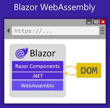
Le code et un runtime .NET sont téléchargés sur le poste client.
Tout fonctionne dans le navigateur en contexte WebAssembly.
Serveur ou Client ?
Pas de réponse universelle !
Server
WebAssembly
Client léger
Sollicitation du serveur
Code sécurisé
Outils 100% adaptés
API totale
100% chez le client
Mode déconnecté
Hébergement simplifié
Autre technologie d'API
Beaucoup d'utilisateurs
Possibilité de PWA
Création d'un premier projet en Blazor :
La plupart des développeurs C# développent avec Visual Studio 2022. Quand on clique sur "Créer un projet", on sélectionne "Application Blazor".
Après avoir entrer un nom de projet, on doit sélectionner la version de .NET (moi, j'ai mis .NET 8). On doit choisir entre "Application serveur Blazor" et "Blazor WebAssembly App".
Il faut bien décocher le "HTTPS".
On peut faire la même chose en ligne de commande. Donc, dans le dossier "MyApp", on peut lancer une invite de commandes (Powershell ou Shell) et exécuter la commande suivante :
dotnet --version
Ctte commande permet d'afficher la version du runtime et non du SDK. Ensuite, on crée le projet "Blazor Server App" sans le "HTTPS" avec la commande suivante :
dotnet new blazorserver --no-https
Présentation des fichiers :
Pour lancer le projet en lignes de commandes, il faut entrer cette instruction :
dotnet run
Program.cs est une application Console qui va lancer un serveur qui va répondre aux requêtes HTTP.
Le routeur Blazor :
Dans le fichier _Imports.razor, on va définir toutes les instructions using en préfixant bien par un '@'. C'est la même chose que le fichier _Imports.cs dans ASP.NET Core.
@page "/" : ça permet de dire que ce fichier sera exécuter sur l'url "/".
Qu'est-ce qu'un composant Blazor ?
Le Layout se trouve dans le dossier "Shared" qui est un dossier contenant des composants visibles pour tous les autres composants.
Les parmètres de route :
On peut rajouter une deuxième instruction "@page". Comme par exemple : @page "/counter/{value:int}". On doit rajouter l'annotation [Parameter] à la propriété "public int Value { get => currentCount; set => currentCount = value; }.
Donc, le fichier Counter.razor devient :
@page "/counter"
@page "/counter/{value:int}"
<h1>Counter</h1>
<p>Current count : @currentCount</p>
<button class="btn btn-primary" @onclick="IncrementCount">Click me</button>
@code {
private int currentCount = 0;
[Parameter]
public int Value { get => currentCount; set => currentCount = value; }
private void IncrementCount()
{
currentCount++;
}
}
Séparation de la vue du code :
Certains développeurs, comme moi, préfèrent avoir deux fichiers : le comportement et la vue. On peut utiliser le concept de classes partielles. On va créér une nouvelle classe "Counter.razor.cs".
Pour que ça fonctionne correctement, dans cette nouvelle classe, il faut rajouter le mot-clé "partial" dans le nom de la classe.
Ensuite, on doit copier tout ce qu'il y a dans le "@code" dans la nouvelle classe.
Dans le fichier "Counter.razor.cs", voici le code :
using Microsoft.AspNetCore.Components;
using System;
using System.Collections.generic;
using System.Linq;
using System.Threading.Tasks;
namespace MyApp.Pages
{
public partial class Counter
{
private int currentCount = 0;
[Parameter]
public int Value { get => currentCount; set => currentCount = value; }
private void IncrementCount()
{
currentCount++;
}
}
}
Moi, au lieu d'avoir une classe partielle, je prèfère avoir une notion d'héritage avec une classe "CounterBase" qui hérite de "ComponentBase". Donc, le fichier "Counter.razor.cs" devient :
using Microsoft.AspNetCore.Components;
using System;
using System.Collections.generic;
using System.Linq;
using System.Threading.Tasks;
namespace MyApp.Pages
{
public class CounterBase : ComponentBase
{
protected int currentCount = 0;
[Parameter]
public int Value { get => currentCount; set => currentCount = value; }
protected void IncrementCount()
{
currentCount++;
}
}
}
Dans le fichier "Counter.razor", on devra ajouter l'instruction "@inherits" pour préciser que la classe partielle qui représente ce composant Blazor hérite de ma classe "CounterBase" que j'ai créée.
En Blazor, les composants suivent un cycle de vie bien défini, avec plusieurs méthodes de cycle de vie permettant d'interagir avec ces phases. Voici les principales phases du cycle de vie du composant en Blazor ainsi que les fonctions associées :
Initialization (Initialisation) :
OnInitialized : Cette méthode est appelée une fois que le composant a été initialisé et qu'il est prêt à être utilisé. C'est le point de départ du cycle de vie du composant.
Parameters Set (Paramètres définis) :
OnParametersSet : Cette méthode est appelée lorsque les paramètres du composant ont été définis ou modifiés. Elle est utilisée pour réagir aux changements de paramètres du composant.
Rendering (Rendu) :
OnAfterRender : Cette méthode est appelée après que le rendu du composant et de ses enfants a été effectué.
OnAfterRenderAsync : Similaire à OnAfterRender, mais asynchrone.
OnAfterRender(bool firstRender) : Cette méthode est appelée après le rendu initial du composant et après chaque mise à jour du rendu, avec un paramètre indiquant si c'est la première fois que le composant est rendu.
Update (Mise à jour) :
ShouldRender : Cette méthode est utilisée pour déterminer si le composant doit être rendu à nouveau en réponse à des modifications d'état interne. Elle retourne true si le composant doit être rendu à nouveau et false sinon.
Disposal (Élimination) :
Dispose : Cette méthode est appelée lorsque le composant est éliminé de la mémoire et qu'il n'est plus nécessaire. C'est le point de sortie du cycle de vie du composant.
ces méthodes fournisssent des points d'entrée pour exécuter du code à différentes étapes du cycle de vie du composant, ce qui permet de réagir aux événements et de contrôler le comportement du composant en fonction de son état.
Premier exercice :
On instancie tout notre jeu du nombre mystère dans la fonction protected override void OnInitialized() => base.OnInitialized();
Pour les nombres aléatoires, on utilise la classe Random. Comme par exemple, var random = new Random();
Créons un projet "NombreMagique" sans "HTTPS". Sur le dossier "Pages", créons un nouveau composant Razor "NombreMagique".
Pas oublié de rajouter un nouveau lien dans la barre de navigation.
Dans le fichier "NombreMagique.razor.cs", voici le code :
using Microsoft.AspNetCore.Components;
using System;
using System.Collections.generic;
using System.Linq;
using System.Threading.Tasks;
namespace NombreMagique.Pages
{
public class NombreMagiqueBase : ComponentBase
{
protected const int NbLifesMax = 5;
protected const int NbMax = 20;
protected int value;
protected int nbMagique;
protected int nbRemainingLifes;
protected bool? gameWon;
protected override void OnInitialized()
{
ReinitGame();
base.OnInitialized();
}
protected void ReinitGame()
{
var random = new Random();
nbMagique = random.Next(NbMax);
nbRemainingLifes = NbLifesMax;
gameWon = null;
value = 0;
}
protected void TestNumber()
{
if (value == nbMagique)
{
gameWon = true;
}
else
{
nbRemainingLifes--;
if (nbRemainingLifes == 0)
{
gameWon = false;
}
}
}
}
}
Dans le fichier "NombreMagique.razor", on écrit :
@inherits NombreMagiqueBase
@page "/nombre"
<h3>Nombre magique</h3>
@if (gameWon.HasValue)
{
if (gameWon.Value)
{
<h2>Gagné!</h2>
}
else
{
<h2>Perdu</h2>
}
<button class="btn btn-primary" onclick="() => ReinitGame()">Rejouer</button>
}
else {
<div>
<h4>Devinez le nombre compris entre 0 et @NbMax</h4>
</div>
<div>
<input type="number" @bind="value">
<button class="btn btn-primary" @onclick="() => TestNumber()">Tester</button>
</div>
<div>
@for (int i = 0; i < nbRemainingLifes; i++)
{
<span>♥ </span>
}
</div>
}
Dans le dossier "Properties", il faut supprimer le "profiles" de "IISExpress" du fichier "lauchSettings.json", ainsi que le "listSettings".
Dans Blazor, "@bind" et "@bind-Value" sont deux façons d'effectuer la liaison de données bidirectionnelle. Cependant, il existe quelques différences subtiles entre les deux.
@bind :
"@bind" est une syntaxe concise qui combine la liaison en lecture seule ("@bind="propriete"") et la liaison en écriture ("@oninput="e => propriete = e.Value")).
Il est souvent utilisé dans des éléments d'entrée de formulaire tels que "<input>", "<select>" et "<textarea>".
La syntaxe "@bind se charge à la fois de la mise à jour de la valeur de la propriété lorsqu'un utilisateur interagit avec l'élément d'entrée lorsque la propriété change dans le code.
Exemple :
<input type="text" @bind="Nom" />
@bind-Value :
"@bind-Value" est utilisé dans des contextes où vous souhaitez explicitement la propriété liée de l'élément.
Il est souvent utilisé avec des composants personnalisés où la propriété à lier peut être déterminée dynamiquement.
Vous devez spécifier la propriété explicitement, par exemple, @bind-Value="model.Nom".
Exemple :
<MonComposant @bind-Value="model.Nom />
En résumé, @bind est plsu concis et pratique pour les cas d'utilisation courants où vous liez directement une propriété à la valeur d'un élément d'entrée, tandis que @bind-Value offre une flexibilité accrue en permettant de spécifier explicitement la propriété liée à la valeur. Vous pouvez choisir celui qui convient le mieux à votre scénario d'utilisation.
Dans SSMS, il faut se connecter au SQL Server local installé précédemment. Ensuite, il suffit créer une nouvelle base de données (par exemple : "MyApplicationDb").
Ensuite, dans Visual Studio 2022, en ouvrant la fenêtre de l'explorateur de serveurs, il faut "ajouter une connexion" et remplir les champs "Souce de données" par "Microsoft SQL Server (SqlClient)", "Nom du serveur" par ".\" et "Sélectionner ou entrer un nom de base de données" par "MyApplicationDb".
Enfin, dans la solution, en gérant les paquets NuGet, on va vérifier si les paquets "Micosft.EntityFrameworkCore", "Microsoft.EntityFrameworkCore.Tools" et "Micosft.EntityFrameworkCore.SqlServer" sont bien installés, sinon on installe ceux qui manquent en sélectionnant bien la dernière version stable.
Dans le projet, créez un nouveau dossier "Data" s'il n'existe pas et dedans créez une nouvelle classe "MyDbContext" :
using Micorsoft.EntityFrameworkCore;
namespace MyApplication.Data
{
public class MyDbContext : DbContext
{
public MyDbContext(DbContextOptions<MyDbContext> options) : base(options)
{
}
}
}
Dans appsettings.json, il faut rajouter la "ConnectionStrings" qu'on trouve dans les propriétés de la connexion qu'on a créée précédemment :
Enfin, dans le programme principal, qui a normalement pour nom "Program.cs", il faut rajouter quelques lignes :
using MyApplication.Components;
using MyApplication.Data;
using Microsoft.EntityFrameworkCore;
var builder = WebApplication.CreateBuilder(args);
var connectionString = builder.Configuration.GetConnectionString("Default") ?? throw new NullReferenceException("No connection string in config !");
// Add services to the container.
builder.Services.AddRazorComponents().AddInteractiveServerComponents();
builder.Services.AddDbContextFactory<MyDbContext>((DbContextOptionsBuilder options) => options.UseSqlServer(connectionString));
var app = builder.Build();
// Configure the HTTP request pipeline.
if (!app.Environment.IsDevelopment())
{
app.UseExceptionHandler("/Error", createScopeForErrors: true);
}
app.UseStaticFiles();
app.UseAntiforgery();
app.MapRazorComponents<App>().AddInteractiveServerRenderMode();
app.Run();
Création des entitiés :
Dans le dossier "Data", créez un dossier "Models" et créez un nouvelle classe (par exemple : "Customer.cs") :
using System.ComponentModel.DataAnnotations;
namespace MyApplication.Data.Models
{
public class Customer
{
[Key]
public int Id { get; set; }
public string Name { get; set; }
public int Age { get; set; }
public DateTime CreatedDate { get; set; }
}
}
Ensuite, dans notre DbContext, on peut créez des DbSet :
using MyAplication.Data.Models;
using Microsoft.EntityFrameworkCore;
namespace MyApplication.Data
{
public class MyDbContext : DbContext
{
public MyDbContext(DbContextOptions<MyDbContext> options) : base(options)
{
}
public DbSet<Customer> Customers { get; set; }
}
}
Dans la pratique, les modèles de données des projets évoluent au fur et à mesure que des fonctionnalités sont implémentées : de nouvelles entités et propriétés sont ajoutées et supprimées, et les schémas de la base de données doivent être modifiés en conséquence pour rester synchronisés avec l'application. La fonctionnalité de migration dans Entity Framework Core permet de mettre à jour de manière incrémentielle le schéma de la base de données pour qu'il reste synchronisé avec le moèle de données de l'application tout en conservant les données existantes dans la base de données.
Dans les grandes lignes, les mogrations fonctionnent de la façon suivante :
Lors de l'introduction d'une modification du modèle de données, le développeur utilise des outils Entity Framework Core afin d'ajouter une migration correspondante décrivant les mises à jour nécessiares pour préserver la synchronisation du schéma de la base de données. Entity Framework Core compare le modèle actuel à un instantané de l'ancien modèle pour déterminer les différences et génère des fichiers sources de migration. Ces fichiers peuvent, comme n'importe quel fichier source, faire l'objet d'un suivi dans le contrôle de code source du projet.
Une fois générée, la nouvelle migration peut être appliquée à une base de données de différentes façons. Entity Framework Core enregistre toutes les migrations appliquées dans une table d'historique spéciale, ce qui lui permet de savoir quelles migrations ont été appliquées.
Dans l'onglet "Outils", sélectionnez "Gestionnaire de package NuGet" et ensuite "Console du Gestionnaire de package".
Tapez la commande suivante :
Add-Migration "Added_Customer_Table"
Entity Framework Core créera un répertoire nommé "Migrations" dans votre projet et générera des fichiers. Il est judicieux d'inspecter précisément les fichiers en question, et éventuellement de les modifier, mais nous allons nous en passer pour l'instant.
Voici le fichier généré par la commande pour les customers :
using System;
using Micorsoft.EntityFrameworkCore.Migrations;
#nullable disable
namespace MyApplication.Migrations
{
public partial class Added_Customer_Table : Migration
{
protected override void Up(migrationBuilder migrationBuilder)
{
migrationBuilder.CreateTable(
name: "Customers",
columns: table => new
{
Id = table.Column<int>(type: "int", nullable: false)
.Annotation("SqlServer:Identity", "1, 1"),
Name = table.Column<string>(type: "nvarchar(max)", nullable: false),
Age = table.Column<int>(type: "int", nullable: false),
CreatedDate = table.Column<DateTime>(type: "datetime2", nullable: false)
},
constraints: table =>
{
table.PrimaryKey("PK_Customers", x => x.Id);
});
}
}
protected override Down(MigrationBuilder migrationBuilder)
{
migrationBuilder.DropTable(name: "Customers");
}
}
Une fois la migration créée, il faut mettre à jour la base de données avec la commande :
Update-Database
S'il y a pas eu d'erreurs, on devrait retrouver deux tables dans notre base de données : la table par défaut "dbo._EFMigrationHistory" et la table "dbo.Customers".
Les relations :
On va créer une nouvelle classe dans "Models" : "Order.cs".
using System.ComponentModel.DataAnnotations;
namespace MyApplication.Data.Models
{
public class Order
{
[Key]
public int Id { get; set; }
public string ItemDescription { get; set; }
public int Quantity { get; set; }
public Customer Customer { get; set; }
}
}
Dans le DbContext, pas oublier de rajouter un nouveau DbSet, d'ajouter une nouvelle migration "Added_Orders_Table" et de mettre à jour la base de données.
Pour ajouter une contrainte d'unicité (unique en SQL) sur la propriété "Name", il faut rajouter, dans la partie "constraints" des migrations, la ligne suivante :
table.UniqueConstraint("UQ_VotreTable_Name", x => x.Name);
Pour ajouter une contrainte précisant les valeurs spécifiques que peut prendre une propriété (par exemple : la propriété "Sexe" peut prendre "M", "F" ou "X" comme valeur), rajoutez toujours dans "constraints" la ligne suivante :
table.CheckConstraint("CK_VotreTable_Sexe", "Sexe IN ('M', 'F', 'X')");
Créer un service pour interagir avec le contexte (CRUD) :
Dans le projet, on crée un nouveau répertoire "Services" et créons la classe "CustomerService.cs" dedans.
using MyApplication.Data;
using MyApplication.Data.Models;
using Microsoft.EntityFrameworkCore;
namespace MyApplication.Service
{
public class CustomerService
{
private IDbContextFactory<MyDbContext> _dbContextFactory;
public CustomerService(IDbContextFactory<MyDbContext> dbContextFactory)
{
_dbContextFactory = dbContextFactory;
}
public void AddCustomer(Customer customer)
{
using (var context = _dbContext.CreateDbContext())
{
context.Customers.Add(customer);
context.SaveChanges();
}
}
public Customer GetCustomerByName(string name)
{
using (var context = _dbContextFactory.CreateDbContext())
{
var customer = context.Customers.SingleOrDefault(x => x.Name == name);
return customer;
}
}
public void UpdateCustomerByName(string name, int age)
{
var customer = GetCustomerByName(name);
if (customer == null)
{
throw new Exception("Customer does not exist. Cannot update");
}
customer.Age = age;
using (var context = _dbContextFactory.CreateDbContext())
{
context.Customers.Update(customer);
context.SaveChanges();
}
}
public void RemoveCustomerByName(string name)
{
var customer = GetCustomerByName(name);
if (customer == null)
{
throw new Exception("Customer does not exist. Cannot delete");
}
using (var context = _dbContextFactory.CreateDbContext())
{
context.Customers.Remove(customer);
context.SaveChanges();
}
}
}
}
Dans le "Program.cs", n'oubliez pas de rajouter les lignes suivantes à la bonne place avant l'ajout du DbContextFactory :
using MyApplication.Services;
builder.Services.AddTransient<CustomerService>();
Dans le fichier "Index.razor" du dossier "Pages", on va créer un formulaire pour insérer un nouveau "Customer" dans la base de données :
@page "/"
@using MyApplication.Services
@using MyAplication.Data.Models
@inject CustomerService customerService
<PageTitle>Index</PageTitle>
<h1>Hello, world!</h1>
Welcome to your new app.
<SurveyPrompt Title="How is Blazor working for you?" />
<EditForm Model="@customer" OnValidSubmit="HandleSubmit">
<label for="NameInput">Name</label>
<InputText id="NameInput" @bind-Value="@customer.Name"></InputText>
<label for="AgeInput">Age</label>
<InputNumber id="AgeInput" @bind-Value="@customer.Age"></InputNumber>
<button type="submit" class="btn btn-primary">Create</button>
</EditForm>
@code {
Customer customer = new Customer();
public void HandleSubmit(EditContext editContext)
{
var newCustomer = (Customer)editContext.Model;
newCustomer.CreatedDate = DateTime.Now;
customerService.AddCustomer(newCustomer);
}
}
Blazor en .NET 8 :
Dans ce cours, on va apprendre à développer des applications Web et Mobiles avec Blazor.
Les prérequis pour faire du Blazor sont les fondamentaux de C# et les fondamentaux HTML/CSS. Des notions MAUI sont un plus.
Qu'est-ce que Blazor ?
Pour rappel, Blazor est la technologie ASP.NET de Microsoft pour réaliser des applications graphiques riches et interactives.
Blazor permet de réaliser des applications web, mais pas que ! Il est possible d'utiliser Blazor dans des applications natives (mobile ou desktop).
L'avantage principal de la technologie : on utilise C# de bout en bout (pas de JavaScript nécessaire !!!).
Les variantes de Blazor : WebApp, WASM & Hybrid :
Blazor WebApp - Server :
Avant Blazor en .NET 8, on avait Blazor Server qui était une application ASP.NET s'exécutant sur le serveur. Donc, avec tout le potentiel de .NET côté serveur ! Du côté client, on avait un petit client en JavaScript qui ouvrait un pont WebSocket avec le serveur pour lui demander d'exécuter certaines interactions et de récupérer les modifications de DOM à appliquer sur la partie graphique. On avait pas la possibilité de dire tel composant n'a pas d'interactivité pas dynamiquement riche donc on peut le rendre de façon statique du côté serveur vu que l'utilisateur ne va pas réagir avec ce composant-là. Donc, toute l'application était connectée en permanence à ce pont en WebSocket.
Le moteur s'exécute sur le serveur et renvoie aux clients des instructions pour mettre à jour le DOM.
Le client maintient un lien avec le serveur par le biais d'un pont WebSocket si l'interactivité est nécessaire.
On a un équivalent en JavaScript avec les React Component Server.
Blazor Web App - WebAssembly :
Il y a deux modes de fonctionnement. Nous avons la possibilité en Blazor de créer une application WebAssembly autonome, c'est-à-dire qu'on va créer une application statique au sens qu'elle n'a pas de lien avec un serveur comme on créerait une application Angular, React ou autres.
Le runtime .NET (spécifique) ainsi que l'application est téléchargé sur le poste du client.
100% du code est exécuté sur le poste client.
Blazor Hybrid :
Les composants Blazor fonctionnent dans un composant natif (navigateur/webview) de la plateforme cible.
Cette dernière expose des accès à certaines APIs natives.
Blazor WebApp :
Depuis .NET 8, Blazor pour le web a été unifié dans un seul template : Blazor WebApp !
Le mode de rendu (Server, WebAssembly ou automatique) se définit par composant.
Server ou WASM :
Si on part sur une application Web... Pas de réponses universelles !
Server
WASM
Client léger
Tout est sur le serveur
Sécurisé
100% de l'expérience dev
100% du framework .NET
Performant
100% sur le poste client
Mode déconnecté
hébergement simplifié
Supporte la charge
Transformable en PWA
Créer un projet Blazor avec VS 2022 :
Nous allons créer un projet Blazor Web App dans Visual Studio. On peut toujours faire du WebAssembly dans la Web App. Attention, de bien choisir le type de projet pour que ça reste en .NET 8.
Donnons-lui un nom (par exemple : MyAppBlazor) et on choisit bien .NET 8 sans configuration le HTTPS. Le type d'interactivité passe maintenant en auto, c'est-à-dire la combinaison entre Server et WebAssembly.
En choisissant le mode automatique, on a deux projets : MyAppBlazor et MyAppBlazor.Client.
Créer un projet Blazor avec le CLI :
Pour ceux qui veulent pas utiliser VS 2022, on utilisera le CLI (l'abréviation pour "lignes de commande"). La commande suivante va nous permettre d'afficher la totalité des templates existants sur notre machine nous permettant de créer une nouvelle application :
dotnet new list
Dans cette liste qui est assez grande, vont nous intéresser certains templates. En l'occurence, Application .NET MAUI Blazor va nous permettre de créer une application Blazor Hybrid. Attention de ne pas se servir des trois templates suivants : blazorserver, blazorserver-empty ou encore blazorwasm-empty car les versions de .NET utilisées sont les versions de .NET 7 ou moins.
blazorwasm est toujours valable en .NET 8 et permet de faire une WebAssembly. Ici, dans ce cours, on utilisera le nouveau template Blazor Web App : blazor.
Pour faire le même projet que dans Visual Studio 2022 en lignes de commande :
dotnet new blazor -int Auto --no-https
Composant statique et streaming :
On parle ici de Server Side Rendering (SSR) et de Stream Rendering.
Les composants qui nécessitent une interactivité doivent être placés dans MyAppBlazor.Client. Donc, les composants statiques sont dans MyAppBlazor et les composants dynamiques dans MyAppBlazor.Client.
C'est MyAppBlazor qui se lance au démarrage et non MyAppBlazor.Client. Le code HTML est dans le fichier App.razor.
Dans la page Weather se trouvant dans MyAppBlazor, on a rajouté un attribut : @attribute[StrealRendering(true).
Composant interactif :
Dans la page Counter se trouvant dans MyAppBlazor.Client, on a rajouté un attribut : @attribute [RenderModelInteractiveAuto]. Depuis un certain temps, Microsoft a abandonné cet attribut et on utilisera l'instruction @rendermode InteractiveAuto à la place.
Blazor met toujours un élément @code, mais moi je préfère séparer le HTML du code C# de l'élément @code en extrayant le bloc vers le code-behind. Ça créra un nouveau fichier Counter.razor.cs qui contient la classe partial.
Blazor Hybrid avec MAUI :
On va créer un nouveau projet dans notre application. Cette fois-ci, ce sera un projet Blazor Hybrid avec .NET MAUI Blazor : MyAppBlazor.Mobile. Si vous avez une erreur dans Visual Studio 2022 lors de la création de ce projet, il faut vérifier dans Visual Studio Installer qu'on a bien coché "Développement .NET Multi-Platform App UI et exécutez la commande suivante dans un terminal qui va installer tous les packages liés à MAUI :
dotnet workload install maui
On a le MauiProgram.cs qui ressemble au Program.cs. MauiProgram.cs et CreateMauiApp() sont des points d'entrée que va utiliser le framework MAUI. Mais pour qu'une application MAUI fonctionne, on a un MauiBlazorWebView. MainPage.xaml (XAML est un langage de balisage inspiré de XML) est la page principale de notre application Blazor Hybrid.
Librairie de composants Blazor :
Ce qu'on va faire prochainement dans Visual Studio 2022, on peut utiliser la commande suivante à la place :
dotnet new razorclasslib
Donc soit on fait cette commande soit on ajoute un nouveau projet dans notre application : Bibliothèque de classes Razor. On va l'appeler "MyAppBlazor.Components" et on va supprimer les fichiers "Component1.razor" et "Example.JsInterop.cs" ainsi que les fichiers dans le dossier wwwroot.
Le fichier "_Imports.razor" contient une collection @using qui sont implicitement à chacun des composants pour éviter de faire les différents @using.
On crée le fichier "Home.razor" dans le projet "MyAppBlazor.Components" avec le contenu suivant :
<h1>Hello, world!</h1>
Welcome to your new app.
Dans les projets, on oublie de rajouter une référence vers le projet "MyAppBlazor.Components".
Dans le fichier "Index.razor" du projet "MyAppBlazor.Mobile", on modifie pour que ça donne ceci :
@page "/"
<Home></Home>
Dans le fichier "_Imports.razor", on rajoute la ligne suivante :
@using MyAppBlazor.Components
Dans le fichier "Home.razor" du projet "MyAppBlazor", on le modifiera avec le code ci-dessous :
Ensuite, on va rajouter un projet "MyAppBlazor.Models". On va supprimer le fichier "Class1.cs" et on va créer le fichier "WeatherForecast.cs" avec le contenu suivant :
namespace MyAppBlazor.Models;
public class WeatherForecast
{
public DateOnly Date { get; set; }
public int TemperatureC { get; set; }
public int TemperatureF => 32 + (int)(TemperatureC / 0.5556);
public string Summary { get; set; }
}
On va rajouter la référence dans le projet Hybrid vers le Models, ainsi que la référence dans le projet Blazor Web App. Dans le fichier "_Imports.razor", on oublie pas de rajouter le using suivant :
@using MyAppBlazor.Models
On va supprimer le dossier "Data" du projet "MyAppBlazor.Mobile" et on va créer un projet "MyAppBlazor.Services" en supprimant le fichier "Class1.cs". On fait une référence le projet Models et on va créer le fichier "WeatherForecastService.cs" avec le contenu suivant :
using System;
using System.Collections.Generic;
using System.Linq;
using System.Text;
using System.Threading.Tasks;
namespace MyAppBlazor.Services;
public class WeatherForecastService
{
public async Task<WeatherForecast[]> GetForecasts()
{
await Task.Delay(1000);
var DateOnly startDate = DateOnly.FromDateTime(DateTime.Now);
var string[]? summaries = new[] { "Freezing", "Bracing", "Chilly", "Cool", "Mild", "Warm", "Hot", "Sweltering" "Scoching" };
return Enumerable.Range(1, 5).Select(index => new WeatherForecast
{
Date = startDate.AddDays(index),
TemperatureC = Random.Shared.Next(-20, 55),
Summmary = summaries(Random.Shared.Next(summaries.Length))
}).ToArray();
}
}
On rajoute une référence vers le Service que je viens de créer au projet Mobile et, dans le fichier "MauiProgram.cs", on utilise le bon using dans la ligne suivante :
Créons un nouveau projet "MyAppBlazor.Server" avec le type d'interactivité en "Server" et le lieu d'interactivité en "Global" tout en supprimant la partie "HTTPS".
Blazor WASM autonome :
Créons un nouveau projet WebAssembly "MyAppBlazor.WASM" tout en supprimant comme d'habitude le "HTTPS".
Exercice pratique :
Créons un petit jeu qui s'appelle "le nombre magique". Pour cela, on crée une solution "NombreMagique" avec quatre projets à l'intérieur : "NombreMagique.Components" (librairie), "NombreMagique.Hybrid" (MAUI), "NombreMagique.Server" (en "Global") et "NombreMagique.WASM".
On a des fichiers images qu'il faut copier dans le "wwwroot" des divers projets. On a un fichier "script.html" qu'il faudra modifier pour les divers projets :
<!-- Dans la balise <head> -->
<link href="https://cdn.jsdelivr.net/npm/bootstrap@5.2.3/dist/css/bootstap.min.css" rel="stylesheet" integrity="sha384-rbsA2VBKQhggwzxH7pPCaAqO46MgnOM80zW1RWuH61DGLwZJEdK2Kadq2F9CUG65" crossorigin="anonymous">
<body class="d-flex align-items-center justify-content-center">
<div class="bg-image"></div>
<!-- JEU -->
<div class="content">
<div class="row">
<div class="col-xs-12 col-sm-12 col-md-2 mb-3 mb-md-0 d-flex align-items-center justify-content-center">
<img src="images/etoile.png" class="rotating" height="128" />
</div>
<div class="col-xs-12 col-sm-12 col-md-8 d-flex align-items-center justify-content-center flex-column">
<h1>Le nombre magique</h1>
<h4>Tentez de deviner un nombre entre 1 et 20</h4>
<div class="row">
<div class="col">
<input type="number"/>
</div>
<div class="col">
<a class="btn bth-success btn-valid">
Go
</a>
</div>
</div>
<div class="row mt-4">
<!-- À UTILISER POUR AFFICHER LES VIES -->
<div class="col-auto">
<img src="/images/life.png" height="32" />
</div>
</div>
<!-- À AFFICHER À LA FIN DU JEU -->
<a class="btn btn-primary btn-valid">
Rejouer
</a>
</div>
<div class="col-xs-12 col-sm-12 col-md-12 mt-3 mt-md-0 d-flex align-items-center justify-content-center">
<img src="images/etoile.png" class="rotating" height=128" />
</div>
</div>
</div>
<!-- Avant la fermeture de <body> -->
< script src="https://cdn.jsdelivr.net/npm/bootstrap@5.2.3/dist/js/bootstrap.bundle.min.js" integrity="sha384-kenU1KFdBIe4zVF0s0G1M5b4hc4hcpxyD9F7jL+jjXkk+Q2h455rYXK/7HAuoJl+014" crossorgin="anonymous"></script>
</body>
On doit modifier le fichier "App.razor" du projet "NombreMagique.Server" :
On oublie pas de supprimer les composants de base fournis dans le projet "NombreMagique.Components" et on crée dedansd le fichier "Game.razor" :
<!-- JEU -->
<div class="content">
<div class="row">
<div class="col-xs-12 col-sm-12 col-md-2 mb-3 mb-md-0 d-flex align-items-center justify-content-center">
<img src="images/etoile.png" class="rotating" height="128" />
</div>
<div class="col-xs-12 col-sm-12 col-md-8 d-flex align-items-center justify-content-center flex-column">
<h1>Le nombre magique</h1>
@if (gameWon is null)
{
<h4>Tentez de deviner un nombre entre 1 et 20</h4>
<div class="row">
<div class="col">
@if (!string.IsNullOrEmpty(indice))
{
@indice
}
else
{
<text> </text>
}
</div>
</div>
<div class="row">
<div class="col">
<input type="number" min="@NbMin" max="@NbMax" @bind="value" />
</div>
<div class="col">
<a class="btn bth-success btn-valid" @onclick="CheckNumber">
Go
</a>
</div>
</div>
<div class="row mt-4">
<!-- À UTILISER POUR AFFICHER LES VIES -->
@for (int i = 0; i < nbRemainingLifes; i++)
{
<div class="col-auto">
<img src="/images/life.png" height="32" />
</div>
}
</div>
}
else
{
@if (gameWon.Value)
{
<h3>C'est gagné !</h3>
}
else
{
<h3>C'est perdu ! Le nombre magique était @nbMagic</h3>
}
<!-- À AFFICHER À LA FIN DU JEU -->
<a class="btn btn-primary btn-valid" @onclick="InitGame">
Rejouer
</a>
}
</div>
<div class="col-xs-12 col-sm-12 col-md-12 mt-3 mt-md-0 d-flex align-items-center justify-content-center">
<img src="images/etoile.png" class="rotating" height=128" />
</div>
</div>
</div>
Dans le fichier "Game.razor.cs", on a le code-behind qui va nous permettre d'interagir avec notre jeu :
// <auto-generated/>
namespace NombreMagique.Components;
public partial class Game
{
private const int Lifes = 5;
private const int NbMin = 1;
private const int NbMax = 20;
private int nbMagic;
private bool? gameWon;
private int nbRemainingLifes;
private int? value;
private string indice;
protected override void OnInitizlized()
{
InitGame();
}
private void InitGame()
{
gameWon = null;
nbMagic = Random.Shared.Next(NbMin, nbMax + 1);
nbRemainingLifes = Lifes;
value = null;
indice = null;
}
private void CheckNumber()
{
if (value == nbMagic)
{
gameWon = true;
indice = null;
return;
}
nbRemainingLifes--;
if (nbRemainingLifes <= 0)
{
gameWon = false;
indice = null;
return;
}
if (value > nbMagic) indice = "Le nombre magique est plus petit";
else if (value < nbMagic) indice = "Le nombre magique est plus grand";
}
}
On oublie d'ajouter la dépendance du Components sur le Server et de modifier le fichier "Home.razor" :
@page "/"
<NombreMagique.Components.Game />
Ensuite, supprimons le dossier "Data" ainsi que les fichiers d'exemples dans le projet "NombreMagique.Hybrid" tout en ajoutant une dépendance vers le projet Components et modifions le fichier "Index.razor" :
@page "/"
<NombreMagique.Components.Game />
Dans le dossier "Shared" du projet Hybrid, je n'ai ni besoin du "MainLayout.razor" ni du "NavMenu.razor" car on va déplacer le "MainLayout.razor" du projet Server. Et je nettoie la notion de Singleton dans le "MauiProgram.cs" qui n'a palus de sens ici.
On supprime le fichier CSS et on modifie le fichier "index.html" des projets Hybrid et WASM en ajoutant les liens Bootstrap et la "Bg-Image". Supprimons le loading du WASM.
Le cycle de vie :
Quand on tape "override" dans Visual Studio 2022, on voit, en plus des méthodes de la classe Object, les méthodes du cycle de vie.
Lors de l'appel à la méthode SetParametersAsync du cycle de vie, il appelle les méthodes OnInitialized, OnInitializedAsync, OnParametersSet et OnParametersSetAsync du cycle de vie. Il le répète deux fois avant d'appeler les méthodes OnAfterRender et OnAfterRenderAsync.
On peut se demander pourquoi certaines méthodes sont appelées plusieurs fois. C'est la notion de prérendu qui va nous guider sur le chemin de la compréhension de pourquoi c'est appelé plusieurs fois.
En effet, quand un composant Blazor va être invoqué, il va être prérendu. Un composant Blazor doit forcément avoir un constructeur sans paramètres, mais il n'est pas possible de définir un constructeur avec des paramètres en Blazor (en .NET 8 actuellement) parce que le composant Blazor doit être généré dynamiquement par le framework Blazor.
Donc, le premier appel correspond au prérendu et le second appel correspond au rendu effectif quand le composant va commencer à pouvoir être interactif et qu'il va communiquer avec le serveur. C'est uniquement à partir de là qu'on aura le OnAfterRender qui va se mettre en place.
Pour résumer, comprendre le cycle de vie est crucial pour maîtriser le fonctionnement des composants Blazor. Lorsqu'un composant Blazor est invoqué, il subit un processus de prérendu (le composant est rendu sur le serveur et ça permet de générer le contenu HTML initial qui sera renvoyé au navigateur web) suivi du rendu effectif (une fois que le contenu initial est renvoyé au naviagteur client, le composant devient interactif et peut communiquer avec le serveur).
Pour éviter le prérendu dans Blazor Server, dans le fichier App.razor, on doit modifier les Routes pour qu'elles deviennent <Routes @rendermode=@(new InteravtiveServerRenderMode(false))" />.
Quand on met un await Task.Delay(2000) dans la méthode OnInitializedAsync, on passera par un OnAfterRender entre le début et la fin et on aura un ShouldRnder avant la fin du SetParametersAsync.
Le prerendering existe qu'en Blazor Server et non pas en Web Assembly. Dans cette dernière, on a le ShouldRnder et le OnAfterRender avant la fin du SetParametersAsync et non plus après.
Les paramètres (routing & composant) :
Il y a une condition pour qu'on puisse passer un paramètre d'un composant A à un composant B, c'et-à-dire d'un composant parent à un composant enfant : c'est le fait que l'objet que l'on va passer en paramètres puisse être sérialisable. En effet, si on veut passer cette information, il faut que Blazor puisse la sérialiser pour la communiquer par le biais de l'arbre de rendu au composant enfant.
Par exemple, le fichier SubComponent.razor :
<p>
SubComponent : @Data
</p>
@code {
[Parameter]
public string Data { get; set; }
}
Il va être appelé comme ceci dans le composant parent :
<SubComponent Data="Valeur du composant parent" />
Pour rendre ce paramètre obligatoire, on doit modifier l'annotation comme ceci :
[Parameter, EditorRequired]
On peut également extraire un paramètre d'une URL comme par exemple :
@page "/{Data}"
<p>
Infos de route : @Data
</p>
@code {
[Parameter]
public string Data { get; set; }
}
Si on veut accéder à la page localhost:5283/?Data=toto, on fait ceci :
@page "/"
<p>
Infos de route : @Data
</p>
@code {
[SupplyParameterFromQuery]
public string Data { get; set; }
}
Pour rappel, la méthode OnParametersSet est appelée après celle de OnInitialized.
L'affectation des paramètres du composant n'est pas faite par la méthode OnParametersSet mais par la méthode SetParametersAsync.
Si tous les paramètres, de route ou de composant, sont tous initialisés dans la méthode OnInitialized, on est en droit de se poser la question à quoi sert la méthode OnParametersSet.
Cette méthode OnParametersSet sert à réagir aux modifications des paramètres du composant après leur initialisation initiale, c'est-à-dire qu'elle est appelée à chaque fois que les paramètres du composant sont mis à jour.
OnAfterRender :
Cette méthode est un peu particulière car, comme son nom l'indique, elle sera exécutée lorsque le composant sera affiché.
On va mettre dans cette méthode tout le code qui va se passer après le rendu du composant. Le paramètre firstRender est à true comme dans l'exemple suivant :
Une autre solution que je n'ai pas mentionnée est d'utiliser la méthode StateHasChanged dans le OnInitialized pour provoquer un 1er rendu avant votre appel API, mais le résultat est similaire.
Chaque fois que Blazor a détecté qu'une interface doit être rafraîchie, il va appeler la méthode ShouldRender pour savoir si le composant va être rafraîchi en retournant un booléen. Il n'existe pas de méthode qui s'appelle ShouldRenderAsync.
Cela permet au développeur de contrôler finement le rendu des composants en fonction de divers critères tels que l'état interne du composnat, les propriétés qui ont changé ou d'autres conditions métier. En implémentant ShouldRender, vous pouvez optimiser les performances de votre application en évitant les rendus inutiles lorsque le contenu du composant n'a pas changé.
SetParametersAsync & BuildRenderTree :
On a vu précédemment que la méthode SetParametersAsync encadre l'appel au cycle d'initialisation de notre composant composé de OnInitialized et de OnParametersSet. Voici son implémentation basique :
public override async Task SetParametersAsync(ParameterView parameters)
{
await base.SetParametersAsync(parameters);
}
La méthode BuilderRenderTree est une méthode automatiquement générée par le compilateur qui va lire le code HTML ou plus ou moins le code RAZOR du composant et va construire l'arbre de rendu.
En résumé, en combinant SetParametersAsync pour gérer les mises à jour de paramètres et BuildRenderTree pour constuire l'arbre de rendu, vous avez un moyen puissant de créer des composants Blazor flexibles et dynamiques.
Dispose :
Cependant, lorsqu'un composant n'est plus affiché à l'écran, il va se décharger de la mémoire et donc typiquement être détruit dans le sens où la mémoire qu'il utilisait va pouvoir être collectée mais surtout il va devoir nettoyer d'éventuelles ressources qu'il aurait occupées.
On peut implémenter l'interface IDisposable ou IAsyncDisposable et implémenter la méthode public void Dispose() ou la méthode public async ValueTask DisposeAsync() selon si c'est synchrone ou asynchrone.
TP 2 : Photo Explorer (v1) :
On va d'abord créer une solution nomée PhotoExplorer avec la ligne de commandes suivante :
dotnet new sln -n PhotoExplorer
Ensuite, on va ajouter trois nouveaux dossiers de solution nommés "api", "libs" et "ui". On va ensuite copier tous les éléments depuis le zip "api" dans un nouveau dossier nommé "PhotoExplorer.Api". Dans la solution, on oublie pas d'ajouter un projet existant dans le dossier "api".
À partir de ce moment-là, on va vérifier et gérer les mises à jour des packages NuGet.
On va ajouter un nouveau projet Blazor Web App nommé "PhotoExplorer.Manager" dans le dossier "ui". On décoche le HTTPS, on met aucun type d'authentification et "Server" "Per page/component" pour l'interactivité.
On va également ajouter un nouveau projet Bibliothèque de classes Razor nommé "PhotoExplorer.Components" dans le dossier "libs". Dans le dossier "wwwroot" du projet, on copie les dossiers "css" et "images" et on crée un dossier "Layouts" dans lequel on met le fichier "MainLayout.razor".
Maintenant, il faut pas oublier d'ajouter une référence vers le projet "Components" dans le projet "Manager" ainsi que supprimer le répertoire "Layout" et ajouter la ligne suivante dans le fichier "_Imports.razor" :
@using PhotoExplorer.Components.Layouts
Ainsi que dans le fichier "Routes.razor", le MainLayout pointe bien vers le bon fichier.
Ensuite, on va créer un projet Application WebAssembly Blazor nommé "PhotoExplorer.Explorer" sans "HTTPS" et on va rajouter la référence vers le projet "Components", supprimer le dossier "Layout" et ajouter la ligne dans le "_Imports.razor".
Enfin, on va créer le dernier projet qui est un projet Application .NET MAUI Blazor nommé "PhotoExplorer.Mobile" et ajouter la référence vers le projet "Components". On supprime les dossiers "Data" et "Shared", on supprime les fichiers exemples dans le dossier "Pages" et on ajoute la ligne dans le fichier "_Imports.razor". Dans le "MauiProgram.cs", on va supprimer le lien vers le "Data" et le Service.
Commençons maintenant à créer nos premiers composants. On va créer un composant "PhotoList.razor" dans le projet "Components".
On va créer un dossier "Models" dans le projet "Components" toujours, ajouter une classe photo, copier le JSON d'une photo récupérée depuis l'API et cliquer sur "Édition", "Collage spécial" et "Coller le code JSON en tant que classes". Le résultat final sera :
namespace PhotoExplorer.Components.Models;
public class Photo
{
public string Id { get; set; }
public string Path { get; set; }
public string Author { get; set; }
public string Description { get; set; }
}
Dans le fichier "PhotoList.razor.cs", on rajoute un private List<Photo>? _photos;.
Voici l'implémentation du fichier "PhotoList.razor.cs" :
namespace PhotoExplorer.Components;
public partial class PhotoList
{
private List<Photo>? _photos;
protected override async Task OnInitializedAsync()
{
using (var client = new HttpClient())
{
_photos = await client.GetFromJsonAsync<List<Photo>>("https://localhost:7198/photos");
}
}
}
Attention aux CORS de la WASM où il faut bien indiquer l'URL de la WASM autorisée dans l'API.
La navigation optimisée en Blazor Web App .NET 8 :
La navigation dans une application Blazor est essentielle pour permettre aux utilisateurs de passer d'une page à une autre de manière fluide.
La balise de base est le <a> qui est, comme en HTML, utilisée pour créer des liens dans une page web. Par exemple suivant :
<a href="2">Aller sur la page 2</a>
C'est la navigation intelligente de Blazor qui fait un fetch en JavaScript en arrière plan.
Si vous voulez désactiver cette navigation intelligente de Blazor pour notamment contrôler le chargement précoce des ressources, il faut modifier le fichier "App.razor" du projet "Components" comme ceci :
Cette configuration empêchera Blazor de préserver le DOM lors de la navigation, offrant ainsi un contrôle accru sur le chargement des ressoruces.
Microsoft a introduit un composant dédié à la navigation : NavLink. Dans sa méthode BuildRenderTree, ce composant génère une balise <a>.
L'avantage du NavLink par rapport à un a classique est qu'il va gérer pour nous la notion de isActive. En se basant sur Bootstrap, il utilise la classe CSS active mais vous pouvez définir votre propre classe en rajoutant la propriété ActiveClass dans le composant NavLink.
On peut également ajouter des attributs additionnels à ce composant comme dans l'exemple suivant :
Ce composant a aussi la notion de Match qui va déterminer le comportement à avoir par rapport à ce lien en particulier. Par exemple, pour la route /personnes/details/1, on peut dire Match="NavLinkMatch.All" pour dire qu'on prend l'URL au complet ou Math="NavLinkMatch.Prefix" pour dire que l'URL /personnes suffit.
Les services :
Il faut savoir que NavigationManager est un service fourni par Blazor.
Mais avant tout, il faut savoir qu'est-ce qu'un service. Un service va nous permettre de respecter le principe "SOLID S", c'est-à-dire de délocaliser la responsabilité de faire quelque chose dans une classe qui ne fera que ça.
On va créer dans notre librairie de composants, un nouveau dossier "Services" dans lequel on va ajouter un nouvel élément "IApiService.cs" avec le code suivant :
public interface IApiService
{
Task<string> GetDataFromApi();
}
Comme dans le projet "Blazor Server", on doit créer le dossier "Services" et la classe "WASMApiService" dans le projet "WASM" tout en oubliant pas de rajouter ce service dans le "Program.cs".
Dans le projet "Hybrid", il faut faire la même chose, c'est-à-dire la classe "HybridApiService" et son ajout dans "MauiProgram.cs".
Durée de vie des services (Transient & Singleton) :
Le Singleton Service aura une instance unique pour toute la durée de vie de l'application mais également pour tous les utilisateurs de l'application.
Le Scoped Service permet de définir un périmètre et le Transient Service est éphémère.
Il faut savoir que si le conteneur gère la construction et l'instanciation de notre service, il va aussi gérer sa destruction/sa durée de vie. Si on ne spécifie rien, la durée de vie du service sera liée à l'utilisation qu'on va en faire et donc sera typiquement collectée par le garbage collector.
On peut tout simplement dire également qu'on veut que le service soit IDisposable pour récrire la fonction Dispose.
Comme le Transient Service est éphémère, ça veut tout simplement dire également qu'il sera détruit dès que le composant sera détruit et il sera reconstruit à chaque demande d'un composant.
Donc, il sera crée et supprimé lors du pré-rendu et fera la même chose pour le rendu effectif.
Attention, un service éphémère peut utiliser un Singleton mais inversement c'est pas possible par ce que le Singleton est créé une seule fois or le service éphémère qu'il prend en paramètre lui devrait être recréé chaque fois donc ce n'est pas possible.
Peu importe l'interactivité (WASM, Hybrid ou Server), le Transient Service sera recrée à chaque fois.
Le cas particulier de Scoped :
Selon les variantes de Blazor, on va pas avoir le même résultat avec le Scoped Service.
La variante la plus facile à implémenter avec le Scoped Service est WASM. En Web Assembly, la notion de Scoped va être intimement liée à la session de l'utilisation sur notre application Web Assembly. Donc, Scoped est équivalent à Singleton dans WASM et dans Hybrid.
Dans un projet "Blazor Server", le Scoped Service en interactivité globale va se comporter comme un Singleton par session utilisateur.
Alors que le Scoped Service en interactivité par composants ou sans interactivité sera lié à la durée de vie du composant. Donc, une fois que le render est terminé, le composant est dispose et donc le service avec.
NavigationManager :
Le NavigationManager est un Scoped Service injecté automatiquement par le framework Blazor dans nos applications. Donc, on peut l'utiliser n'importe où n'importe quand sans le configurer. C'est également une classe abstraite, c'est-à-dire qu'on aura pas la même instance concrète de cette classe en fonction de la variante de Blazor (Hybrid, Server ou WASM).
Comme c'est un service, il faut pas oublier de l'injecter dans notre code via @innject ou via [Inject]. Le cas tout à fait classique est :
@inject NavigationManager Navigation
<button @onclick="@(() => Navigation.NavigateTo("/2"))">
Aller sur la page 2
</button>
Attention, contrairement au href et au NavLink, pour que la fonction NavigateTo fonctionne, il est nécessaire d'être en mode interactif.
On peut utiliser la méthode NavigateTo du NavigationManager pour déclencher des transitions entre les pages de manière programmatique.
Le paramètre forceLoad de la méthode NavigateTo va rafraîchir complètement le contexte de notre application. Ça peut être utile pour des problématiques de sécurité avec l'authentification. Ça peut être utile aussi pour pouvoir éventuellement libérer d'éventuelles ressources. Il est défini à false par défaut.
Le paramètre replace de la méthode NavigateTo est défini à false par défaut. Il va simplement remplacer l'élément dans l'historique de navigation sans ajouter une nouvelle entrée.
On a les propriétés BaseUri et Uri du NavigationManager. Ce dernier va aussi nous donner les informations de contexte de notre navigation actuelle. En gros, vous n'aurez pas besoin de faire des appels JavaScript pour dire qu'elle est l'URL de ma page par exemple.
Le code suivant permet de récupérer ce qui est après le BaseUri dans la valeur de la propriété Uri :
var str = Navigation.ToBaseRelativePath(Navigation.Uri);
En gros, ça permet de remplacer le BaseUri dans l'Uri par une chaîne vide et de stocker cette nouvelle valeur dans la variable str.
La méthode Refresh() pemet de rafraîchir la page actuelle, simulant l'action d'appuyer sur F5 dans le navigateur.
NavigationManager propose la possibilité de passer un état quand on navigue d'un composant à l'autre pour pouvoir justement envoyer des informations sans passer par la notion de paramètres.
La troisième signature de la méthode NavigateTo permet de spécifier des NavigationOptions qui est une structure qui contient les deux booléens vus précédemment (ForceLoad et ReplaceHistoryEntry) mais également le HistoryEntryState. Par exemple :
@inject NavigationManager Navigation
<button @onclick="@(() => Navigation.NavigateTo("/2", new NavigationOptions {
HistoryEntryState = "contexte de la page 1"
}))">
Aller sur la page 2
</button>
Il propose aussi la possibilité de s'abonner et de mettre du code lorsque l'utilisateur va changer de composant.
Enfin, le composant NavigationLock permet de verrouiller la navigation pendant le chargement d'une page, évitant ainsi que l'utilisateur ne navigue à une autre page avant que le chargement en cours soit terminé. Par exemple :
Déterminer la variante de Blazor dans un composant :
Pour déterminer la variante de Blazor dans un composant, on peut utiliser le NavigationManager car il est différent d'une variante à l'autre. On peut faire ainsi :
[Inject] private NavigationManager Navigation { get; set; } = default !;
private string _platform = "Inconnue";
protected override void OnInitialized()
{
_platform = Navigation.GetType().AssemblyQualifiedName switch
{
string s when s.Contains("Server", StringComparaison.OrdinalIgnoreCase) => "Blazor Web App Server",
string s when s.Contains("WebAssembly", StringComparaison.OrdinalIgnoreCase) => "Blazor WebAssembly",
_ => "Hybrid"
};
}
On crée également un service "IDogService" avec une méthode public async Task<string> getDogImage();.
Dans le projet WASM, on crée le service "WASMDogService" comme ceci :
public class WASMDogService : IDogService
{
private readonly HttpClient client;
public WASMDogService(HttpClient client)
{
this.client = client;
}
public async Task<string> GetDogImage() {
var data = await client.GetAsync("https://dog.ceo/api/breeds/image/random");
if (data.IsSuccessStatusCode)
{
JsonDocument doc = JsonDocument.Parse(await data.Content.ReadAsStringAsync());
return doc.RootElement.GetProperty("message").GetString();
}
return "";
}
}
En Hybrid, il faut faire un builder.Services.AddScoped(sp => new HttpClient());.
Appels HTTP (Blazor Web App) :
Dans notre projet "Server", on va créer la classe "ServerDogsService" :
public class ServerDogsService : IDogService
{
private readonly IHttpClientFactory httpClientFactory;
public ServerDogsService(IHttpClientFactory httpClientFactory)
{
this.httpClientFactory = httpClientFactory;
}
public async Task<string> GetDogImage() {
using var client = httpClientFactory.CreateClient();
var data = await client.GetAsync("https://dog.ceo/api/breeds/image/random");
if (data.IsSuccessStatusCode)
{
JsonDocument doc = JsonDocument.Parse(await data.Content.ReadAsStringAsync());
return doc.RootElement.GetProperty("message").GetString();
}
return "";
}
}
Dans le "Program.cs" du projet Server, on doit ajouter le builder.Services.AddhttpClient();.
TP 3 : Photo Explorer (v2) :
On va créer le dossier "Services" dans le projet "Components" et on y crée l'interface "IPhotoService" avec la méthode Task<List<Photo>?> GetPhotosFromApi();.
Dans le fichier "PhotoList.rajor.cs" de mon projet "Components", on va injecter ce nouveau service :
public partial class PhotoList
{
[Inject] private IPhotoService PhotoService { get; set; } = default!;
private List<Photo>? _photos;
protected override async Task OnInitializedAsync()
{
var photos = await PhotoService.GetPhotosFromApi();
if (photos is not null)
{
_photos = photos;
}
else
{
_photos = new List<Photo>();
}
}
}
Dans le projet WASM, on crée la classe "WASMPhotoService" et on l'ajoute dans le "Program.cs" :
public class WASMPhotoService : IPhotoService
{
private readonly HttpClient client;
public WASMPhotoService(HttpClient client)
{
this.client = client;
}
public Task<List<Photo>?> GetPhotosFromApi()
{
return client.GetFromJsonAsync<List<Photo>>("https://localhost:7198/photos");
}
}
Pour le projet Hybrid, c'est la même chose. Et pour le projet Server, on aura un IHttpClientFactory come vu précédemment.
ASP.NET : Création d'API Web avec C# et Minimal APIs :
Prérequis :
Connaître les fondamentaux du langage C#
Avoir installé le SDK .NET 6+
Avoir un environnement de développement (Visual Studio Code, Visual Studio, Rider, etc.)
Être motivé !
Introduction :
API veut dire Application Programming Interface.
Le rôle d'une API est d'exposer du comportement métier à d'autres applications.
La communication d'une API peut se faire :
En XML
En JSON (recommandé)
En gRPC (ultra performant)
En .NET, il est possible de faire des APIs de deux façons :
Avec les minimals APIs (plus rapide & performant)
Avec le pattern MVC
Dans ce cours, nous verrons les deux façons de procéder, de telle sorte que vous puissiez faire votre choix, mais nous mettrons le focus sur la partie minimal APIs, car c'est l'approche moderne recommandée.
REST :
Les APIs respectent la philosophie REST (Representational State Transfer).
On va utiliser des verbes HTTP pour indiquer l'intention :
GET → lecture
POST → création
PUT/PATCH → mise à jour
DELETE → suppression
On va utiliser les codes HTTP pour indiquer le résultat :
2xx → résultat positif
3xx → ressource déplacée
4xx → erreur dans la requête
5xx → erreur sur le serveur
Création du projet :
Dans PowerShell, on lance la commande suivante pour créer un projet Console que j'ai nommé "MinimalApis" :
Pour faire des requêtes via une URL, on va installer le logiciel "Postman". On va désactiver la certification SSL.
Gestion des objets et des routes :
On va créer un nouveau record "Article" :
namespace MinimalApis
{
public record Article(int Id, string Title);
}
On peut envoyer un nouvel article en GET via l'url "/article" avec la ligne suivante :
app.MapGet("/article", () => new Article(1, "Marteau"));
Pour récupérer l'article avec un tel id en GET, on doit faire :
app.MapGet("/articles/{id}", (int id) => new Article(id, "Marteau"));
Gestion des résultats :
On va créer une liste d'articles pour chercher le bon article selon l'id :
var list = List<Article>
{
new Article(1, "Marteau"),
new Article(2, "Scie")
};
aap.MapGet("/articles/{id:int}", (int id) =>
{
var article = list.Find(a => a.Id == id);
if (article is not null) return Results.Ok(article);
return Results.notFound();
});
Gestion de paramètres entrants (route, requête, etc.) :
On peut utiliser l'annotation FromRoute pour bien préciser que le paramètre de la lambda est lié au paramètre dans la route :
L'annotation FromQuery permet de donner un nom plus explicite pour le paramètre de l'URL.
L'annotation FromHeader permet de récupérer une valeur depuis le Header de la réponse HTTP.
Gestion des paramètres spéciaux :
Créons une nouvelle classe "Personne" :
namespace MinimalApis
{
public class Personne
{
public string Nom { get; set; }
public string Prenom { get; set; }
public static bool TryParse(string value, out Personne? person)
{
try
{
var data = value.Split(' ');
person = new Personne
{
Nom = data[0],
Prenom = data[1]
};
return true;
}
catch (Exception)
{
person = null;
return false;
}
}
public static async ValueTask<Personne> BindAsync(HttpContext context, ParameterInfo parameterInfo)
{
try
{
using var streamReader = new StreamReader(context.Request.Body);
var body = await streamReader.readToEndAsync();
var data = body.Split(' ');
var person = new Personne
{
Nom = data[0],
Prenom = data[1]
};
return person;
}
catch (Exception)
{
return null;
}
}
}
}
Dans le "Program.cs", on peut envoyer en GET la personne :
app.MapGet("/personne/identite", (Personne p) => Results.Ok(p)); // appelle la méthode TryParse()
app.MapPost("/personne/identite", (Personne p) => Results.Ok(p)); // appelle la méthide BindAsync()
Gestion des services :
On va créer une classe "ArticleService" :
namespace MinimalApis
{
public class ArticleService
{
private List<Article> list = new List<Article>
{
new Article(1, "Marteau"),
new Article(2, "Scie")
};
public List<Article> GetAll() => list;
public Article Add(string title)
{
var article = new Article(list.Max(a => a.Id) + 1, title);
list.Add(article);
return article;
}
}
}
On va ajouter ce service en Singleton dans le builder du programme principal :
builder.Services.AddSingleton<ArticleService>();
app.MapPost("/articles", (Article a, ArticleService service) =>
{
var result = service.Add(a.Title);
return Results.Ok(result);
});
On peut également utiliser l'annotation "FromServices".
Exercice pratique :
Le but du TP est de réaliser un exercice en totale autonomie de A à Z.
Ce TP vous fera implémenter une API de gestion des tâches (TodoList).
Pour réaliser ce TP dans les meilleures conditions, voici quelques instructions destinées à vous guider :
Créer un projet
Créer un record pour héberger les données d'un Todo (titre, startDate, endDate)
Créer un service pour gérer les Todo (singleton)
Dans PowerShell, on commence par la commande :
dotnet new console -n TodoListApi
On passe par le Sdk.Web et on crée le builder. On crée une classe Model "Todo" :
namespace TodoListApi
{
public record Todo(int Id, string Title, DateTime StartDate, DateTime? EndTime = null);
}
Ensuite, on va créer le "TodoService" :
namespace TodoListApi
{
public class TodoService
{
private List<Todo> list = new();
public List<Todo> GetAll() => list;
public Todo? GetById(int id) => list.Find(t => t.Id = id);
public bool Delete(int id)
{
var todo = GetById(id);
if (todo is not null)
{
list.Remove(todo);
return true;
}
return false;
}
public Todo Add(string title)
{
var id = list.Count > 0 ? list.Max(t => t.Id) + 1 : 1;
var todo = new Todo(
id,
title,
DateTime.Now
);
list.Add(todo);
return todo;
}
public void Update(int id, Todo item)
{
Delete(id);
list.Add(new Todo(id, item.Title, item.StartDate, item.EndDate));
}
}
}
Modifions le fichier "Program.cs" :
using Microsoft.AspNetCore.Mvc;
using TodoListApi;
var builder = WebApplication.CreateBuilder();
builder.Services.AddSingleton<TodoService>();
var app = builder.Build();
app.MapGet("todos", ([FromServices] TodoService service) =>
{
return Results.Ok(service.GetAll());
});
app.MapGet("todos/{id:int}", ([FromRoute] int id, [FromServices] TodoService service) =>
{
var toto = service.GetById(id);
if (todo is null) return Results.NotFound();
return Results.Ok(todo);
});
app.MapGet("todos/active", ([FromServices] TodoService service) =>
{
return Results.Ok(service.GetAll().Where(t => t.EndDate is null));
});
app.MapPost("todos", ([FromBody] string todo, [FromServices] TodoService service) =>
{
return Results.Ok(service.Add(todo));
});
app.MapDelete("todos/{id:int}", ([FromRoute] int id, [FromServices] TodoService service) =>
{
var result = service.Delete(id);
if (result)
{
return Results.NoContent();
}
return Results.NotFound();
});
app.MapUpdate("todos/{id:int}", ([FromRoute] int id, [FromBody] Todo item, [FromServices] TodoService service) =>
{
service.Update(id, item);
return Results.NoContent();
});
app.Run();
Le framework .NET Core MVC :
Introduction :
.NET Core MVC est l'implémentation par Microsoft du design pattern MVC (modèle-vue-contrôleur) dans un framework de développement. Il est conçu pour faciliter le processus de développement et fournir aux dévelopeurs les outils nécessaires pour créer des applications web modernes et robustes sur n'importe quelle plateforme.
Il s'agit également d'une méthode de développement agile, d'une partie centrale de la plateforme ASP.NET et d'un outil qui remplace les formulaires web lents et obsolètes. Avec .NET Core, le framework MVC va encore plus loin en rendant aussi possible le développement API RESTful.
Création d'un projet :
Pour créer un projet sur Visual Studio, il faut sélectionner "Application ASP.NET Core (modèle-vue-contrôleur)". Il faut remplacer le type d'authentification par "Comptes individuels" et sélectionner "Stocker les comptes d'utilisateurs dans l'application".
Avant de tester cette nouvelle application, il reste une dernière étape à franchir pour s'assurer que tout fonctionne correctement : le code pour créer et interagir avec votre base de données a été généré, mais la base de données elle-même n'a pas été mise à jour.
Pour ce faire, on va utiliser un processus appelé migration code first en tappant dans la console du gestionnaire de package la commande update-database qui, comme son nom l'indique, va mettre à jour la base ded onnées en utilisant l'état de migration actuel qui a été généré lorsque vous avez créé le projet.
Les paramètres par défaut d'ASP.NET Core Identity exigent les caractéristiques suivantes pour les mots de passe :
Une longueur minimale de six caractères;
Au moins un chiffre;
Au moins un caractère majuscule
Au moins un caractère minuscule;
Au moins un caractère non alphanumérique
Découverte de l'arborescence d'un projet .NET MVC :
Les dossiers Controllers, Models et Views représentent les composants du design pattern MVC que vous utiliserez pour créer cette application. Le dossier Models contient tous les modèles de vue (classes c#) qui seront utilisés pour représenter les données de votre base de données dans le navigateur. Le dossier Views contient toutes les pages HTML qui afficheront les données représentées par les modèles. Le dossier Controllers contient les classes de contrôleuer qui traitent les données, construisent les modèles et appellent les vues sur le serveur, afin de les retourner en réponse à chaque requête.
Notez que les noms de chaque contrôleur sont les mêmes que ceux des sous-dossiers du dossier Views. Chaque sous-dossier Views correspond donc à un contrôleur. C'est ainsi que le mécanisme de routage MVC sait quelle vue doit être rendue et où la trouver. Les requêtes URL suivent le format [domaine] / [contrôleur] / [action] / {id}.Le nom du contrôleur est la première partie de l'URL après le nom de domaine. Il est suivi de l'action du contrôleur qui sera appelée. Le nom de l'action est également le nom de la page HTML du sous-dossier du dossier Views qui correspond au contrpoleur. Le paramètre id est facultatif et est fourni lors de la récupération d'un élément spécifique de la base de données.
Le dossier Shared contient toutes les plages pouvant être appelées à partir de n'importe quel contrôleur : les dispositions et les vues partielles. Les dispositions contiennent un code qui est commun à plusieurs pages, comme le menu de navigation et d'autres élements d'en-tête, ainsi que les pieds de page. Les vues partielles se composent quant à elles de petits extraits HTML repris sur plusieurs pages. Il peut s'agir par exemple d'un formulaire de contact.
Dans le dossier Data, on a le dossier Mogrations contenant le code généré par Entity Framework pour construire une base de données relationnelle pour votre application et la classe ApplicationDbContext.cs qui est classe C# héritant de la classe IdentityDbContext et contenant les fonctions de base permettant de gérer les comptes d'utilisateur et votre base de données. En gros, la classe est la représentation codée de cotre base de données et sert à interagir avec la base de données par le biais du mapping objet-relationnel (ORM - Object Relational Mapping) (moyen de faire correspondre les entités de la base de données au code C#).
Création du projet Watchlist :
Nous allons créer un projet nommé Watchlist qui permet de noter des films.
Lorsqu'on crée une nouvelle application .NET MVC, comme pour toute autre application, vous commencez par un concept et une liste de besoins. Comme les applications MVC sont également axées sur les données, on va, par conséquence, commenter par travailler sur le modèle de données de l'application.
Donc, on doit se poser la question suivante Quelles sont les principales entités de notre schéma conceptuel ? et une fois la réponse trouvée on doit se poser la deuxième question qui est Comment définir les relations entre ces entités ?
Dans le cas de notre projet Watchlist, on a quatre entités :
Utilisateur : notre système comporte plusieurs utilisateurs.
Liste des films vus : chaque utilisateur possède une liste des films qu'il a vus.
Film : chaque liste contient plusieurs films.
Note : chaque film d'une liste associé à une note.
Voici les relations entre ces entités selon mes suggestions :
Chaque utilisateur dispose d'une seule liste de films.
Chaque liste contient plusieurs films.
Plusieurs utilisateurs peuvent noter le même film. Ainsi, la note doit être liée à la fois à l'utilisateur et au film.
Voici un diagramme approximatif du modèle jusqu'à présent :
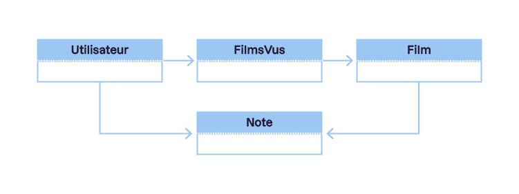
Dans le modèle MVC, les contrôleurs sont des zones d'action, représentent et gères les requêtes HTTP entrantes et les réponses sortantes. J'ai mentionné le pattern de route (domaine/contrôleur/action) du MVC. La partie contrôleur de la route (ou URL) est le nom du contrôleur, et l'action est le nom de la méthode du contrôleur qui crée la vue que l'utilisateur veut voir. Cela signifie qu'il existe une relation directe, de type one-to-one, entre un modèle et un contrôleur.
La vue est appelée par l'instruction return dans l'action du contrôleur :
return View();
La méthode View de .NET MVC recherche dans le dossier Views du projet en cours un fichier de vue dont le nom correspond à l'action et au contrôelur. Elle charge le fichier de disposition correspondant, puis lit le fichier de vue et exécute le code Razor qu'elle trouve tout en produisant le HTML brut. Elle construit ainsi un fichier HTML dynamique à partir des résultats et le retourne au navigateur en réponse à la requête originale.
Comme mentionné précédemment, les dispositions dans .NET MVC sont tout simplement géniales car elles vous permettent de diviser les pages HTML en blocs réutilisables.
Concevoir un modèle de données :
On va commencer à ajouter les propriétés logiquement associées à chaque entité de données. Pour l'entité Utilisateur, nous n'avons pas besoin de grand-chose pour le moment. Il nous faut juste une adresse e-mail et un mot de passe pour la connexion. Puisque nous utilisons Entity Framework et Identity pour gérer les comptes d'utilisateur, ces propriétés seront déjà présentes dans notre objet Utilisateur, accompagnées d'un propriété Id, qui identifie de manière unique objet et sert également de clé primaire dans la table correspondante de la base de données. Chacun des autres objets doit lui aussi avoir une propriété Id qui servira de clé primaire.
D'après la liste des besoins établie pour notre application, chaque utilisateur n'aura qu'une seule liste contenant plusieurs films. Par conséquent, cette liste a-t-elle besoin de ses propres propriétés ? Nous savons qu'elle appartient à un utilisateur et qu'elle contient des films, mais nous n'avons pas précisé si elle aurait besoin de propriétés supplémentaires. Par conséquent, nous pourrions la considérer comme une propriété de l'entité Utilisateur, une liste d'objets Film. Voici un autre design possible :
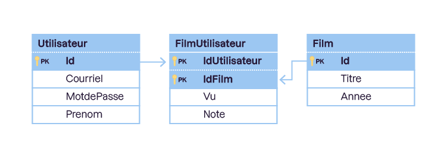
Dans ce schéma, nous avons ajouté des propriétés aux entités et supprimé l'entité Liste de films, en la plaçant dans l'entité FilmUtilisateur. Utilisez les propriétés Id des entités Utilisateur et Film comme clés primaires composites pour l'entité FilmUtilisateur. Cela permet d'identifier de manière unique uen entité FilmUtilisateur comme appartenant à un utilisateur et à un film précis. Ce type de relation est également connu sous le nom de relation many-to-many (plusieurs à plusieurs) dans le vocabulaire des bases de données, ce qui signifie que plusieurs utilisateurs peuvent regarder et noter le même film et que plusieurs films peuvent appartenir au même utilisateur.
Pour créer une classe d'entité, il faut cliquer sur le dossier Data, sélectionner Ajouter et puis Classe. Pour l'entité primaire Film, on va nommer la classe Film.cs et ensuite on va ajouter les propriétés nécessaires, comme indiqué ci-dessous :
public class Film
{
public int Id { get; set; }
public string Titre { get; set; }
public int Annee { get; set; }
}
Passons à l'entité Utilisateur. Celle-ci est un peu plus délicate. Puisque le projet comprend des comptes d'utilisateur individuels, des objets de compte d'utilisateur sont déjà intégrés dans le projet grâce à ASP.NET Identity. Ils sont créés à l'aide d'une classe appelée Identity User, qui se trouve dans le package Microsoft.AspNetCore.Identity. La classe IdentityUser contient toutes les informations importantes permettant de sécuriser les connexions des utilisateurs, telles que le nom d'utilisateur, l'adresse e-mail, le mot de passe, le numéro de téléphone, etc. Cependant, elle ne contient pas de champs pour les informations personnelles telles que le nom ou le prénom, l'adresse, la ville, l'État, etc. Heureusement, il s'agit d'une classe que vous pouvez étendre à une autre classe de votre conception qui peut contenir tous les champs supplémentaires que vous souhaitez ajouter.
Il y a un autre point que je tiens à mentionner avant d'ajouter cette classe. ASP.NET Identity possède déjà un appel appelé User et qui est réservé à l'accès au compte de l'utilisateur connecté. Par conséquent, il ne faut pas nommer votre classe d'entité utilisateur User. Appelons-la plutôt Utilisateur. AJoutez donc une autre classe au dossier Data, appelez-la Utilisateur, puis intégrez-y les éléments suivants :
La classe doit étendre Microsoft.AspNetCore.Identity.IdentityUser.
Elle doit disposer d'un constructeur qui appelle le constructeur de l'objet hérité. Si vous n'avez jamais utilisé cette syntaxe auparavant, voici à quoi elle doit ressembler :
public Utilisateur() : base()
{
}
Elle doit contenur au moins une propriété Prenom de type chaîne de caractères.
En gros, l'utilisation de base() dans C# est similaire à this() en Java, dans le sens où elle appelle le constructeur de la classe de base.
En C#, base() est utilisé dans le contexte d'un constructeur pour appeler le constructeur de la classe de base. Cela peut être utile lorsqe vous avez une hiérarchie de classes et que vous souhaitez exécuter le constructeur de la classe de base avant d'initialiser les membres de la classe dérivée.
En Java, this() est utilisé pour appeler un autre constructeur dans la même classe comme en C#, généralement avec des paramètres différents, tandis que super() est utilisé pour appeler le constructeur de la classe parente. Les concepts sont similaires, bien que la syntaxe diffère légèrement.
Voici un exemple en C# :
public class BaseClass
{
public BaseClass()
{
// Initialisation de la classe de base
}
}
public class DerivedClass : BaseClass
{
private int myValue;
// Premier constructeur
public DerivedClass() : this(42) // Appelle le deuxième constructeur avec la valeur par défaut 42
{
}
// Deuxième constructeur avec un paramètre
public DerivedClass(int value) : base()
{
// Initialisation de la classe dérivée après avoir appelé le constructeur de la classe de base
myValue = value;
// Autres initialisations nécessaires
}
}
Voici un exemple en Java :
public class BaseClass {
public BaseClass() {
// Initialisation de la classe de base
}
}
public class DerivedClass extends BaseClass
{
public DerivedClass() {
super(); // Appel du constructeur de la classe de base
// Initialisation de la classe dérivée
}
}
L'opérateur ??= est disponible à partir de C# 8.0. Il effectue une opération d'affectation uniquement si l'opérande de gauche est null. Il peut être utilisé pour simplifier l'affectation conditionnelle. Par exemple, x ??= y signifie que, si x est null, on lui attribue la valeur de y.
La classe FilmUtilisateur possède la clé primaire composite dont nous avons fait mention plus haut. Cette clé est composée de deux propriétés IdUtilisateur et IdFilm. La propriété IdUtilisateur correspond à la propriété Id de la classe Utilisateur, qu'elle a héritée de IdentityUser. La classe IdFilm correpsond à la propriété Id de la classe Film. On a également besoin de deux autres propriétés utilisant le mot clé virtual qui représentent la relation entre l'objet FilmUtilisateur et les objets Utilisateur et Film :
public class FilmUtilisateur
{
public string IdUtilisateur { get; set; }
public int IdFilm { get; set; }
public bool Vu { get; set; }
public int Note { get; set; }
public virtual Utilisateur User { get; set; }
public virtual Film Film { get; set; }
}
Avant de compiler le code, on doit ajouter une propriété virtuelle pour représenter la liste des films de l'utilisateur dans la classe Utilisateur. Il s'agit d'une collection ou d'une liste d'objets FilmUtilisateur, et plus précisément, de tous les objets FilmUtilisateur contenant l'identifiant de l'utilisateur. mettons à jour notre classe Utilisateur pour inclure cette propriété et initialisons-la dans le constructeur, comme indiqué -dessous :
public class Utilisateur : Microsoft.AspNetCore.Identity.IdentityUser
{
public Utilisateur() : base()
{
this.ListeFilms = new HashSet<FilmUtilisateur>();
}
public string Prenom { get; set; }
public virtual ICollection<FilmUtilisateur> ListeFilms { get; set; }
}
En .NET Core, les classes IdentityUser et IdentityRole font partie du système d'authentification ASP.NET Core Identity, qui est utilisé pour gérer les fonctionnalités d'authentification, d'autorisation et de gestion des utilisateurs dans une application.
IdentityUser est la classe de base pour représenter un utilisateur dans le système d'authentification. Elle est définie dans l'espace de noms Microsoft.AspNetCore.Identity. Ses propriétés principales sont :
Id : La clé primaire de l'utilisateur.
UserName: Le nom d'utilisateur de l'utilisateur.
NormalizedUserName : Le nom d'utilisateur normalisé, généralement en majuscules, utilisé pour les opérations de recherche.
Email : L'adresse e-mail de l'utilisateur.
NormalizedEmail : L'adresse e-mail normalisée, généralement en majuscules, utilisée pour les opérations de recherche.
EmailConfirmed : Indique si l'adresse e-mail de l'utilisateur a été confirmée.
PasswordHash : Le hachage du mot de passe de l'utilisateur.
SecurityStamp : Un jeton de sécurité utilisé pour régénérer les identités externes liées à cet utilisateur en cas de changement de mot de passe ou de tout autre événeemnt de sécurité.
ConcurrencyStamp : Un jeton de concurrence utilisé pour gérer les conflits de mise à jour concurrente.
PhoneNumber : Le numéro de téléphone de l'utilisateur.
PhoneNumberConfirmed : Indique si le numéro de téléphone de l'utilisateur a été confirmé.
TwoFactorEnabled : Indique si l'authentification à deux facteurs est activée pour l'utilisateur.
LockoutEnd : La date et l'heure de la fin de la période de verrouillage de l'utilisateur.
LockoutEnabled : Indique si le verrouillage de l'utilisateur est activé.
AccessfailedCount : Nombre de tentatives d'accès infructueuses.
IdentityRole est la classe de base pour représenter un rôle dans le système d'authentification. Elle est également définie dans l'espace de noms Microsoft.AspNetCore.Identity. Ses propriétés principales sont :
Id : La clé primaire du rôle.
Name : Le nom du rôle.
NormalizedName : Le nom du rôle normalisé, généralement en majuscules, utilisé pour les opérations de recherche.
ConcurrencyStamp : Un jeton de concurrence utilisé pour gérer les conflits de mise à jour concurrente.
En plus des classes de base IdentityUser<TKey> et IdentityRole<TKey>, ASP.NET Core Identity fournit d'autres classes liées à la gestion des utilisateurs et des rôles. Voici quelques-unes de ces classes :
IdentityRoleClaim<TKey> : Représente une revendication (claim) associée à un rôle.
IdentityUserClaim<TKey> : Représente une revendication (claim) associée à un utilisateur.
IdentityUserLogin>TKey> : Représente une connexion externe (comme une connexion avec un compte Google ou Facebook) associée à un utilisateur.
IdentityUserToken<TKey> : Représente un jeton associé à un utilisateur (par exemple, un jeton de réinitialisation de mot de passe).
IdentityUserRole<TKey> : Représente la relation entre les utilisateurs et les rôles. Elle a généralement une clé étrangère pour l'utilisateur (UserId) et une clé étrangère pour le rôle (RoleId).
IdentityUserLogin<TKey> : Représente une connexion externe associée à un utilisateur.
IdentityUserToken<TKey> : Représente un jeton de sécurité associé à un utilisateur.
Ces classes sont paramétrées par la clé primaire (TKey) utilisée dans votre application. Par défaut, cette clé est de type string pour les identifiants, mais elle peut être personnalisée en fonction de vos besoins.
Voici un exemple simplifié de certaines de ces classes et de leurs propriétés :
public class IdentityRoleClaim<TKey>
{
public TKey Id { get; set; }
public TKey RoleId { get; set; }
public string ClaimType { get; set; }
public string ClaimValue { get; set; }
}
public class IdentityUserClaim<TKey>
{
public TKey Id { get; set; }
public TKey UserId { get; set; }
public string ClaimType { get; set; }
public string ClaimValue { get; set; }
}
public class IdentityUserLogin<TKey>
{
public TKey LoginProvider { get; set; }
public TKey ProviderKey { get; set; }
public string ProviderDisplayName { get; set; }
public TKey UserId { get; set; }
}
public class IdentityUserRole<TKey>
{
public TKey UserId { get; set; }
public TKey RoleId { get; set; }
}
public class IdentityUserToken<TKey>
{
public TKey UserId { get; set; }
public string LoginProvider { get; set; }
public string Name { get; set; }
public string Value { get; set; }
}
Modification du contexte DbContext :
On doit ajouter les objets DbSet pour vos classes Film et FilmUtilisateur dans la classe ApplicationDbContext :
public DbSet<Film> Films { get; set; }
public DbSet<FilmUtilisateur> FilmsUtilisateur { get; set; }
Remarquez que nous n'avons pas ajouté d'objet DbSet pour la classe Utilisateur. Cela est dû au fait qu'il existe déjà une table AspNetUsers dans la base de données. Puisque nous avons créé la classe Utilisateur qui hérite de la classe IdentityUser, tout ce que vous ajoutez à Utilisateur sera automatiquement traduit dans la table AspNetUsers de la base de données.
Voici quelques-unes des proproétés DbSet les plus couramment utilisées dans IdentityDbContext<TUser>: :
Users :
public DbSet<TUser> Users { get; set; }
Cette propriété représente la table des utilisateurs dans la base de données.
Roles :
public DbSet<TRole> Roles { get; set; }
Cette propriété représente la table des rôles dans la base de données.
UserClaims :
public DbSet<TUserClaim> UserClaims { get; set; }
Cette propriété représente la table des revendications (claims) des utilisateurs.
UserLogins :
public DbSet<TUserLogin> UserLogins { get; set; }
Cette propriété représente la table des informations de connexion des utilisateurs, comme les fournisseurs extenes.
UserTokens :
public DbSet<TUserToken> UserTokens { get; set; }
Cette propriété représente la table des jetons associés aux utilisateurs, généralement utilisés pour les opérations liées à la récupération de mot de passe.
UserRoles :
public DbSet<TUserRole> UserRoles { get; set; }
Cette propriété représente la table de liaison entre les utilisateurs et les rôles; indiquant quels utilisateurs appartiennent à quels rôles.
La dernière modification est un peu plus délicate. Dans la version actuelle d'ASP.NET Core, il n'est pas possible de migrer automatiquement des objets ayant des relations many-to-many. Heureusement, ASP.NET inclut l'API Fluent. Cette API vous permet de donner à Entity Framework des instructions précises pour créer ou modifier la base de données. Pour ce faire, vous devez remplacer une méthode de votre classe ApplicationDbContext, appelée OnModelCreating, qui est héritée de IdentityDbContext. Vous pouvez le faire n'importe où en dessous du constructeur, dans la classe application DbContext :
Par défaut, ASP.NET Identity utilise l'objet IdentityUser pour tous les comptes d'utilisateur. Nous avons créé la classe Utilisateur pour étendre la classe IdentityUser et pouvoir donner des informations supplémentaires sur les comptes d'tilisateur. Cependant, puisque nous voulons que la classe Utilisateur soit la base des objets Identity, nous devons encore un peu modifier le code. Les deux fichiers à modifier sont Program.cs et _LoginPartial.cshtml.
Dans le fichier Program.cs, il faut chercher la méthode ConfigureServices :
Remarquez le changement de IdentityUser à Utilisateur dans la configuration du service Identity. Cette modication permettra à .NET Identity d'utiliser votre classe Utilisateur pour tous les processus et services Identity; comme la configuration de UserMangaer et SignINManager.
ASP.NET Core Identity offre de nombreuses options de configuration pour personnaliser son comportement. Voici quelques-unes des options disponibles dans IdentityOptions que vous pouvez configurer dans votre fichier Program.cs :
// Cofiguration des options Identity dans ConfigureServices
builder.Services.Configure<IdentityOptions>(options =>
{
// Options relatives aux mots de passe
options.Password.RequireDigit = true;
options.Password.RequireLowercase = true;
options.Password.RequireUppercase = true;
options.Password.RequireNonAlphanumeric = true;
options.Password.RequiredLength = 8;
// Options de verrouillage de compte
options.Lockout.DefaultLockoutTimeSpan = TimeSpan.FromMinutes(5);
options.Lockout.MaxFailedAccessAttempts = 5;
options.Lockout.AllowedForNewUsers = true;
// Options de connexion
options.SignIn.RequireConfirmedEmail = false;
options.SignIn.RequireConfirmedPhoneNumber = false;
options.SignIn.RequireConfirmedAccount = false;
// Options de l'utilisateur
options.User.RequireUniqueEmail = true;
// Autres options ...
});
// Configuration d'ASP.NET Core Identity
builder.Services.AddIdentity<Utilisateur, IdentityRole>().AddEntityFrameworkStores<ApplicationDbContext>().AddDefaultTokenProviders();
L'utilisation de builder.Services.Configure<IdentityOptions> configure les options d'Identity, et ensuite, builder.Services.AddIdentity utilise ces options configurées.
Voici quelques explications sur certaines de ces options :
Options relatives aux mots de passe :
RequireDigit : Spécifie si le mot de passe doit contenir au moins un chiffre.
RequireLowercase : Spécifie si le mot de passe doit contenir au moins une lettre minuscule.
RequireUppercase : Spécifie si le mot de passe doit contenir au moins une lettre majuscule.
RequireNonAlphanumeric : Spécifie si le mot de passe doit contenir au moins un caractère spécial.
RequiredLength : Spécifie la longueur minimale du mot de passe.
Options de verrouillage de compte :
DefaultLockoutTimeSpan
La durée pendant laquelle un utilisateur est verrouillé après avoir dépassé le nombre maximum de tentatives de connexion infructueuses.
MaxFailedAccessAtempts : Le nombre maximale de tentatives de connexion infructeuses avant que le compte ne soit verrouillé.
AllowedForNewUsers : Indique si le verrouillage est activé pour les nouveaux utilisateurs.
Options de connexion :
RequireConfirmedEmail : Spécifie si un compte doit être confirmé par e-mail pour être connecté.
RequireConfirmedPhoneNumber : Spécifie si un compte doit être confirmé par numéro de téléphone pour être connecté.
RequireConfirmedAccount : Spécifie si un compte doit être confirmé pour être connecté.
Options de l'utilisateur :
RequireUniqueEmail : Spécifie si les adresses e-mail doivent être uniques entre les utilisateurs.
Le cookie d'application dans ASP.NET Core Identity offre plusieurs options que vous pouvez configurer selon vos besoins. Voici quelques-unes des options couramment utilisées :
ExpireTimeSpan : La durée de vie du cookie d'authentification. Par exemple, options.ExpireTimeSpan = TimeSpan.FromDays(1); définirait le cookie pour expirer après un jour.
LoginPath : Le chemin où les utilisateurs seront redirigés s'ils tentent d'accéder à une ressource nécessitant une authentification sans être connectés. Par exemple, options.LoginPath = "/Account/Login"; définirait le chemin de connexion à "Account/Login".
LogoutPath : Le chemin où les utilisateurs seront redirigés après avoir été déconnectés. Par exemple, options.LogoutPath = "/Account/Logout"; définirait le chemin de déconnexion à "Account/Logout".
ReturnUrlParameter : Le nom du paramètre sans l'URL qui stocke l'URL à laquelle l'utilisateur doit être redirigé après une connexion réussie. Par exemple, options.ReturnUrlParameter = "returnUrl"; utiliserait "returnUrl" comme paramètre.
CookieName : Le nom du cookie d'authentification. Par défaut, c'est ".AspNetCore.ApplicationCookie", mais vous pouvez le personnaliser avec options.CookieName = "MonCookie";.
SlidingExpiration : Si true, la durée de vie du cookie est prolongée lors de chaque demande réussie. Si false, le cookie expirera après la période définie par ExpireTimeSpan, même si l'utilisateur est actif.
Voici un exemple de configuration avec quelques-unes de ces options :
La deuxième modification doit intervenir dans Views > Shared > _LoginPartial.cshtml. Les trois premières lignes de code de ce fichier sont les suivantes :
Vous devez ajouter une autre instruction using pour l'espace de noms Data de l'application, puis remplacer les références à IdentityUser par Utilisateur, comme indiqué ci-dessous :
Maintenant que le contexte de la base de données et le service Identity ont été mis à jour pour utiliser votre classe Utilisateur, le modèle est achevé et peut être migré. Ajoutez une nouvelle mogration et nommez-la comme vous le souhaitez, mais n'oubliez pas qu'il est recommandé de lui attribuer un nom représentatif de l'action réalisée ou de son ordre dans la séquence. Vous pouvez l'appeler SecondeMigration ou MogrationFilmUtilisateur par exemple :
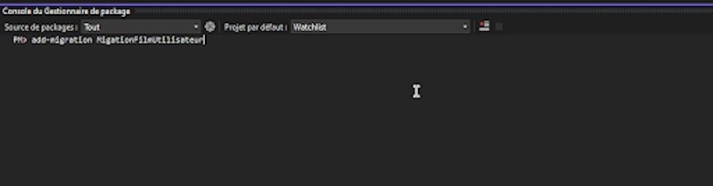
Ajout d'une nouvelle migration dans le Gestionnaire de package
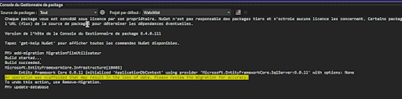
Mise à jour de la base de données dans le Gestionnaire de package
Votre base de données est maintenant à jour et correspond au modèle de données que vous venez de créer, mais vous ne pouvez pas encore faire grand-chose avec. La prochaine étape sera donc de générer automatiquement des contrôleurs et des vues à partir du modèle.
Qu'est-ce que la génération automatique ?
La génération automatique d'ASP.NET a été introduite dans Visual Studio 2013 et reste un élément important de la plateforme de développement .NET Core.
Il s'agit d'un framework de génération de code automatique qui vous permet d'ajouter rapidement du code modélisé qui interagit avec vos modèles de données. Son utilisation pour générer les contrôleurs et vues MVC de vos modèles permet d'accélérer le développement de toutes les opérations de données standard de votre projet, ainsi que des pages HTML/Razor servant à visualiser ces données.
Utiliser la génération automatique avec Entity Framework :
Avant de générer automatiquement vos contrôleurs et vos vues, vous devez créer une classe supplémentaire. Elle ne représente pas une entité spécifique de la base de données, mais plutôt un mélange d'éléments provenant de différentes entités. C'est ce qu'on appelle un modèle d'affichage, et vous en avez besoin pour configurer correctement l'affichage de votre liste de films. La liste de films est une collection d'identifiants d'utilisateurs et de films dans la table FilmUtilisateur, et vous devez la rendre lisible et facile à utiliser. C'est là que le modèle d'affichage entre en jeu.
Ajouter les modèles d'affichage :
Ajoutez une nouvelle classe appelée ModeleVueFilm dans le dossier Models. Modifiez ensuite la classe pour ajouter l'identifiant du film, son titre, son année, sa présence ou absence dans la liste de l'utilisateur, son statut de visionnage par l'utilisateur et sa note (le cas échéant).
public class ModeleVueFilm
{
public int IdFilm { get; set; }
public string Titre { get; set; }
public int Annee { get; set; }
public bool PresentDansListe { get; set; }
public bool Vu { get; set; }
public int? Note { get; set; }
}
Générer automatiquement une entité de modèle :
Pour générer automatiquement des contrôleurs et des vues pour une entité de données, cliquez avec le bouton doit sur le dossier Controllers, puis choisissez Ajouter > Nouvel élément généré automatiquement.
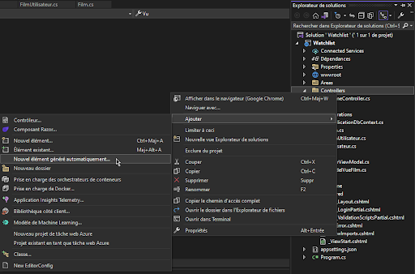
Dans l'Explorateur de solutions, clic droit sur Controllers, puis Ajouter > Nouvel élément généré automatiquement.
Vous pouvez choisir parmi de nombreuses options, mais ce qui nous intéresse c'est la génération automatique d'un contrôleur MVC avec vues, utilisant Entity Framework. Sélectionnez cette option, puis cliquez sur le bouton Ajouter.
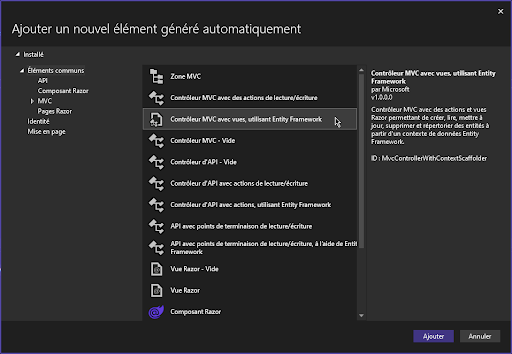
La fenêtre Ajouter un nouvel élément généré automatiquement présente de nombreuses options.
Vous entrez à présent dans les détails du processus de génération automatique. Sélectionnez la classe du modèle à partir de laquelle vous allez générer automatiquement le contrôleur et les vues (il s'agit de la classe Film) et définissez le nom du contrôleur (FilmsController). Assurez-vous que les trois cases sont cochées : nous voulons générer des vues, référencer les bibliothèques de scripts telles que jQuery et Bootstrap, et utiliser une page de disposition (dans ce cas, la page de disposition par défaut convient).
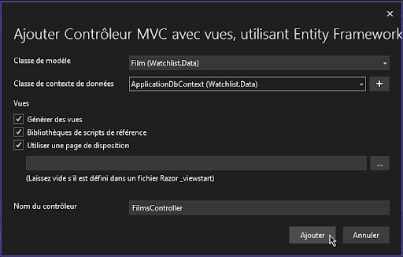
Vérifiez que les trois vues sont cochées.
Une fois le processus terminé, vous verrez apparaître un nouveau fichier FilmsController.cs dans le dossier Controller et un nouveau dossier Films dans le dossier Views de votre projet.
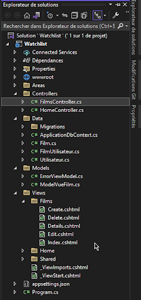
Le nouveau fichier FilmsController.cs et le nouveau dossier Films
Générez automatiquement des composants individuels :
Vous avez déjà généré automatiquement un contrôleur complet avec des vues utilisant Entity Framework pour la classe Film. Je vais maintenant vous montrer comment générer automatiquement des éléments à plus petite échelle, par exemple pour ajouter un ou deux éléments, et non un ensemble complet d'opérations CRUD.
Ajouter un contrôleur Liste de films :
Ajoutons un nouveau contrôleur que vous pouvez utiliser pour créer et afficher votre liste de films. Il s'agira d'un code personnalisé et non pas d'un code généré à partir d'un modèle, vous devez donc commencer par créer un contrôleur vide. Pour ce faire, faites un clic droit sur le dossier Controllers, puis choisissez Ajouter > Contrôleur.
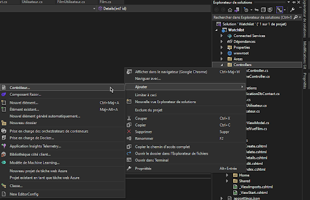
Faites un clic droit sur le dossier Controllers et choisissez Ajouter > Contrôleur.
La fenêtre suivante est similaire à celle qui présente les options de génération automatique que nous avons vue dans la section précédente, mais comporte moins d'éléments. C'est le premier qui nous intéresse : Contrôleur MVC - Vide.
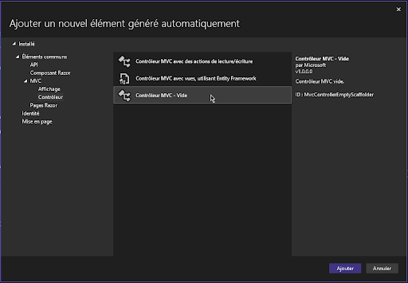
Dans la fenêtre Ajouter un nouvel élément généré automatiquement, choisissez Contrôleur MVC - Vide.
Il est mainteant temps de nommer le nouveau contrôleur. Appelons-le ListeFilmsController.
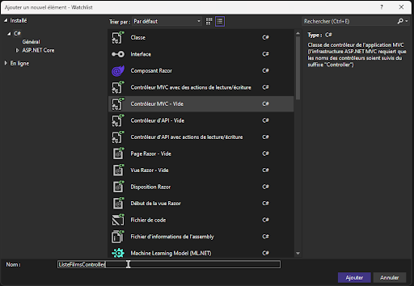
Nommez le contrôleur.
AJoutez une vue par défaut :
Après avoir ajouté une classe ListeFilmsController vide, vous devez ajouter une vue unique pour afficher la liste de films.
Ajoutez un nouveau sous-dossier dans le dossier Views appelé ListeFilms. Faites un clic droit sur le nouveau dossier ListeFilms et choisissez Ajouter > Vue.
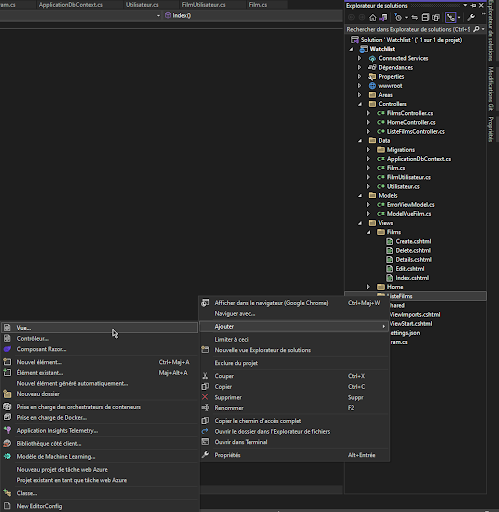
Ajoutez le sous-dossier ListeFilms. Faites un clic droit et choisissez Ajouter > Vue.
C'est ici que vous pouvez définir les types de vues que vous souhaitez ajouter au projet. Vous savez que la liste de films est une liste qui contient des titres de films et des informations supplémentaires, comme des notes, mais c'est toujours et avant tout une liste d'éléments. par conséquent, vous devez créer une vue en liste.
Nommez cette nouvelle page Index afin qu'ele s'affiche par défaut chaque fois que le contrôleur ListFilmsController est appelé. Pour le type de modèle, sélectionnez Liste. Pour la classe de modèle, sélectionnez la classe ModeleVueFilm que vous avez créée précédemment. Ensuite, supprimez tout ce qui est présent dans la liste déroulante Classe du contexte de données. On ne veut pas qu'elle soit liée directement à la base de données, car les données se trouveront dans un modèle de vue et non dans un modèle de données (base de données). Enfin, assurez-vous que la case à cocher Créer en tant que vue partielle n'est pas cochée. En revanche, cochez les cases Bibliothèques de scripts de référence et Utiliser une page de disposition, puis cliquez sur Ajouter.
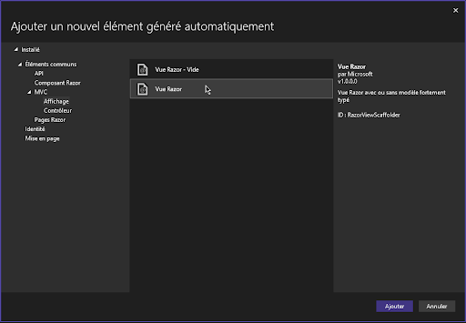
L'option Ajouter un nouvel élément généré automatiquement.
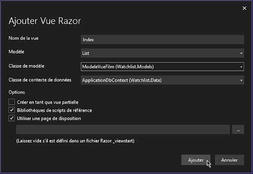
L'option Créer en tant que vue partielle n'est pas cochée, mais les options Bibliothèques de scripts de référence et Utiliser une page de disposition le sont.
Vous avez maintenant un nouveau contrôleur et une nouvelle vue pour gérer la création et l'affichage de la liste des films d'un utilisateur. Mais aucun des deux n'est fonctionnel pour le moment. Vous devez créer la liste de films, ce qui signifie ajouter du code personnalisé au contrôleur ListeFilmsController.
Modifier le contrôleur ListeFilmsController :
Le contrôleur ListeFilmsController est vide. La seule chose qu'il contient est une méthode appelée Index, qui ouvrira la vue Index.cshtml que vous venez d'ajouter. Pour remplir cette vue avec les données de la liste de films, vous devez ajouter quelques éléments à ce contrôleur.
Récupérer le contexte de la base de données :
Tout d'abord, vous devez accéder à la base de données via l'objet de contexte de base de données, ApplicationDbContext. ASP.NET Core utilise l'injection de dépendances pour fournir des instances des objets importants à utiliser dans les contrôleurs. Ainsi, pour avoir accès au contexte de la base de données, vous devez le demander à .NET Core en l'ajoutant comme paramètre dans le constructeur du contrôleur ListeFilmsController.
Vous devrez ajouter quelques déclarations using au début de votre classe ListeFilmsController :
using Microsoft.AspNetCore.Identity;
using Watchlist.Data;
using Watchlist.Models;
Elles permettent d'accéder aux données et aux objets du modèle, ainsi qu'à .NET Core Identity, dont vous aurez besoin pour récupérer les films de l'utilisateur connecté.
Ensuite, pour injecter le contexte de la base de données dans votre contrôleur ListeFilmsController, ajoutez le code suivant au-dessus de la classe ListeFilmsController :
Dans l'exemple ci-dessus, une variable privée en readonly contient une instance du contexte de la base de données pour ce contrôleur. Affectez-le à l'objet de contexte qui est injecté dans le constructeur.
Cela vous permettra de fécupérer les films de la liste de l'utilisateur. Vous devez être capable d'identifier l'utilisateur, puisque les films sont associés à son identifiant unique. Par conséquent, vous devez récupérer l'identifiant de l'utilisateur connecté pour obtenir ses films et générer la liste.
Récupérer l'utilisateur connecté :
Pour obtenir l'utilisateur connecté, appelez le service UserManager de .NET Identity, qui fournit toutes les méthodes dont vous avez besoin pour obtenir les informations sur l'utilisateur. Pour avoir accès au service User, injectez-le dans le constructeur, comme vous l'avez fait pour le contexte de la base de données.
public class ListeFilmsController : Controller
{
private readonly ApplicationDbContext _contexte;
private readonly UserManager<Utilisateur> _gestionnaire;
public ListeFilmsController(ApplicationDbContext contexte, UserManager<Utilisateur> gestionnaire)
{
_contexte = contexte;
_gestionnaire = gestionnaire;
}
}
Le service UserManager étant maintenant disponible, vous pouvez écrire du code pour récupérer les informations de l'utilisateur. Une bonne pratique consiste à ajouter une méthode privée dans le contrôleur qui appelle le service, puis une requête HTTP GET publique pour récupérer l'identifiant de l'utilisateur.
Enfin, vous pouvez appeler votre méthode RecupererIdUtilisateurCourant à partir de la méthode Index où vous allez construire le modèle de vue pour la liste de films. Remarquez que la méthode Index a changé, passant d'une méthode synchrone à une tâche asynchrone. Cette évolution est nécessaire pour appeler les méthodes du service UserManager.
public async Task<IActionResult> Index()
{
var id = await RecupererIdUtilisateurCourant();
return View();
}
Créer la liste de films de l'utilisateur :
Cela nous a demandé un peu de boulot, mais c'était nécessaire pour créer la liste de films spécifique à l'utilisateur connecté. Dans la méthode Index, insérez le code suivant :
public async Task<IActionResult> Index()
{
var id = await RecupererIdUtilisateurCourant();
var filmsUtilisateur = _contexte.FilmsUtilisateur.Where(x => x.IdUtilisateur == id);
var modele = filmsUtilisateur.Select(x => new ModelVueFIlm {
IdFilm = x.IdFilm,
Titre = x.Film.Titre,
Annee = x.Film.Annee,
Vu = x.Vu,
PresentDansListe = true,
Note = x.Note
}).ToList();
return View(modele);
}
Après avoir récupéré l'identifiant de l'utilisateur connecté, une requête LINQ récupère tous les enregistrements FilmsController de la base de données qui le contiennent. Ensuite, à partir des résultats de cette requête, on sélectionne des éléménts spécifiques tels que le titre du film, son année, son statut de visionnage par l'utilisateur et sa note. Ensuite, on transmet cette liste d'objets ModeleVueFilm à la vue via la variable modele. Les données sont alors rendues dans un fichier HTML dynamique.
Une dernière modification, juste pour le plaisir :
Réfléchissons maintenant à l'ergonomie. Ne serait-il pas intéressant que l'utilisateur soit dirigé automatiquement vers sa liste de films lors de sa connexion ? Il n'y a aucun intérêt à le faire arriver sur la page d'accueil. En effet, il est fort probable qu'il utilise l'application pour interagir avec sa liste de films. Voyons comment ajouter cette fonctionnalité, puis exécutons à nouveau l'application.
Ouvrez maintenant le contrôleur HomeController et examinez la méthode Index. Vous pouvez y ajouter une simple vérification pour redirger l'utilisateur s'il est connecté lorsque la page d'accueil est demandée. Regardez attentivement le code ajouté ci-dessous :
public IActionResult Index()
{
if (User.Identity.IsAuthenticated)
{
return RedirectToAction("Index", "ListeFilms");
}
return View();
}
Ce code supplémentaire exploite l'objet statique User fourni par le contrôleur. Il examine la propriété booléenne IsAuthenticated de la propriété Identity de l'objet User. Si l'utilisateur est connecté, il est considéré comme authentifié, et cette propriété sera vraie (true). Par conséquent, si cette propriété est vraie, vous pouvez rediriger l'utilisateur vers la méthode Index du contrôleur ListeFilms.
Vous pouvez trouver tout le code de navigation dans le menu dans le fichier de disposition de votre application : Views > Shared > _Layout.cshtml.
Pourquoi modifier les vues ?
Les vues créées par défaut lorsque vous procédez à la génération automatique des entités du modèle sont généralement fonctionnelles sans modification. Cependant, dans certains cas, vous devrez leur apporter de petits ajustements.
Assurez-vous d'utiliser le bon type de champ de formulaire :
Les champs de formulaire peuvent parfois poser problème. Il est particulièrement agaçant de constater que vous ne parvenez pas à saisir vos données correctement parce que le type de champ de formulaire utilisé n'est pas le bon. Voici quelques points sensibles à surveiller :
Assurez-vous que les bonens données s'affichent dans les listes. Si une liste permet plusieurs sélections, optez pour une liste à sélection multiple plutôt que pour une liste à sélection simple, même si c'est ce dernier type de contrôle qui est habituellement généré.
C# utilise des objets DateTime à la fois pour les dates et les heures. Si vous avez besoin d'un champ de type heure dans votre formulaire, n'affichez pas un champ de type deate, et inversement. Pour des raisons de cohérence, utilisez un sélecteur de date dans votre formulaire et spécifiez également des champs de type heure.
Si des champs nécessitent uniquement la saisie d'un nombre entier, assurez-vous d'utiliser le bon type d'entrée. Les entrées des espaces de texte sont particulièrement délicates. Un champ de texte simple est généré pour chaque entrée composée de chaînes de caractères. Entity Framework ne sait pas si vous devez prévoir un emplacement pour un paragraphe ou deux, et certainement pas si vous pourriez avoir besoin d'une entrée au format HTML. Si vous utilisez de telles entrées dans vos formulaires, vous devrez les spécifier et mettre en forme directement. Le moyen le pls simple est d'utiliser la méthode d'assisatnce @Html.TextAreaFor(). L'utilisation de cette méthode créera l'élément HTML de champ de texte approprié dans votre formulaire. Par exemple :
Cette instruction crée un nouvel espace de texte pour un élément de modèle appelé Commentaires. Le deuxième paramètre indique le nombre de lignes (8), et le troisième paramètre est le npmbre de colonnes. Une valeur de zéro signifie que l'espace remplira la largeur de l'espace disponible, tout comme les colonnes. Le dernier paramètre est un objet anonyme qui représente les attributs HTML appliqués au champ. Dans ce cas, la classe CSS form-control est appliquée, de même que l'attribut required.
Ce ne sont là que quelques exemples de problèmes auxquels il faut faire attention. Comme toujours, surveillez attentivement tous les détails de vos formulaires pour vous assurer qu'ils sont intuitifs et faciles à appréhender pour vos utilisateurs.
Optimiser la cohérence des formulaires :
Les formulaires Create (Créer) et Edit (Modifier) sont presque identiques lorsqu'ils sont générés. Toute modification apportée à l'un doit être répercutée sur l'autre. Vous devez en effet éviter d'avoir un sélecteur de date dans un formulaire et un espace de texte pour le même champ dans l'autre.
Faites également attention à la navigation. Par défaut, chaque formulaire intègre une action d'envoi et une action d'annulation. L'action d'envoi est un bouton intitulé Create (Créer) dans le formulaire du même nom et Save (Enregistrer) dans le formulaire Edit (Modifier). L'action d'annulation est un hyyperlien Back to List (Retour à la liste) dans tous les formulaires. Les développeurs remplacent souvent ce lien par un bouton intitulé Annuler ou autre nom similaire en fonction du design choisi. Si vous faites ce choix, veillez à l'appliquer à tous les formulaires de vos différentes vues.
Gérer les erreurs humaines avec la validation :
La validation fait déjà partie du processus de génération automatique MVC pour la plupart des types de données. Chaque formulaire qui requiert une saisie sera généré avec la ligne suivante après la balise <form> :
Cette balise indique où s'affichera un résumé des erreurs de validation. Les valeurs qui peuvent être utilisées sont All, ModelOnly et None. validationSummary.All affichera les messages de validation au niveau de la propriété et du modèle. validationSummary.ModelOnly affichera uniquement les messages de validation qui s'appliquent au niveau du modèle. validationSummary.Bibe indique à cette balise de ne rien faire.
Toutes les erreurs de saisie de données seront indiquées par un texte rouge sous le champ de saisie. Le code HTML qui génère de telles erreurs ressemble à ceci :
Cette ligen définit un message de validation pour un élément de modèle appelé Title. Si la saisie est obligatoire et que rien n'est indiqué dans ce champ, un message de validation indiquant que le champ est obligatoire s'affiche sous le champ de saisie.
Ajouter des films à la liste des films :
Avez-vous remarqué qu'il n'existe aucun moyen d'ajouter des films à votre liste de films ? Vous pouvez les ajouter à la base de données, ainsi que les modifier et les supprimer, mais vous n'avez actuellement aucun moyen de les placer dans votre liste de films. C'est un gros problème pour notre application !
Plusieurs options s'offrent à vous, je vais vous en présenter quelques-unes :
Ajouter/supprimer des films directement à partir de la page de liste des films (Index) via des boutons individuels Ajouter/Supprimer pour chaque film.
Ajouter/supprimer des films directement à partir de la page de liste de films (Index) via des cases à cocher à côté de chaque film.
Ajouter un film via la page Create (Créer).
Ajouter/supprimer un film via la page Edit (Modifier).
Ajouter/supprimer un film via la page Details (Détails).
Chacune de ces options présente des avantages et des inconvénients. Les options 1 et 2 sont les plus efficaces et les plus pratiques, mais elles nécessitent un codage JavaScript supplémentaire et un appel de type API au contrôleur. Les options 3 à 5 conviennent à une application basée uniquement sur MVC, mais n'offrent pas une interaction idéale et pourraient entraîner une certaine insatisfaction chez l'utilisateur. Dans cette optique, je suggère l'option 1. C'est la plus simple des deux premières, et son utilisation me permet de vous montrer comment les contrôleurs MVC peuvent également servir de passerelle vers des fonctions d'API.
Puisque vous disposez déjà de la vue, il vous suffit de la modifier et d'apporter quelques modifications au contrôleur FilmsController. Concrètement, vous devez :
indiquer si le film figure dans la liste de films de l'utilisateur;
insérer des boutons Ajouter/Supprimer dans chaque ligne du tableau;
ajouter du JavaScript pour gérer les clics sur les boutons et appeler une nouvelle action issue du contrôleur FilmsController;
mettre à jour la méthode Index dans le contrôleur FilmsController pour créer le modèle en utilisant les objets ModelVueFilm au lieu des objets Film;
ajouter une nouvelle méthode (AjouterSupprimer) au contrôleur FilsmController.
Écrivons un bout de code supplémentaire.
Indiquer si le film film figure dans la liste de films de l'utilisateur :
Pour ce faire, vous devez modifier le modèle que la page utilise. Heureusement, nous en avons un qui est parfait dans la classe ModelVueFIlm que nous avons écrite plus tôt. Voici la définition du modèle actuel, sur la première ligne de la page Index :
Ensuite, vous devez ajouter une colonne supplémentaire au tableau. Ajoutez-en une à l'en-tête et au corps du tableau, entre la colonne Année et la dernière colonne. Nommez l'en-tête Présent dans la liste.
Dans le corps du tableau, la nouvelle colonne doit afficher un bouton avec un signe plus (+) si le film n'est pas dans la liste de films de l'utilisateur, et un signe moins (-) dans le cas contraire. Chaque bouton doit avoir son identifiant, ainsi qu'un attribut de données qui contient la valeur de l'attribut de modèle PresentDansListe. Par exemple :
Cet exemple mpntre comment utiliser la syntaxe Razor, indiquée par le signe @ précédant un nom de variable, pour accéder aux données de notre modèle. Insérez l'identifiant de chaque film comme attribut Id du biuton correspondant. Ajoutez également presentDansListe-val comme paramètre et donnez-lui la valeur de l'attribut PresentDansListe de l'objet ModeleVueFilm. Pour afficher le signe approprié sur le bouton, vérifiez la valeur de l'attribut PresentDansListe. Si la valeur est vraie (true), affichez le signe moins, sinon affichez le signe plus.
Utiliser JavaScript pour gérer l'interaction avec l'utilisateur :
Les boutons ajoutés doivent tous appeler une action du contrôleur FilmsController lors du clic. Pour que le script soit appelé au bon moment, ajoutez-le dans une section Razor appelée Scripts, en bas de la page. Ajoutez le script suivant en bas de la page Index :
Ce script capture chaque clic sur le bouton, récupère les attributs Id et presentDansListe-val du bouton, puis appelle la méthode AjouterSupprimer du contrôleur FilmsController et lui transmet ces valeurs dans l'URL. Ensuite, en fonction de la valeur renvoyée (présence ou absence du film dans la liste de films de l'utilisateur), il modifie le signe affiché sur le bouton.
Cependant, pour que cela fonctionne, vous devez écrire cette méthode AjouterSupprimer dans le contrôleur FilmsController, mais avant de la créer allons d'abord parler de la priorité à la sécurité.
Priorité à la sécurité :
Chaque fois que vous créez une nouvelle application web ASP.NET, vous avez la possibilité d'ajouter un module d'authentification. Pour notre application Watchlist, nous avons choisi l'authentification par des comptes individuels. L'authentification, c'est tout simplement le processus par lequel votre application vérifie l'identité d'un utilisateur, généralement par le biais d'un nom d'utilisateur et d'un mot de passe. Cette fonctionnalité est déjà opérationnelle, et vous l'avez testée en inscrivant un nouveau compte d'utilisateur.
Il existe un autre mécanisme de sécurité dans ASP.NET appelé autorisation. Il faudrait un cours complet sur la sécurité .NET, mais, pour simplifier, l'autorisation est la façon dont vous décidez à quelles parties de votre site les utilisateurs peuvent accéder. Par exemple, voulez-vous permettre aux utilisateurs non inscrits de consulter les listes de films de vos abonnés ? Peuvent-ils ajouter des films à votre base de données, en modifier ou en supprimer ? L'autorisation vous permet de contrôler ces différents éléments. Elle est gérée grâce à l'attribut de données AUthorize.
Cet attribut n'est pas difficile à implémenter. Je vous recommande de dresser une liste des contrôleurs et des actions de contrôleur de votre application, et d'attribuer un niveau d'accès à chacun d'eux. Commencez par ces quatre catégories d'accès :
Tous les utilisateurs
Utilisateurs inscrits (authentifiés)
Types précis d'utilisateurs inscrits
Utilisateurs précis
Une fois que vous avez identifié le type d'accès requis par les classes et les actions (méthodes) de votre contrôleur, vous pouvez ajouter l'attribut de données approprié à cette classe ou méthode. Vous pouvez sécuriser une classe entière ou des méthodes individuelles, et la syntaxe est simple. Par exemple, pour autoriser uniquement les utilisateurs inscrits à accéder à tout élément de la classe FilmsController, vous devez ajouter l'attribut de données Authorize directement au-dessus de la déclaration de la classe. Pour utiliser cet attribut, vous devez également ajouter une nouvelle déclaration using :
using Microsoft.AspNetCore.Authorization;
[Authorize]
public class FilmsController : Controller
{
...
}
L'utilisation de cet attribut au-dessus de la définition de la classe sécurise l'ensemble de la classe. Toute requête auprès de l'une des méthodes de la classe sécurise l'ensemble de la classe. Toute requête auprès de l'une des méthodes de la classe nécessitera l'authentification de l'utilisateur par son nom d'utilisateur et son mot de passe. Si l'utilisateur n'est pas connecté, il sera automatiquement redirigé vers la page de connexion.
Vous pouvez également sécuriser des méthodes spécifiques tout en laissant les autres méthodes du même contrôleur librement accessibles. Pour ce faire, vous ne devez pas placer l'attribut Authorize au-dessus de la définition de la classe, mais au-dessus de chaque méthode à sécuriser. Seules ces méthodes nécessiteront l'authentification de l'utilisateur.
Nous pourrions aller plus loin sur le sujet, par exemple en expliquant comment sécuriser des sections de votre application en fonction du type d'utilisateur ou même du nom d'utilisateur. Toutefois, ce n'est pas indispensable pour cecours et ce projet.
Lier les données :
Les actions du contrôleur reçoivent des données provenant de requêtes HTTP. Ces données ne sont pas transmises en des types de données .NET prédéfinis. Écrire du code pour récupérer chaque valeur et la convertir de chaîne de caractères en type .NET approprié serait compliqué. Le modèle dynamique s'en charge pour vous. La liaison dynamique de données (modèle) :
récupère les données envoyées à partir des routes URL, des champs de formulaire et de la requête;
transmet les données à la méthode du contrôleur par le biais de ses paramètres;
convertit les données de la chaîne en types de données .NET appropriés.
Par défaut, toutes les propriétés de modèle envoyées à partir d'un formulaire sont liées à une méthode du contrôleur correspondant avec Bind. La syntaxe se présente comme suit :
[HttpPost]
[ValidateAntiForgeryToken]
public async Task<IActionResult> Create([Bind("Id,Titre,Annee")] Film film)
{
if (ModelState.IsValid)
{
_contexte.Add(film);
await _contexte.SaveChangesAsync();
return RedirectToAction(nameof(Index));
}
return View(film);
}
Si une propriété est absente de la liste Bind, sa valeur ne sera pas ajoutée aux données de l'objet entrant. Si vous ajoutez des propriétés à vos modèles de données après avoir généré automatiquement vos contrôleurs, assurez-vous de les insérer dans les listes Bind des méthodes de vos contrôleurs.
Ajouter une nouvelle fonctionnalité à Watchlist :
Précédemment, nous avons apporté plusieurs modifications à la page Index des films pour permettre d'ajouter et de supprimer facilement des films de la liste de films de l'utilisateur. Une fois ces opérations terminées au niveau du front-end, vous devez apporter plusieurs changements au contrôleur FilmsController pour que la vue soit effectivement modifiée.
Tout d'abord, vous avez besoin de l'identifiant de l'utilisateur pour créer sa liste de films à partir de la base de données. Cela signifie que vous devez avoir accès au UserManager, que vous pouvez injecter dans le contrôleur par le biais de son constructeur, tout comme vous le faites avec l'objet de contexte de la base de données. Par exemple :
public class FilmsController : Controller
{
private readonly ApplicationDbContext _contexte;
private readonly UserManager<Utilisateur> _gestionnaire;
public FilmsController(ApplicationDbContext contexte, UserManager<Utilisateur> gestionnaire)
{
_contexte = contexte;
_gestionnaire = gestionnaire;
}
...
}
Récupérez ensuite les données de l'utilisateur avec UserManager.
Maintenant que vous pouvez obtenir l'identifiant de l'utilisateur, vous pouvez déterminer quels films se trouvent dans sa liste de films pour construire le modèle. Pour l'instant, la méthode Index envoie une liste d'objets Films à la page Index. Vous devez changer ce comportement pour qu'elle envoie une liste d'objets ModeleVueFilm.
public class FilmsController : Controller
{
...
public async Task<IActionResult> Index()
{
var idUtilisateur = await RecupererIdUtilisateurCourant();
var modele = await _contexte.Films.Select(x => new ModeleVieFilm
{
IdFilm = x.Id,
Titre = x.Titre,
Annee = x.Annee
}).ToListAsync();
foreach(var item in modele)
{
var m = await _contexte.FilmsUtilisateur.FirstOrDefaultAsync(x => x.IdUtilisateur == idUtilisateur && x.IdFilm = item.IdFilm);
if (m != null)
{
item.PresentDansListe = true;
item.Note = m.Note;
item.Vu = m.Vu;
}
}
return View(modele);
}
}
Vous pouvez maintenant ajouter la méthode AjouterSupprimer au contrôleur FilmsController. Cette méthode doit renvoyer un objet JsonResult au lieu d'une vue. De cette façon, vous pouvez mettre à jour le DOM de la page Index sans recharger toute la page. Déterminez si le film est ajouté ou retiré de la liste de films, et renvoyez une valeur en conséquence. Le plus simple est de retourner -1 s'il n'y a pas de changement, 0 si le film est supprimé, et 1 si le film est ajouté. Définissez la méthode comme suit :
[HttpGet]
public async Task<JsonResult> AjouterSupprimer()
{
}
Ajoutez maintenant une variable pour stocker la valeur de retour et récupérer l'identifiant de l'utilisateur.
[HttpGet]
public async Task<JsonResult> AjouterSupprimer()
{
int valret = -1;
var idUtilisateur = await RecupererIdUtilisateurCourant();
}
Ensuite, vérifiez la valeur du paramètre valret pour savoir si vous ajoutez ou supprimez un film. Si la valeur est 1, le film est déjà dans la liste de films et doit donc être supprimé. Si la valeur est 0, le film n'est pas dans la liste de films et doit être ajouté.
[HttpGet]
public async Task<JsonResult> AjouterSupprimer()
{
int valret = -1;
var idUtilisateur = await RecupererIdUtilisateurCourant();
if (valret == 1)
{
// s'il existe un enregistrement dans FilmsUtilisateur qui contient à la fois l'identifiant de l'utilisateur
// et celui du film, alors le film existe dans la liste de films et peut être supprimé
var film = _contexte.FilmsUtilisateur.FirstOrDefault(x => x.IdFilm == id && x.IdUtilisateur == idUtilisateur);
if (film != null)
{
_contexte.FilmsUtilisateur.Remove(film);
valret = 0;
}
}
else
{
// le film n'est pas dans la liste de films, nous devons donc
// créer un nouvel objet FilmUtilisateur et l'ajouter à la base de données.
_contexte.FilmsUtilisateur.Add(new FilmsUtilisateur
{
IdUtilisateur = idUtilisateur,
IdFilm = id,
Vu = false,
Note = 0
});
valret = 1;
}
// nous pouvons maintenant enregistrer les changements dans la base de données
await _contexte.SaveChangesAsync();
// et renvoyer notre valeur de retour (-1, 0 ou 1) au script qui a appelé
// cette méthode depuis la page Index
return Json(valret);
}